| Entre la poire et le fromage 洋ナシとチーズの間: パリ滞在エッセイ | |
| 折川 朋子 | |
| UNKNOWN (2014) | |
Entre la poire et le fromage
洋ナシとチーズの間
―― パリ滞在エッセイ
著者：折川朋子（Tomoko ORIKAWA）
目 次
【 201 4年4 月】
１ Entre la poire et le fromage
２ スシと一緒に
３ さやいんげんが終わったら
４ 月はチーズで
５ パリで健康診断も楽じゃない（１）
６ パリで健康診断も楽じゃない（２）
７ POISSO N D'AVRI L（4 月の魚）
８ Lundi dePaqu s 何故ならパックスだから
９ Dance Dance
1 0 パリを歩けば
1 1 Googl e のロ ゴ Harry Earth Day!
1 2 Uni de legume s があったなら
1 3 Les garcons et Guillaume, a table !
＜ギャルソン、ギヨーム、ご飯ですよ！＞
1 4 頭の中の les petits pois
15 Apresla pluie, le beau temp s 雨降っても・・・
16 パリのガードマン
1 7 アルハンブラの異邦人
1 8 Bon courage, Hiphop en France!
頑張れフランスのヒップホップ
19 Parce qu'on vient de loin
遠くから来たものだから
2 0 教会からこちらへ延びるシブイ道
2 1 Direct Mati n （ディレクト・マタン）
2 2 エルニーニョの神様
2 3 La Grande Vadrouill e 大進撃！
【 201 4年5 月】
2 4 Eau gazeus e フランスの炭酸水
2 5 Le1erma i すずらんの日
2 6 エントルミラゴンル・ランディ
2 7 Le Snakin g パリのハンバーガー
2 8 Le mistra l ミストラル
2 9 Mogaribu e もがりぶえ
3 0 コーヒーを一杯で一日
3 1 Chapea u シャポーの真実
3 2 人類はその昔・・・
3 3 パリで道場破りのはずが
3 4 ストイックであること（前編）
3 5 ストイックであること（後編）
3 6 大統領の辞任
3 7 veli b ヴェリヴ
そしてパリを駆け抜ける彼ら
3 8 ボディーシャンプーの私的効用
3 9 Sous le ciel de Pari s パリの空の下
4 0 ドーバー海峡の白い崖
4 1 Un pour Tous Tous pour Un
一人はみんなのために
みんなはひとりのために
4 2 C'est un pour des prunes
それはプラムのためだった
あとがき
１ ： Entre la poire et le fromag e 洋ナシとチーズの間
＜ Entre la poire et le fromag e ＞ これ、どういう意味になるのだろう？
フランスでは、料理店のメニュー構成は一般的に「前菜、メイン、チーズ、デザート」の順。ワインも食前酒、白、赤ときてメインが終わる頃には最高級のランクに上りつめる。美食家ブリヤ・サヴァランは言った。「チーズのない食事は、片目しかない美女のようなものだ」。空港の名前にまでなった、かのドゴールさんをして「（こんなに何百種類も）沢山のチーズのある国を統治するのは容易でない」と言わしめた。その 数 24 6 とも 、 36 5 とも 、 60 0 とも説があり、どれが本当か分からない。
レストランではサーヴィス係がワゴンでガラガラと何種類ものチーズの載った皿を運んできて、それぞれを説明し、客の好みに応じて切り分けてくれるらしい。私など、前菜もメインの肉や魚もいらない、チーズさえあれば三日三晩生きていけるくちだから、いったい何故この順番で？と思う。程良く満たされた腹に、アヴァン・デセールとデセールが控えているのでは、おちおち楽しめやしない。が、物事にはちゃんと訳がある。チーズには二日酔いを緩和し、満腹となった胃の消化を助ける働きがある。胃も満たされ、会話も弾み、ほっと空気がくつろいだ頃、格上げされたワインとともに、ナイチンゲールの微笑みの如く、チーズは訪れる。
デザート（フランス語ではデセール）で、洋ナシを使うメニュー：洋ナシのコンポート・タルト・赤ワイン煮・シャーベット・ムー ス et c 。甘いものは苦手で、実は詳しくない。
さて表題の ＜ Entre la poire et le fromag e ＞、直訳すれば＜洋ナシとチーズの間＞。
チーズの後、デザートが出てくるまでの間。フランス語で ＜リラックスした頃に＞ という意味合いだと辞書には載っている。
ぼちぼちエッセイを書き綴っていこうと決めた。理由はいくつかある。昨年単身パリにやってきて、これまでも何度か滞在記のようなスケッチは書きとめていたが、本業に差し支える恐れもあり、ブログなどでは公開できなかった。ただ、季節が巡るうち、これも無限の中の一度なのだ、形として残しておかなければ消え去ってしまうのだ――と記録の必要性を感じたことにある 。
基本的には、個人が見たり感じたりしたパリでの日常風景である。文章として公開するに当たって、幾つか方針はある。まず時事ネタには触れないこと。大統領のスキャンダ ルは新聞とテレビに任せる。それから個人的経歴、反省文は書かない。人生後悔の嵐だが、言いだしたらきりがない。振り返っても、反省といい訳はしないこと。プラス批判をしない。社会全般に対しても、隣人やごく近しいレベルにしても。批判・批評は、実は簡単だから、そういうもので、このスペースを埋めたくない。
これらを忠実に守ると、書ける事象が殆どないことに気づく。つまり自分の話をせず、あなたにもほぼ関係なく、かといって社会に目を向け「より良い明日」への模索を呼び掛けるような、殊勝な心意気があるわけでもない。要は「聞いても聞かなくてもいい話」「それほど重要ではない話」に限定される。ハッキリ言って、ただのひとりごと。それでいい。ゆるく、どちらでも構わないが、というテーマのみに絞った。上司との会合の席でなく、気の置けない仲間と夕食を取り、ちょうどメインも終わった頃。極上のワインとチーズも楽しみ、ほっと和んだ空気の中 で ― ― 楽しんでもらえたら、という気持ちで。
＜ Entre la poire et le fromag e ＞＝リラックスした頃に。
そんなわけで、ここから始まる一連のエッセイ群に、このタイトルを名づけようと思った次第です。
２：スシと一緒に
いろんな外国語の言葉遊びやちょっとした言い回しなどが割と気になるほうだ。辞書なんか引きだしたら調べた言葉は忘れて、そのページにある面白い例文を見つけるのに夢中になってしまう。当分はフランス語のコレクション（と言ってもひょんなことから私の頭の中に治外法権を主張するみたいに乗り込んで居座ってしまった面々ばかりで、決して自ら努めて習得した結果によるものではない）を引っ張り出して、ささやかなシリーズ風エピソードを書き連ねていこうと思っていた。しばらくして、それらがいい意味でも悪い意味でもパターン化され、そろそろマンネリ脱出しなくちゃな、という時期に、ジャンヌ・ダルクの如く涼しく、勇ましげにこの「ネタ」を出すつもりだったのだ。が、さっき図書館からの帰り道、まだ夜は冷えて、ぶるりと凍えながら、トラムを待っていると、エメンタル・チーズみたいな大きな春の月と眼があってしまった。不意に四か月ほど前、年末の出来事が思い出された。
クリスマスから年明けにかけて、私はパリ市内のあ る Bourangeri e で売り子のバイトをしていた。ブッシュ・ド・ノエルと言われるいわゆる欧州版クリスマスケーキが年末まで、新年になったその瞬間に、ガレット・デロワというアーモンドクリームの伝統パイをわんさか売りまくるため、この時期どのパン屋さん、お菓子屋さんも猫の手も借りたいほど忙しい。もちろん大晦日も、元旦も、一日中働いた。
基本的にこちらのパン屋は対面販売。お客さんは長い列を作って自分の番が来るのをひたすら待っている。一販売員につき一顧客とかなり厳密に区分けされ（カフェのギャルソンを見てもそうなのだと思う。厳格な担当制）レジはレジ担当がいるから、自分はとにかく注文を聞いて、それを間違いなく、過不足なく袋に入れ、お客さんに渡せばよい。
最初に行った時驚いたこと。同僚たちがあれとこれ、それとそれをと、客の注文を聞くとほぼ同時のスピードでがんがん袋に入れていく、その大雑把さ（一つのクロワッサンを手に取る時、二つを床に飛ばしてもへっちゃら）である。ちょっと日本ではあり得ない風景だと恐れ入ったのだが、その程度のことなど吹っ飛ばし、次に私を悩ませたのが同僚皆、例外なく口にする「アベック・ス～シ？」という言葉だった。
「寿司と、一緒に？」
彼らは決まって、ほぼ全ての注文を聞き終えた段階で、このフレーズを口にする。言われた方は、じゃあバゲットも一本、とか、今日はシュケット（砂糖をまぶした一口大の菓子）ないの？などということもあれば、黙って微笑み、財布を取り出す人もいる。アベックは英語で言 う wit h だか ら ― ― 寿司と一緒に？
空気から読めば、当然「他に何か要りませんか？」ぐらいの意味合いに違いない。でもそれには 「 autre chose ? 」（何か、他のものは？）というれっきとした言い方がある。辞書にも載っている。
調べればすぐ分かると思った上、「日常用語」をわざわざ同僚に訊ねるのも恥ずかしく、そのままにした私が浅はかだった。正体を突き止めるまで想像以上に苦戦したのだ。
間違いの原因は、その発音と筆記の差にある。フランス語は聞いた音と書いた時の綴りが英語に比べてかなり違う。一つの単語と思っていたのが、二つがくっついていたり、別の音が入ったりしているなんてざらだ。そこで私も「アベック・スシ」と聞こえるけど、こりゃあ「アベック・ス・オッシ」（これもまた）なんじゃないかな、とあたりを付けてみた。オッシ、は私も（＝モワ・オッシ）なんて時に使う、英語でいえ ば ,to o ぐらいだから「これも要る？」（なんか、押し売りみたいでいやだなあ ）⇒ 反語的に「他に御入り用は？」ぐらいの使い方ではないか。ところが辞書で調べても、「ググって」も出てこない。そんな言い方ないのか。試しに「アベック・スゥ」まで入れてみると、検索で上がってくるのは「アベック・ス（リ）シ」。どうもお堅い感じのサイトへ飛ぶ。「犯罪人」という単語とペアであることが多いようだ。辞書には「執行猶予」。どおりで。
長い紆余曲折を経て、ようやくスシの綴りが 「 cec i 」だとひらめいたのは、バイト期間が終了して大分経ってからだった。なんてことはない、普通に指示代名詞の「この」じゃないか。しばらく愕然とし、天を仰いだ。
以来、商店やパン屋でその言葉を聞くたび、獄中のマリー・アントワネットが、差し入れの『寿司』をほおばっている姿が頭の中に浮かんで、どうにも消えてくれそうにない。
３：さやいんげんが終わったら
誰が言い出したのか知らないが「心が折れる」といういい方がある。気持ちがくじけそうになるという意味合いだと認識している。少なくとも、今の私の日本語の土台をつくった義務教育の間に、聞いたことはなかった。登場したの は 200 0 年代半ばという一説がある。有名人や（誰が有名人かという定義もあるが、少なくとも名が知れテレビに出たりするような人）スポーツ選手らが好んで口にしはじめた。啓発本のタイトルにまで使用されている。それを聞くたび私は「心って、『折れる』ものなのか？」と疑問に思っていた。折れる、という動詞から思い浮かべることができるのは、枯れ枝や骨、三銃士の友情の証である剣、読みかけの本のページの、大事なことが書いてある隅の方など。「棒状」「平面状」の物質に対して使われるのではないか。眼に見えないモノに対しては「気骨が折れる」といういい方があるけれど、「気骨」って本来シベリア針葉樹林のごとく、周囲の厳しい寒さや風の中で、誰が何といおうと凛と天を突きさすみたいにまっすぐ伸びているものだから、まあ、折れる時には折れるだろう。
出所については諸説あり、「が」を抜いた「心折れる」という形でなら、日本国語大辞典に も 171 4 年から載っていたらしい。まともに文章として残されている最初の例として、芥川龍之介の短編小 説 (192 1 ）がある。ただ使用法が異なるようで、この短編中では、主人公の必死なアプローチに対し、ついに「相手が折れた」（気持ちをこちらに向けてくれた＝承諾してくれた）の意味で使われている。そりゃあ龍之介自身だって風に耐える針葉樹どころか、あっちへいっては傷つき、こっちへいっては打ちのめされして、生涯、ふにょふにょの白いモチコみたいな心を抱き続けていた人だからな。
フランス語で「折れる」 は se casse r 、「壊れる」に近いイメージがあり 、 tourne r （折れ曲がる）のほうが妥当か。辞書にはどちらも載っている。英語で 、 break one's hear t といういい方があるが、フランス語に似た表現があるのか定かでない。直訳すれば 、 se briser le coueu r ぐらいになるかも知れないが、これを使う状況がいまいち想像できない。そもそも心の痛みなんてのは、正しい文法でエッフェル塔の上か ら 10 0 回正座して叫んだところで、世界のどこにも届きはしない。
そんなことを書いてしまうと、他人の苦しみが分からない嫌なやつだと思うだろう。こう見えて私だって、結構しんどいことを乗り越えてきた。もうお先真っ暗だと思って、ただ絶望の中で膝を抱えて、全ての五感を閉ざして、何も見ない、感じないようにして、かろうじて命だけすんでのところで守ってきた、ぎりぎりの日々があった。でもそれをひとくくりに「心の折れた」状態と言いきることに抵抗がある。わざわざ取りだして、何となく世間に通じる波に乗っけて流し最後は「ほら自分ってえらいでしょ」と繋げてしまう行為が、どうも自分には受け入れがたい。
フランス語で「さやいんげんの終わり」という言い方がある。「さやいんげん」（アリコ豆）、終わり、と入れて検索するも、何し ろ haric o と名のつくものだけで何百種類もある国だ。「ブルターニュ半島はフランス国内の第一の野菜の生産地 で ― ― 云々」というサイトがヒットし、ほぼ例外なく「収穫の終了時期について」述べられている。するとこれは、フランスで旬のさやいんげんを楽しめる夏の終わりから秋中旬にかけて、という季節を指し示す言葉なのではなかろうか。
すっかり忘れていた頃 「 jig's u p の意味じゃないか」とアメリカ人の級友が教えてくれた。「チクショウ、終わりだっ」 （ ji g は計画とか策略の意）という時に使うよ。この友人説は、正しかった。フランス語で「さやいんげんの終わり」は「万事休す」だと、辞書に載っていた。
いいですねえ。これで終わりだ、絶体絶命、人生最大のピンチだ、もう打つ手がないという崖っぷちに立った男が、ああ、これで俺も「さやいんげんの終わりだ」と呟く。すると彼の頭の中では、これまであったこともないような裸の美女（仮にアフロディーテさんとしておく）がやってきて、両脇にざるを抱えている。収穫したばかりのぴちぴちのさやいんげんが積まれており、その一つを取って、彼の口にそっと押し当てる。人生の最後に、彼が一口ぼりっとかじると、その瞬間、どこからともなく、みるみる生命力が湧いてきて、身体じゅうにエネルギーが満ち溢れる。心など、簡単に折れている場合じゃない。
４： 月はチーズで
フランスで夜見る月の大きさと近さにはビックリしてしまう。ほんとうは映画のセットで、３０秒ぐらいしたら「カット！」の声が聞こえてきたりして。大道具さんや美術さんがバタバタっと走り出てきて、位置や傾き加減を動かし、色が若干剥げてしまっている部分なんかを手早く直しはじめるのではない か ― ― トリュフォーの映画『アメリカの夜』冒頭シーンが浮かぶ。今夜も図書館からの帰り道 （ 2 2 時頃）建物と建物の間にしかと挟まっている月を眺めた。浮かんでいるのではない。確実にそこに居場所をぶんどって「どう？こんなもんで」と存在証明しているとしか思えない。こちらがうっかり眼をそらせたら、ぐんぐん迫ってきそうな勢いだ。ボクシングの経験はないが、似たような空気が我々の間に瞬時に流れるのを感じる。先に眼をそらした方が負け。それでいつまでも、その場に足を止めて立ちすくんでいることになる。色も、日本でみるそれよりずっと濃く、深い黄色だ。色辞典を引くと、カスティール・ゴールドとカナリーの中間あたり。和の伝統色で言いかえるならタンポポ色をもっと強くした感じに近い。とにかく「濃い」のだ。そして「でかく」「近い」。ウサギも団子も忘れてしまうほど圧倒され、そこには日本的情緒のかけらもない。同じ地球という惑星上から見れば、どこであろうと月との距離は基本的にはたいして変わらないだろう。北米だとバレーボール大だが、アイスランドのあたりで見たら象の眼球ほどの大きさしかなかった、なんてことだと面白いけれど、残念ながら物理的に不可能だ。人類はまだ僅か数十年前にちょろっと月の表面を歩いただけだから、まだまだそこには不思議な秘密が隠されているのかも知れない。
「月はチーズで出来ている」とは、フランスに限らず、欧米で広く言われている。言いだしっぺはジョン・ヘイウッドさんという英国の劇作家らしい。 （ 154 6 年 ） 200 0 年半ば、月を構成する石の密度（圧縮率）を測ったところ、地球上の物体で唯一数値が合致する物質が、チーズだったとか 。 NAS A がエイプリル・フールのジョークで発表したのも有名ですね。 （ 200 6 年）
私がこの言葉を聞いたのは小学校二年生 の 1 0 月、担任 の 3 0 代スパルタ教師がこともあろうに病で倒れ、復活までの一か月、急遽やってきた代理の先生だった。小柄で品のいい白髪のおばあちゃん先生。クラス一同、「ほっ」としたのを覚えている。一か月が過ぎ、このおばあちゃん先生が去りゆく最後の日には、クラスの男子も女子も、ほとんどすべての生徒が声を上げて泣いた。極度のドライアイの私がその時涙を流したかどうかまでは、記憶にない。
みんな、それほどまでにこのおばあちゃん先生が大好きだったのは、ある時、授業中に彼女の「秘密」を打ち明けてくれたからだと思う。
国語だったか、理科なのか社会なのか、まさか算数ではなかったと思うが、あるとき先生は突然、「実はね、秘密があるの」と言った。「みんなは知らないかも知れないけれど・・・お月さまはね、大きなチーズで出来ているの」うそだぁ、とか何で、と然るべきヤジは当然みな飛ばしただろう。小学２年生だ。ところが先生は「証拠があるのよ」と言って、大きな袋を持ってきた。そこから出てきたのは、先生の胸にひと抱えほどの、でっかくて丸く、黄色い塊だった。皆が息を飲んで見入っていると、先生はナイフというより包丁といったほうが正しい刃物を取り出して、ざっくざっくと切り分けた。そして全員にひとかけらずつ配った。どんな味だったかまではさすがに覚えていない。得体の知れないものを口にしたこと以上に、先生はどうやってこんなものを手に入れたのか、不思議でならなかった。質問しても、先生はただふふふ、と上品に口元をほころばせるだけだったのだ。
月に行ったことがあるのか、あるいは宇宙飛行士のトモダチがいて、お土産をもらったのか。テレビショッピングという手もあるかもしれない。それからしばらくは、昼休みも掃除の時間も、月のかけらの入手経路について我々は話し合った。でも結局最後まで分からず、ただ「月はチーズで出来ている」という記憶だけ、正しくインプットされた。
それから二十年近くたって、私は春のオランダで「それ」を見た。４月も終わりの金曜日、アルクマールという小さな都市で行われている「チーズマーケット」である。４月上旬から９月まで毎週金曜の午前に、アトラクションさながら、チーズが取引される様子が公開される。約２０００個のチーズが運搬員の男たちによってえっさ、ほいっさとテンポよく運ばれ、投げる人、重量をはかる人、など、間近でみると、映画一本分の面白さはある。オランダを代表する「ゴーダ」チーズはじめ、その数、何十種。露天には国産チーズを売る店が軒を連ね、私は歩きながら「そう言えば月はチーズで出来ているのだ」と思いだした。
今夜の月も、あのアルクマールで売られていたチーズそっくりだ。濃厚で、ツンと香り強く、どこか秘密めいた表情でこちらを見ている。おばあちゃん先生の微笑みに重なる。
「スパルタ」で思いだした。古代ギリシャのドーリス人による都市国家で行われた厳格な教育から『スパルタ教育』という言葉が生まれたのは、ご存じのとおり。アリスタイオスさんって知っていますか？ギリシャにはじめてチーズと養蜂をもたらしたギリシャ神話の神様らしい。ゼウスやアポロンと並ぶ偉大な神にも関わらず、その名を聞いて姿と顔がすぐに思い浮かばなかった。彼はルーブル美術館に、ちゃんといた。
チーズの世界消費量一番はフランスを凌いでこのギリシャである。年間一人当た り 2 0 キロを食べるらしい。ギリシャには 「 fet a 」という、白っぽくてモッツアレラに似た羊、山羊のチーズがある。食塩中で熟成させるため、塩っぽく、ねっとりとして、サラダに合う。
実はフェタで出来ているんです・・・なんておっぱいがあったら、いいですよね。爽やかで、初夏におすすめです。
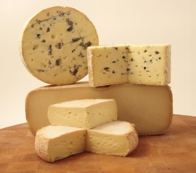
５：パリで健康診断も楽じゃない（その１）
必要があって、こちらで健康診断を受ける羽目になってしまった。ある機関に提出するためだ。先方指定のかなり細かい書式があって、検査項目の全てを行ってくれる医者を探さなければならないのだが、それはフランスでは不可能だと知った。つまり完全分業制なのだ。流れとしてはまず、最寄りの医者へ行く。医者が処方箋を書いてくれる。それを持って、血液検査なら血液検査を行うラボ（研究所）へ、心電図なら心電図、レントゲンならレントゲン、というように、それぞれ自分で予約を取って、検査し、支払いをし、それらの結果をかき集めてふたたび最初の医者の所へ持って行く。すると「はい、大丈夫ですね」（あるいはダメですね）と医者が判断し、さらさらと診断書を書きあげてくれるシステムだ。その間、約２週間。何も健康診断に限ったことではなく、これが一般の診療システムの構造である。この初回予約だけでも、混んでいる時は２週間待ちがざらだそうで、一か月先なんて珍しいことではないらしい。速やかに病気を診てほしい場合にはどうするのだろう。私立の総合病院がある。緊急も受け付けているし、英語も通じる。近代的設備で、素早くて、日本円にして何十万とかかる。解決策はどこの国でも一緒みたいだ。
私の場合、まず「最初の医者探し」で難儀した。フランスでは「社会保障制度」（みんなが「セキュ」（セキュリティ・ソシアル）とよんでいるあれだ）というのがあって、国民一人一人に番号が与えられ、それが書かれた緑の電磁入りカードを持っている。外国人とて例外ではない。加入は義務である。手続きはそれなりに複雑だけれど、イメージとしては国民健康保険みたいなもので、各方面から払い戻しを受けると、最終的にはかかった医療費の３割程度の自己負担で済むらしい。私はいい歳をして学生ビザというステータスでフランスに滞在している。２８歳以下の留学生に対しては、授業登録時に学校や大学で、強制的に加入の手続きをさせられる。しかし２８歳以上の確固たるオトナには「自分でやっといてね。どこ行くのかは知らないけど」と情報すら与えられない。ここは外国、サーヴィスの観念の欠如した大陸である。もしこれからそのようなキトクなシュチュエーションを想定していらっしゃる読者の方がいたら、それなりに、覚悟は必要かも知れない。私の場合、もろもろの事情が重なり手続きを伸ばし延ばしにして、その時点では未加入のままであったことを白状しよう。まあ、企業派遣の人の中には、例によって例のごとく、フランスというお国柄ゆえ何度も何度も加入のため然るべき機関に足を運び、ついに番号とカードを手に入れたのは１年後、帰国１週間前だった、なんて普通にある話らしい。
社会保障制度に入ると、一応最初に、自分の「かかりつけ医」を決め、登録しなくてはいけない。無料で５年に一度、健康診断も行うことができる。ところが「セキュ」無で、その上、日本から適用される各種保険では「健康診断」は適用されない。全額自費となる。
まずはどこへ行くべきかとガイドブックやら大使 館 H P でお墨付きの病院にいくつか当たりを付ける。これが想像以上に時間を取られた。
A 病院では「そんなの無理です。学生じゃ払えませんよ。何十万とかかります。企業が負担してくれるなら別ですけど。日本へ帰って受けたらどうですか」と冷たくあしらわれ、日本 人B 内科医には「な、なんでウチなんですか。うちは機械がないので、身長は図れますが、体重は図れませんよ。それでも２０ ０~ ３００ユーロはもらいます。それ以外に５～６００ユーロはかかるでしょうね。ほかにパリに、沢山医者はいるでしょう」「と言われても・・・某機関お勧めだったので電話した訳ですが。そうまでおっしゃるのなら、他にお心当たりはありますか」「僕は、フランスでうちの病院しか行ってないしほかにどういう病院があるか一つも知りません」（－――聞いた私がバカだった） 英語の通じ るC 医師 やD 医師の所も電話で聞いてみたが、ほとんどがパリ在住日本人マダムのための出産専門医である。産婦人科なら産婦人科と書いてくれ。そんなわけで、一連の公リストに載っている所は諦めた。こうなったら我、フランス語の荒波に漕ぎ出で、開拓の闘いに独力にて赴くしかない。
結局いろんなインスティチュートや公立、国立病院をたらいまわしに彷徨った挙句、辿り着いた一人の開業医がいる 。 5 0 代後半からその少し上の世代ぐらい、髪には白いものが混じり、静かなアパートの一室でもう何十年と（注：イメージ）患者を見てきた、といった感じの、経験豊富な男性医師だった。同じ区内である。週明けに予約を取ってくれ、私は経緯と財政困難状況を訴えた。静かな笑みを称えうなづく様子は、殆ど仙人のようであった。
彼は自分のところで出来る項目と出来ない項目を私に説明し、レントゲンならこの近くで紹介できます、とその場で電話をかけ、翌朝の予約を取ってくれた。私一人で、フランス語で行うのは困難だった。血液検査についてはラボの調べ方を教えてくれた。インターネットで 「 laboratoire d'analyses de biologie medicale 」と入れて自分の区で検索をかけるように、と。あ、ここなんかいいかな。大通りの、教会の直ぐ左手に入ったところだから。電話番号は今メモする？出来れば予約はしておく方が無難だね、などと、その場でいくつか候補を教えてくれた。
フランスで、医者にかかるのは楽ではないが、苦労の末いろいろ身に染みいることも多い。その（２）検査編に続く。
６：パリで健康診断も楽じゃない （その２）
翌朝一番、９時の予約で向かったのが胸部レントゲン。ラボは小さいがとても近代的な設備だ。白で統一された内部に、北欧風デザインの赤い椅子がランダムにおかれている。受付のお姉さんたちは真っ赤な制服を来て（どうして赤なのだろう）きびきびと担当患者をさばいていく。フランスで、このように確固たる職業意識の感じられる風景を見たのは、正直初めてだ。
登録を済ませると、各自ファイルをもって一旦建物を出て、隣の検査室へ行く。再び受付を済ませると、待合室のテレビの大画面で、日本でいう「はなまる」みたいな朝の情報番組をやっている。「ああ、フランスにいるってこういうことか」とふと思う。朝からレントゲン撮影のためだけにレントゲン撮影の施設に行き、待合室で流れるテレビには、フランスの風景やニュース室の男女が映し出される。もちろん、語学学校で書き取り練習のため聞くような、わざとらしいフランス語じゃなく、機関銃スピードの会話が延々と流れ続ける。日本でどんなに頑張って外国語を習得しようとしても、日常生活内には限界がある。日本の病院の待合室には、日本語の週刊誌が積み上げられ、テレビから聞こえてくるのも今のところ日本語が大多数だ。ノーマルな外国語の会話が「嫌でも」入ってくるシュチュエーションはどうしたって限界がある。
検査の建物は男女別のはずが、奥に季節外れのサーファーみたいな、日に焼けたジーンズ姿の兄ちゃんが居る。髪は金色に近く（あ、それはフランス人だからか）潮風の香りを漂わせながら（注：筆者の脳内イメージによるところが大きい）受付の女性のところへやってきて談笑している。しばらくして検査室に入る。日本のように着替えの衣装などある訳もない。上半身裸のまま機械にへばりつく。「吸っ て~ （レ～スピレ～）、ハイ止めてっ（ブロケッ）」という一連の流れを、英語でなくフランス語で行うのはエキサイティングな体験である。もう一回やりたいかというとそこまで積極的に得るべき教訓はない。日本で経験したことのない、おそらく今後もあまり出会う可能性の少ない出来事、というレベルにしか過ぎないが、まあ考察すべき点は多い。再び待合室で「仏版はなまる」の続きを見て、今度は診察室へ呼ばれると、さっきのサーファー兄ちゃんがレントゲン写真を眺めながら座っていた。「ニホンジンネ。僕オキナワ行ったことあるよ 」 ― ― 海の男であろうと踏んだ私の感は当たらずとも遠からず。医者の衣装はないのか？
私の肺の形はとってもきれいらしい。日本でも医者などめったに行かない私だが、それでも過去、胸部レントゲンを取る機会は何度かあった。その度「ほお～、すごくきれいな形をしていますねぇ」「あ、教科書とおんなじだ」と、違う土地の違う医師たちから、複数回に渡って同じセリフを聞かされ、素人の当人ですら「そうか、そんなに私の胸部は模範的形状を呈しているのか」と思った。女は見てくれでなく胸で選べ。いや、大きさじゃなくて。パリのサーファーあんちゃんですら、一言付け加えるのを忘れなかったのだ。「何の問題もナシ。ってか、君、レントゲンでみると、標本みたいにきれいだね 」 ― ― 私の胸部は、インターナショナルに通用するのだ。
レントゲン写真を抱えてバスで次の血液検査ラボへ向かう。物事がひとつ順調に片付けば、次はその反対というのが常である。入るなり、ガムをくちゃくちゃ噛んだ受付女性が二人「あ～、かったるう～い」と無気力そうな顔で座っている。私が入ってもちらりとも見ず、おお、これぞフランスじゃないかと私もようやく気を引き締め直す。今までがうまく行きすぎたのだ。店でも何でも、踏み込んだ時の予感は、特にそれが嫌なものだと確実に当たる。「え～、血液検査ぁ～、確かにここ、ラボだけどぉ～、あ、日本人？パスポート見せて」君は田舎のヤンキ―娘か。私は処方箋を渡し、検査必要項目の全てができるか、日数と費用をまず初めに教えてくれと聞いた。「そんなのアタシ、分かんな～い。１００とか２００ （€ ）とかかかると思うけど～（ガムくちゃくちゃ）やるの、やらないの？」さすがフランス人、これで平均と心しなくては何も進まない。
私：「１００と２００じゃ全然違う。まずこの処方箋にある項目を、君の目の前にある頭脳（パソコン）に入力して、検査費用総額を試算しなさい」 受付嬢：「え～、費用前払いだかんね。お金もらわなきゃ、仕事しないもん」 私：「だから聞いている。総額が分からなければ、払うものも払えない」 受付嬢：「じゃあだいたい２００ぐらいにしとく」
こら。いつの時代の、どの国だ。アンダーテーブルが必要？単に私は舐められているのか。パスポートを返せ、と言うと、この近距離で（計算済みか）手裏剣のごとく投げてよこした。それは私の美しい胸部を直撃し、床に音を立てて落ちた。彼女は生理二日目のダークな朝だったのかもしれない。あるいは重症のニコチン中毒のためノンスモーカーの彼氏と破局間際で、治療によりすごく機嫌が悪いのかもしれない。別のラボへ行く、処方箋を返せというとそんなもの知らない、という。これにはあきれ返った。
「おい、食ったのか！？」さすがに私が声を荒らげ、身を乗り出して彼女のカウンターの上をまさぐると、ようやく中から主治医らしき男性がやってきた。その間、２人いた同僚たちは知らんふり）彼女の足元のゴミ箱からは、ぐちゃぐちゃに丸められ、ガムが包まれた無残な処方箋が発見された。まあこんなときでも決して謝らないのが彼らである。私は今から行くので、近くの「まともな」ラボを紹介しろ、とその男性に迫った。いちいち住処に戻ってネット検索するのも面倒だ。するとサン・ジョセフ病院じゃないかな、とのこと。私が手持ちのミニ地図を広げると、ああ確か に 1 4 区の果 て Saint Josep h という広大な敷地が存在する。これだ。そこで私はどういうふうに行けばいいのか訊ねた。歩くとちょっと距離がありそうだ。いったんオルレアンまで戻って、トラ ム T 3 に乗った方が早いかもしれない。するとその時、私の背後から「バス６２番」という女の声が聞こえた。最初は気づかなかった、でもあれ、いま「ろくじゅう・に」って、それ日本語じゃ・・・。振り返ると、黒いコートを軽やかにまとった白髪のおばあさんが立ってこちらを見つめており、「バスがあります、ろくじゅうにばんです」と、正しい発音の日本語でもう一度繰り返した。
「ニホンジン、ですネ」 私の赤いパスポートから分かったのだろう。一部始終を見られていたわけか。おばあさんは言った。「私の、ここでの用事は、終わりました。バスまで、私と一緒に、行きましょう」 完璧な日本語である。私のフランス語と比べ物にならないほどの上手さだ。彼女はたった今、会計を済ませたというように、ハンドバッグの口を閉めながら、さあ、と私を外へ促した。病院を教えてくれた主治医への挨拶もそこそこに、私は彼女を追って外へ出た。
「ここは、日本とは違います。彼女は若いでしょう。ですから、頭、悪いです」 そう言われるとこちらも返す言葉がない。「有難うございます。日本語がとてもお上手です。驚きました」と私は言った。――私はフランス人ですが、そう前置きした上で彼女は「日本に は 4 0 年、住んでいましたから」と言った。「そうですか。私はまだ、こちらに十カ月です。あなたのようには、うまく気持ちを伝えることができません」「大丈夫です。大変ですが、生きていれば、何とかなります」
その時我々の後ろから、乗るべ き 6 2 番のバスが来た。「さあ、早く乗って下さい」と彼女は私を促した。「有難うございます」駆けだそうとする私に、彼女はフランス語で何か言った。 「 Bon voyage ! （良い旅を）」
サン・ジョゼフ病院はおりるバス停の名にもなっているからすぐ分かる。標識通りに果物屋や雑貨屋の並ぶ通りを辿っていくと、左手に見えてくる。近代的な建物だ。救急隊員らが出入りする中を、一緒に入っていった。彼らは男も女も同じ紺の制服を着て、きびきびと動いている。何故か足元はそろってナイキのスポーツシューズだったが、各人違う色とモデルだ。まさか救急隊員の指定シューズではあるまい。隊員割引があるとか？いずれにせよ、業務上、市民ランナー以上に足腰、及び身体を酷使しているのは間違いない。実用兼ねて足元のおしゃれにも堂々とした感の漂う隊員らの姿をみていると、こちらも、どこかカラフルなビタミン色のエネルギーを与えられた気がする。
総合病院であるここは、専門ごとに幾つもの建物に分けられていた。血液検査は二階左手（１）という建物だと受付で地図を渡される。院内購買とカフェを通り抜け、その建物へ通ずる中庭へと辿り着く。購買で売られている雑誌の主なタイトル、子供向けのぬいぐるみ、おもちゃ類など、いわゆるフランスの病院というのがどのような空間で構成されているのか、ざっと観察する。病院のカフェだが、珈琲はうまそうだ、など。日本の病院にありがちな圧迫感がないのは、建物の設計自体の問題か。どこにいても天が高く、光が隅々まで差し込んでいる。
検査はプロフェッショナルに、細やかな気配りのもとに、行われた。担当医など、私の支払いがあまりに遅いので、心配して待合室まで見に来てくれたほどだ。（単に６つ有るうちの支払い窓口のうち一つしか機能していなかったため時間がかかったのだ） 番号札を引いてまずは登録し、必要な検査決定後に、窓口で支払い費用の確定をする。その紙をもって、今度は支払い専用窓口へ。ようやく終えると再び検査窓口へ行き、各々の担当医に連れられ、然るべき診察を受け、一週間後に検査結果を取りに来る、といった流れだ。患者はかなり頻繁に行き来しなくてはならないが、院内は広く清潔だし、窓口の人たちの仕事ぶりも「プロフェッショナル」で救われる。「日本語でメルシーってなんていうの」「ありがとう」その場の職員が声を合わせて「アリガトー」。担当医も別れ際に大きな笑みで、「アリガトー」とぶんぶんガラスの向こうから私に手を振っている。
中庭中央に教会がある。渡仏以降、教会なんて入ったのは一度か二度、それも覗いた程度だ。
中に入ると、一人のお年寄りが静かに祈りを捧げていた。私は彼女の時間を邪魔しないよう、側面のステンドガラスを見あげ音を立てずに歩いた。朝の十時頃だ。パリの喧騒からほんの僅か離れ、生と死を見守る時間と空間が確実に存在している。一部の人々にとっては当たり前であることも、たいていの人はそれを認識しないまま日々を過ごしている。単に今は「考えなくていい」状況に身を置いているだけで、いつかは、必ずあなたも私も辿り着く場所について。
外に出て、陽の温かさを浴びて、ぼんやりと周囲を見渡した。白衣の三人が紙コップの温かい飲み物を手に、椅子に腰かけて話している。向こうから入院患者と思しき男性が、杖をつきながら購買のある建物へ向けてそろりそろりと歩いていく。手入れされすぎてどこかおかしい薔薇などないのが気に入った。シニアらしい救急隊員らが、ちょっと打ち合わせと言った感じで立ったまま会話を交わし、各々の方向に分かれていった。足元チェック。こちらは蛍光ピンク、あちらは淡いエメラルド、ナイキのマークが輝いていた。
病院を出ると、目の前には、美味しそうなパン屋さんがある。おお。実は「病院と、すぐ側のパン屋」というシュチュエーションは、私がこの世で最も好む数少ない場面の一つである。これには深い個人的理由があり、詳しく書けない。
パン屋というのは店構えを見ただけで、だいたいの味が分かってしま う ― ― というと、何を偉そうなとお叱りを受けそうだが、パン屋に限らず、基本的には同じという気がする。確かな商品を扱い、そこに店員や経営者たちの想いがきちんとあるかどうかは、店に入る前に判断できる。店員たちの動き、声、商品の並べ方、ガラスの具合、客の出入りといったビジュアル的要素に加え「場力」（ばぢから）とでも呼ぶべきか（そんな日本語があるのか知らないが）客を惹きつける空気の密度だ。人によっては、嗅覚が働くのかもしれない。強く自分を呼び込む匂いの有無。
「入るべき店」と即決するの に 1 0 秒とかからない。パリに来て以降、自分の中で最高点をマークしたかも、という予感がある。確かめてみない訳にはいかない。ドゥミ・バゲット０．４ ５€ を買った。外に出て一口ちぎってみると、うん、思った通りだ。大当たりだ。ちらりと振り返って店の名を確認しようとしたら、ガラス戸に 「 Fournisser de official d'Elyse e 」とある 。 201 3 年 、 1e Pri x と続いている。なるほど、これが噂の。
パリ市で毎年行われているバゲットコンクール。優勝者は賞金と、一年間大統領官邸「エリゼ宮」に毎日バゲットを届ける公式名誉が与えられる。判断は焼き加減、味、見た目、香り、中身の５つで２００以上のバゲットから厳しい規定を満たしたものが審査に上がる。近 年 1 8 区のブーランジェリー激戦区から一等賞が続いたが昨 年 201 3 年 は 1 4 区の店だ、という新聞記事を読んだ。住居と同じ区ならどこかで見つけるかもなあ、と思っていたがすっかり忘れていた。それがこの店、 「 Au Paradis du Gourman d 」 オ・パラディ・グルマン （ 156 rue Raymond Losserand 7501 4 ）。私は少し戻って、入口付近に置かれていたパンフを一枚持ってきた。店主リダ・カーデル氏はチュニジアからやってきて、パリで修業 し 2 0 年。店は奥さんと七年前にはじめ、一日六千本を焼きあげている。
「一位を取ったからうまいわけじゃないだろうし、賞レースなんて」といつもの私なら言ったに違いない。権威ある側のモノは信じない。でも店には確かな品格（オーラ）があり、味は期待を裏切らなかった。王者になる、ならないに関わりなく。
帰りのバスを待ちながらバゲットをかじっているとき、今 朝 6 2 番のバス停まで付き添ってくれた日本語の上手な初老の女性を思い出した。 「 4 0 年日本に居た」、それは過去形だった 。 4 0 年という決して少なくはない歳月を、私の母国で過ごしたというフランス人女性。静かだが、強い眼の光が印象的だった。最後に彼女は何と言ったか？「ボン・ボワイヤージュ」 。 ― ― 良い旅を。 フランス語だった。そのことに気づいた時、私はバゲットをちぎる手を止め、後ろを振り返った。
4 0 年の旅を終え、おそらく何らかの事情で彼女は母国に戻ってきた 。 1 5 歳で海を渡ったこのバゲットの作り手の主人とて、賞が夢の終わりではない。毎日が続く限り、彼らはまだまだ旅の途上だ。
6 2 番のバスがやってきた。健康診断は楽じゃないが、きょうの手土産をリュックにしまい、さあ、乗り込むとしよう。
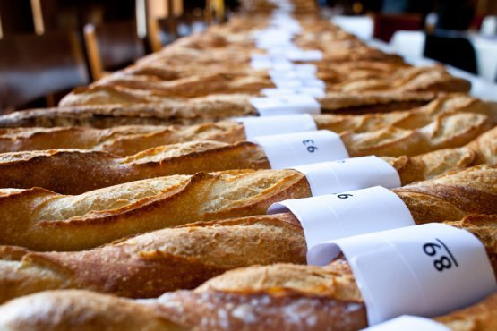
７： POISSON D'AVRIL ４月の魚
農業大国、自給率が高いフランスは、圧倒的に「肉の国」だ。日本の国産肉に比べると安く手に入り、コース料理でも牛肉メニューは豊富に並ぶ。秋から冬にはジビエという鴨、鹿などの家禽類が出回り、ちょっとした季語（風物詩と言った方が分かりやすい）である。パリでは寿司ブームが少し前に落付いたようで、今、それに代わる「ハンバーガー」が人気らしい。カフェやレストランのメニューに何種類か登場したのはこ こ2，3 年とのこと 、 bi o や厳選フランス食材のみににこだわり差別化を図ろうとするハンバーガー専門店も登場し始めた。
そんなニクニクシイブームを脇目に、ふと「パリで魚屋」ってあまり見かけないなあ、と気になりだした。住まい近くの最寄り駅周辺では毎水曜と土曜に朝市が立ち、そこで一軒見かけるほかは魚屋さん、いや殆ど「魚」そのものに出合った覚えがない。日本の築地市場のような場所は存在しないのだろうか。
「カルフール」や「モノプリ」といったスーパーの魚売り場は、日本人が見たら多分、その充実度の低さに驚いてしまうだろう（必要性に迫られない私は気にならない。客観的判断として）。パリ市 の H P で調べてみると、一応魚屋あるいは魚市場と思しきものがあることはある。そりゃそうだ、寿司や和食ブームを支えてくれたのも「魚」いてこそだ。しかしプロご用達らしく、週末のみ一般開放されている所がある程度。ある時、たまたま魚屋を発見した。寒い冬の日だった。干上がって、うるおいのないお肌 の Bar ( スズ キ) が、「なんでオレ、ここにいるかね。かあちゃん、元気っぺか・・・」という哀しげな眼つきで、道行く人々を見ていた。きっとブルゴーニュあたりから、ある晴れた昼さがり、はるばるトラックで運ばれてきたのだろう。
ところでフランス語でマグロ、と言ったら鯖（サバ）のこと。紛らわしい。じゃあマグロはという と tho n （トン）である。ちなみに現代日本で最も有名な一家をフランス語で言うとこうなる。
サザエさん ＝ turbo ( テュルボ）
かつお ＝ bonit e （ボニート）
たら ＝ cabillaud ( カビヨ）
ます（お） ＝ truite ( トリュイト）
ワカメは辞書で引いても載っていない。どうしたことか と googl e 翻訳で引く と algue s とでてくるけれど、これは一般に「藻類」のことだ。日本語のまま 「 wakam e 」（男性名詞）で 「 shitak e 」 「 tof u 」と同じ扱い。お隣のイクラちゃんも同様 （ ikur a 、また は oeuf de saumo n とも言う）。タイ子さん は drade ( ドラード）か。
シューベルトの歌曲「ます」は、ひらがなで書かれていたため音楽の授業で初めて知った時「鱒」なのか「升」なのか分からなかった。もしかしたら日本酒を四角い升にいかにうまく継ぐか、というコツについて、歌われているのかもしれない。力士志願者は試験で全曲暗誦、とか。
原曲はもちろんドイツ語 で die forell e であり、明るい河で泳いでいる気まぐれな「鱒」と、それを見ている「私」のお話だ。釣り人がやってくる。こんなきれいな河で釣りをしたって、澄み切った河の中じゃあ鱒はひっかかりゃしないよ、と「私」は思うのだけれど、釣り人はなんと突然河をぐしゃぐしゃっとかき回して、水を濁らせてしまう。卑怯な。哀れな鱒はこの戦略にまんまとはまり、竿先に引っかかった。「私」は少々腹ただしく思う。
という結末かと思っていたら、シューベルトがカットした最終章があるらしい。要約すると「青春の黄金の泉にいるあなた方、鱒のことを考えろ。用心深さが欠けている。娘ども、みなさい。釣竿を持って誘惑する男たちを。そうしないと後悔するぞ！」
この話の教訓は何だろう。「青春の黄金の泉」、いかにもドイツっぽい。ゲーテの国だ。フランス人はこういう表現はしないだろう。（歴史的に物事を『愛』という伝家の宝刀で片付けてきた）そしてその前に立つ青少年、いやここでは若かりし純潔の乙女らに向かって警告を鳴らしている。男に気を付けろと。そのためだけに、わざわざ哀れな鱒を持ち出したのか？もうどうあがいてもマネできない、文化的隔たりを感じる。
『エイプリル・フール』、これは英語でフランス語で は poisson d'avri l （ポワソン・ダブリル 、4 月の魚）と言う。もとはフランス発祥だった。な ぜ4月1 日か 。 156 4 年、シャル ル9 世 が1月1 日を元旦とするまで は3月 2 5 日が元旦だった 。4月1 日に人々が祝いのプレゼントを交換しあった。では次、何故 「4 月の魚」か 。4 月から魚が産卵期に入るため漁獲が禁止された。それで漁獲最終日 の1 日に、帰ってきた漁師たちをからかうために、人々はわざとニシンを河に投げ込み、彼らに釣らせてあげたのが（ギャグの）始まり、という話。他にもいくつかの説がある。
4月1 日、子供は魚の絵を描いた紙を人の背中に貼ってからかい合う。パリの街中を、魚のかたちのお菓子やチョコが、泳ぎたわむれている。 http://www.banette.fr/
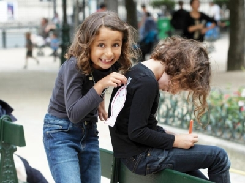
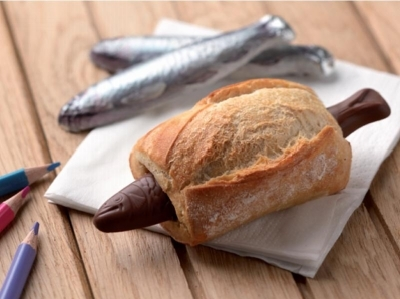
８ ： Lundi dePaqu s 何故ならパックスだから
パリの街をチョコレートの魚たちが泳いでいたのもつかの間、４月１日の翌日には見事に卵とウサギに変わっている。街のウインドウを閉める割合（出現率）はざっと魚の３倍以上だ。街中が浮足立っている。春が来ただけではあるまい。私の通っていた語学学校はまるまる２週間休みになる。幼稚園から大学まで学び舎全てがそうらしい。初めて知った。年末年始は終わったばかりではないか。これがうわさの 「 paqu s 」（パックス）、フランスにおけるキリスト復活祭である。
４月第２週の週末、いつものように朝か ら 1 3 区にある国立図書館 （ Bn f ）へ向かう。開館時間前に並ばないと、席が確保できない。パソコンと勉強道具一式を抱えた長い学生たちの列が出来ている。冬場、遮るもののない寒空の下待つのは結かなりんどい。本を開いても寒さで文章も単語も頭に入らない。巻きタバコを吸いながらおしゃべりに興じる男女を横目に、亀の歩みで辿り着くのはだいた い 3 0 分後。
今週末はその「列」すらない。しまった、休館かと思ったが、単に学生がいつも の 1 0 分の一ぐらいで並ぶことなく荷物チェックへ。いったいどうなってしまったのかと思ったがたいていの学生は旅行して過ごすらしい。私のクラスでも最後の金曜は半分ぐらいだった。スペイン、イタリア、アフリカ圏のモロッコやエジプトあたりへ行く人が多い。宿題は出さないでくれと前日に懇願していた。北欧勢も故郷へ帰った。残ったのは我々アジア人だけ。文化の差を感じる。こちらで は" ちょっと国内地方旅 行" 程度の感覚で欧州内を自由に行き来する。
パックスって、イースター （ Easte r ）だよね、復活祭だよね、と私は改めて確認してしまった。春の女 神 Estr a さんに由来するからイースターは当然世界共通と思っていたのだ。浅はかだった。そもそもはヘブライ語の「パスカ」（過越の祭り）からきていた。
春分の日以降、最初の満月から数えて最初の日曜日、という 移動祝日 で、その翌日の月曜が 「 Lundi de Paqu s 」と呼ばれる公休日。詳しいストーリーは省くが、要はキリストの「復活」にちなんで、殻を破って新しい生命が誕生する 「卵 」がシンボルになったようだ。宗教がらみの逸話はたいてい歴史が入り組み、登場人物多数で混乱確実なのだが今回は非常に分かりやすくて助かる。
以前この時期ブルガリアに行った時は、卵そのものにカラフルな絵を施したものが出回っていた。東欧の特産物、観光客向け土産物売り場などで見かけた記憶がある。フランスでは、卵をかたどったチョコやお菓子が一般的らしい。
「パルクス・パックス」というフレーズを思いついた。パックス当日「僕と（私と）パックスしてくれませんか？何故なら（パルスク）、パックスだから」とプロポーズし、パックスを結ぶカップルがいたらちょっと素敵かも。
「パックス （ PACS ) 」は、連帯市民協約と訳され、フランスで「性別に関係なく、成人に達した二人の個人の間で安定した持続的共同生活を営むために交わされる契約」のこと（ 仏 service-publi cの H P による） 。 199 9 年法的に認められたいわゆる「事実婚」だ。結婚より緩く同棲より社会的保障がきちんと定められ解消も楽。離婚 率 30 % 以上（パリ は 5 0 ％、つまり２組のうちどちらかは別れる）のフランスでは離婚時、必ず弁護士を立てて手続きをしなければならず、かなりのお金と時間がかかるらしい。春の女 神 Estr a さんが聞いたら「あらまあ、時代なのねえ」などと言って、それなりにビックリする。
これを書いている今、パックス当日の日曜の昼下がりである。寮（某国際都市という名の）の半地下にあるキッチンから繋がるバルコニーには、大勢の若者が集まって、楽しそうにワインと食事を楽しみつつ団欒している。何故か大音量で流れているのはアラブの音楽だ。ちょっと待てよ、昨夜もお隣の館で夜通しパーティーがあったは ず ― ― 。パリ居残り組たちは、こうして歌って踊って、春の休暇を過ごすらしい。
部屋の窓から、バーベキューの煙がもくもくと入ってくる。半分閉めよう、と外を眺めた。広い敷地の芝生の上に、若者以外にも沢山のカップルや、子連れ家族が、それぞれ弁当や飲み物を広げている。半分とまでは言わずとも３分の１程度はパックスのカップルがいるかもしれない。
フランスには、「卵を割らずにオムレツはつくれない 」 On ne fait pas d'omelette sans casser des oeufs . ということわざがある。（バルザックの小説が出所という説が有力） 愛の数だけ、伴う痛みにもいろんな形があるのだろう。
９ ： Dance ! Dance!
フランスのパックス（イースター／復活祭）の間、パリ居残り組の私はどうしているか。早々に課題を仕上げ、踊りまくった 。 8 0 年代のディスコや何かのハナシではない。正しくは「パリのスポーツクラブに入会し」「ダンスに通っていた」。現在進行形だ。
先月ジムに入会した。目的は「ハマム」だ。冬の間、芯から凍りついた身体をほぐしたかった。身も心も冷凍保存され、永遠に春が訪れないように思えた。渡仏 後 1 0 カ月、喋る人もなく自室に籠り成すべきことに集中した。決して苦痛を伴う作業ではない。孤独にも慣れている。ところが１つ問題があった。一日一回、サウナで汗を流さなければダメな体質なのだ。
その２年程前からヨガにはまっていた。早朝練習するアシュタンガというかなりハードな流派だ。パリへ来てしばらくはスタジオで続けていたが、もろもろの事情が重なって冬に入る頃、辞めてしまった。毎朝激しい訓練を継続していた身体が徐々にではなくある日突然、その習慣を辞めるとどうなるか。至るところが軋み、悲鳴を上げる。その悲鳴を抱え込んだまま、ひと冬を過ごした。スポーツで自律的に身体をつくった経験のある人なら分かると思う。丹念に練習を重ね、時間とお金をかけて積み上げたものを失うのは、たった一瞬だ。
スポーツを突然辞めるのは簡単でも、再開には何倍もの負担がかかる。気力の立ち上げにも長い時間がかかる。「ヨガ・ブルー」みたいな谷に落ちて、しばらく「ヨガ」はいいか、という気持ちも正直あった。ただ、この身体の痛み、違和感、自分の身体であってないような状態、コントロールのハンドルを誰かに奪われてしまったに似た状態は、早く脱しておく必要があった。身体だけでなく心や思考まで乗っ取られ、日常生活に確実に影響が出てくるのは時間の問題だ。
外国で日本同様のサーヴィスが望めないのは承知の上だ。ましてやサウナなど、命に関わる問題でなく、優先順位は限りなく低い。アイデンティティーや滞在に関わる大事なことが山ほどある。ところがパリに来て一か月もすれば「倒れる寸前ぐらいまでサウナで茹であがり、世界が蜃気楼となる感じ」が懐かしくてたまらず、禁断症状との闘いが始まった。サウナ中毒だったわけだ。タバコや薬、マラソンといった、アドレナリンを刺激するに近い何かだ。パリ市内で「ハマム」がいくつかある。有名なのはパリのモスク併設のハマム。値段も良心的で、垢すりやマッサージはオプションで自由に選べる 。 1 8 区移民街、レピュブリック広場、市庁舎周辺にも遠征を試みた。しかし１ 回 20~3 5 ユーロ前後もかかり、何度も行けるわけではない。衛生面、その他もろもろの海外事情により（男女一緒でスッポンポンなど）、さすがの私も懲りた 。 45 0 円（東京都）で入れる銭湯は日本の財産だ。パリにもロンドンにもオスロにもなく、あとはフィンランド移住しかない。
最後の手段だ。スポーツクラブに入会するのが手っ取り早い。マシンだの器具だののトレーニングには目もくれず、コンバットやパンプ系のフロアレッスンにも出ず、ひたすらサウナのためだけに、修行僧、いや尼のごとく通い詰めるのだ。せっかくなら施設も利用すればいいのにと思われるだろうがその心配は無用。確かに日本のサウナでも「あら、今日はサウナだけ？」「今日もサウナね」「いつもサウナね」「あなた、下（運動フロア）で見たことないわね」「あの人『サウナ会員』だから 」 ― ― 慣れっこである。実は学生時代に一生分のトレーニング（自称）をし尽くした感があり、この先死ぬまでランニングマシーン及びトレーニング機器に触れるまい、とまで感じる苦い思い出がある。この話題はやめよう。とにかく人には、深い事情がある。
パリでスポーツジムといっても情報がない。どこへ行けばいいのか、費用も見当がつかない。住処である寮からアクセスのよいいくつかのジムをピックアップした。たいてい一日無料体験可。料金システムはどこも似たり寄ったりで、一か月ぽっきりだと高くつき、一年契約で銀行引き落としにすると概ね日本円にして一万円以内で収まる。日本とそれほど変わらなそうだが、問題はその内容だ。期待するわけもないが、更衣室、シャワー、ロッカー等の施設ハード面については閉口した。「これが平均」と言い聞かせ、ようやく３つ目で「ここなら通えるかも」と手ごたえを得る。大手で、市 内 1 7 か所が使い放題か。スタジオプログラムが充実している。
今はやり の Body Ja m （昔のエアロビを、現代風にアレンジして機能的に脂肪燃焼。決してレオタードなど着ない） 、 body attac k といったカンフー系を試してみたが、日本だろうと外国だろうと向いていないモノは向いていない。「自らの人生の決められた一 日 2 4 時間のうち 、 4 5 分 、 6 0 分といった受動的身体エクササイズを強要されるのが我慢ならない」。運動が嫌いなのではない、強制的に何かをさせられるのが徹底的にダメらしい。この手のエクササイズが本来狙いとする、エクスタシーの頂点に達することができない。自発的意思に基づき、クリエイティブな要素が加わるアクティヴィティでないと面白みを感じられない。やっかいな人ですね。
結局残されたのはダンス系レッスンのみ。日本で経験したのは日曜の午後「バレエ・基礎、初級」でおばさまたちが「１番ってなに」（注：バレエの脚のポジションのこと）と言いなが ら 7 5 分間の談笑で終わるもの。また「ジャズ初級」は教師がおらず、受付のお姉さんが「社員だから」と未経験で教えに立ち、いつの間にかつぶれていた。しかしここではダンス系クラスの種類が豊富で、教師も大勢いた。フリージャズ、モダンジャズ、ダンスコンテンポラリー、アフリカン、サルサ、社交、ヒップホップ、クラシックバレエ、バーオーソル（床で行うバレエの基礎に基づいたバランス調整）からアフロ、ラテン、オリエンタルダンスまで。ちょっとしたダンススタジオ並みの揃えだ。また「モダンジャズ」一つにしても、先生によってレッスン内容がまるで違う。ここにリンゴが置いてあったとして、それを描写するホロメスと向田邦子とバートランド・ラッセルぐらい違う。
踊ることは好きだった。本と同じぐらい。本と踊りと音楽なしでは、うまく生きられなかった。体中の 約 7 0 ％は水分でできているが、それと同ぐらいの濃度で、私という人間は本と踊りで構成されていたといっても過言ではないだろう。ジャズダンスから始め、クラシックの基礎が必要となりバレエも習った。しばらくの断絶を経て、それでも海外のダンサーが来る時にはお小遣いをためて見に行った。当時はシルヴィ・ギエムが絶頂期で、府中で『ボレロ』を観た。
2 0 代以降もダンス熱はさめやらず、入社式の前日、最後のジャズダンスの舞台があり、神戸まで行った。スーツに着替え 、 3 1 日の三 宮 2 2 時発の夜行バスに乗り込んだ。東京へ向かった夜を、今も覚えている。
社会人になってからも、僅かな時間があれば、スタジオを見つけて通った。ジャズから離れている時はバレエに、バレエを離れてジャズやモダン、コンテンポラリーに手を出した時もあったが、基本的に踊っていない期間というのはそれほどない。渡仏の際、スーツケースの中に使い慣れた一足のバレエシューズだけ入れてきた。夏に、パリのマレ地区にある某スタジオレッスンに行ったが、評判の割に覇気を感じられなかった 。 2 0 代の頃に一度訪れているが、その時に比べて、何かが明らかに欠如していた。変わったのは私のほうかも知れない。分からない。
さてこのジムで、モダンジャズとヒップホップのクラスに出ている。１クラ ス 9 0 分。離れても戻りつつ、この先もずっと関わりつづける対象があったことに感謝したい。ある人にとってはホルンとかお菓子作りとか、ガーデニングなのかもしれない。
モダンのクラスに出た時は、驚いた。クラス は 2 0 人前後だ が 5 0 代ぐらいの先生と同年代かそれより上ぐらいのおばさま層だ。先生よりもよく喋り、出来ない動きだと後ろの壁間際で一鑑賞者と化す。ジャズシューズを履くのにも、最低５分はかかる。靴ひも結ぶより、おしゃべりしているほうが断然長い。 「 CouCou~ ~ （ククー）」と先生は大人たちを整列させるのに時間を費やしている。これじゃ幼稚園の保母さんである。（注：ククーは「ヤッホー」「ほらほら」「ハロー」といったニュアンス）まあ日本のジムだって、似たようなものだった。国を越えても変わらぬものは変わらない。
場所柄 、 1 5、 1 6 区あたりのブルジョワ奥様が多い。クラスに出てくること自体が楽しくて精神衛生に役立っているのだろう。寿命だって運動していない人に比べ 、5 年は延びている違いない。おばさまの一人は私に言った。「先生がアンタほど若い頃から来ていますよ。かれこ れ 2 0 年ぐらい」。レッスン後の更衣室は壮絶だ。裸になって、振付けの最後の部分を誰かが踊り始める。「ねえさっきやった新しいとこ、あたし階段上がる間に、忘れちゃった」「こうで、こうよ」「で、次はこうじゃなかったっけ」総勢５～６人が全裸で踊る姿はそれなりに荘厳な眺めだ。ブラジルの若い女の子たちのぴちぴちサンバなんかより、だんぜん迫力がある。垂れ下った乳からは、年月の重みが感じられ、人間味に溢れている。是非皆様も一度近くでご覧下さい。うっかり参加したくなって・・・・？？？
Hip Ho p はこれまでも、おそらくこれからもやらない種類のダンスだと思っていた 。 N Y 裏通り兄ちゃんのくねくね系ステップなんてとても真似できない。何事も広くやればよいものでなく、向き不向きを見定めるべきだ。適したものの中で掘り下げていくことだって短い人生には必要だ。
バレエシューズ一足で、ジャズ強行がいよいよ困難になってきた。頑張って無理に踊れないことはないが、滑るし、時に踏ん張りがきかず、へっぴり腰で間抜けに見える。最大級の力で飛びたいのに靴のせいで飛べない、回れないというストレスフルな状況が重なり、ついに市内のバレエ・ダンス用品売り場へ 。3 か所をみて回り、気に入っ た 4 1 ユーロのシューズを購入した。サンシャというダンスメーカーで、私の人生最初のバレエシューズがこの社だった。そう言うと私が購入したのと同じシューズを履いたイケメン男性店員が色々とおまけを入れてくれた。軽 く 18 0 センチは越しているであろう彼は、その場でシャンジュマン（バレエの脚技）も見せてくれた。なかなか営業上手である。試し履きをして唖然。これまで履きつぶしてきたシューズと違う。床の感覚がダイレクトに指で感じられるのに、かかと部分はしっかりクッションがきいて、重心が下方に安定される。スバラシイ。私は翌週のモダンジャズの前に履きならしておくためだけに、そのまま最寄りジムで夕方から の hip ho p に直行した。ただそれだけの話だった。
フランス語で はH の音は発音されないから、まさに「イップ・オプ」みたいに聞こえる。「ワン・ツー・スリー」のカウントだからどんな早いテンポでもノリにのれるのだが「アン・ドウ・トロワ」で受けるヒップホップなど想像もつかない。経験してみるのも悪くない、程度の気持ちだった。
定 刻 1 0 分前なのに、既 に 2 0 人ほどの生徒が、完璧な一曲の振りを繰り返している。舞台か何かの特訓かと思った。スタジオは広く、照明は暗く落とされ、彼らの踊りを私はじっと見つめていた。教師 は 4 0 前後の男性。なかなか力強いオーラで、舞台人の存在感を懐かしく思う。その人が行くに強烈な重力が渦巻くのが色彩を伴って見える。教師には、口で振付を説明するタイプと、自ら見せて生徒についてこさせるタイプといるが、どうも彼は後者らしい。
定刻を少しすぎてヒップホップのクラスは始まったのだが、フロアにはまだ、前のメンバーの熱さが残っていた。アップをしながら、ああ、いつまで続くか分からないけれど、いつまでパリに居られるか分からないけれど、今、この一瞬を大切にしよう、と、素直に思った。振り移しには、だからできる限りついて行った。若い時の「熱さ」は変化する。誰だって。身体は昔に比べたら固く、脚は開かず、上がらなくなる。なんとかぎりぎりまであがいたり対抗したりして、変化を受け入れるのはしんどさを伴うこともある、それでも踊り自体は、「深み」を増していくのは可能だ。
彼のスタイルは 「 Street Jaz z 」らしい。ダボダボウエアでズボンをずり下げ「大人なんかくそくらえ」と叫んでみたりする「ヒップホップ」ではないらしい。第一印象としては、エナジー と nomble ( 気品）を持ち合わせているということ、一言で言えば 「 Photojeni c 」（フォトジェニック）だな、ということだった。この教師が年月を重ね築いた「スタイル」である。私はその時、例えるなら通りすがりに、熟練のトランペット吹きの音楽を偶然耳にしてしまったようなある種のふるえを感じていた。「ああ、どうしようこんなすごいものを見て（聞いて）しまって」という恐れに近かった。
クラシックな伝統芸能と比べると、現代ダンスは軽く見られがちだ。踊る人の数だけスタイルはある。私はこの日、彼の「空間をひとつにまとめる力」に衝撃を受けて帰った。
N Y に「アルヴィン・エイリー」 （ 195 8 ～）というダンスカンパニーがある。アフリカ文化を取り入れ、人間の身体、魂そのものに迫ってモダンダンスの歴史を変えたといわれる。伝説の振付師、アルヴィン・エイリー。地の底から湧きあがるような舞踊がなぜか思い出された。もちろん表現も、テクニックもまるで違う。でも、想いの河のほとばしり方がどこか似ている。
そういえば「フランス語」でのクラスに違和感を覚えなかったのは余裕がなかったせいだろうが、そもそも古代より舞踊は「言葉にならない想いを表現する手段」だから。――それじゃ困る、ますます語学が上達しない。せめて休講情報ぐらい、ちゃんと理解できるように。
1 0 ：パリを歩けば
その昔 、2 年ほど神戸に住んでいた。「犬も歩けばケーキ屋に当たる」と言われる、洋菓子発祥の港街。珈琲と洋菓子の歴史は明治時代にさかのぼり、最初は居留地の外国人向けにつくられていた。初めて日本人職人が手掛けたのが今の「風月堂」、ゴーフルで有名だ。祖母が好きだったため、小さい頃私もよく食べた。いちごとバニラと珈琲のクリームの挟まれた薄焼菓子が、茶色い丸い缶に入っている。クリームが苦手な私は、それより黒い横長の缶に入ったレスポワールという焼きワッフルがお気に入りだった。ほんのりバターの香りがして、あれが私の『異国』の香りである。今思い返してみればフランス語だったのか。焼き菓子で知られるカール・ユーハイムさんはドイツから（ちなみにバウムクーヘンは輸入品でなく、日本で彼が初めて焼いた）、チョコならロシア革命を逃れてやってきた、ロマノフ王朝の菓子職人：マカロフ・ゴンチャロフさんがいる 。 4 7 都道府県のうち、神戸洋菓子協会が最も古い。老舗が集中しているエリアは神戸港から元街、三宮センター街にかけてだが、実は御影、住吉地区、岡本といった阪急沿線もケーキ店激戦区、レベルは相当高い。珈琲好きの私には、夢のよう な2 年間だった。
ベルリンを歩けば、クマに当たった。ほんとうの話です。私が訪れたの は8 年ほど前になるが、ベルリンでは街中至る所にクマの像があり、聞くところによるとその 数 10 0 体。「バディベア」という名で、同じ形の像に世界のアーティストがペイントを施している。今もあるのかな。特筆すべきはギーンゲンという小さな街。ここはシュタイフ社というテディ・ベアをつくっている会社とミュージアムがあり、クマ一色の街なのだ。半端じゃない。普通の家の軒先にも、パン屋にも花屋にも、レストランから病院に至るまで、カラフルなクマさんたちが思い思いの大きさ、体型で張り付いている。ふと足元に目をやると、路上にクマの足跡までついている。芸はどこまでも細かく、徹底している。イギリスのパティンドンさんも気になるけれど。
さてパリ。パリを歩け ば ― ― 犬に当たる。パリジャンは犬（シャン）が大好きらしく、パリシャンという造語まである 。 1 4 区には犬専用公園ができた。東京で住んでいた自由が丘も、人間より赤ちゃんと犬が多い街だった。犬なんて私より上等な服を着ていた。犬専用のホテルや美容室まであった。まともに疎外感を感じていたのは私だけ？
パリを歩けば、、、ブーランジェリー、物乞い、貸し自転車（ヴェリブという。パリ市が導入）駐輪場、メトロの中の大道芸人に当たる、のはまあ周知の事実。物乞いなんて日本のコンビニぐらいの距離感覚 で 10 0 メーター置きに座っている。外見、衣装、小道具からセリフに至るまで、いろんなバリエーションが存在する。多いのは東欧系らしく慣れてくるとロマの格好は一目で分かる。夏ごろ、サン・ミッシェルのバス停付近に小さい２人の女の子を連れた家族連れがおり、何度か会話を交わしたことがある。向こうは私がボランティア団体か行政調査と勘違いしたのか、妙に熱心に現状を説明してくれた。雨の日には、実は彼らはセーヌほとりに隠し持っている寝床に移動する。物乞いは単なる営業活動。娘たちは６歳と４歳で、可愛い眼で見つめられたら誰だってミルクや食べ物を恵んでしまう。それも観光客目当て、なかなかに演技派の子役たちだ。さらに数メートル離れた所には、アル中らしき男が一人、ビールの５００ミリ缶を潰してへ垂れこんでいる。「父さん、しっかりしてくれよ」高校生と思しき息子まで登場。「あれは私の夫と大きい息子です・・・もちろん私たちは移民ですから、ここでは働くことができません」 ボンレスハムのように太りきって、地面に座り込んだまま私を見あげる母親は、ハンバーガーやフライドポテトの袋をたんと抱え込んでいる。場数を踏んできた役者たち勢ぞろい、といった感じだ。反対岸をテリトリーとしている中年女の物乞いは、足の悪い息子役を登板させているにも関わらず勝敗は明らかに見えた。ここじゃ商売あがったり、と思ったのか、一か月もすると別の場所でその母子をみた。服も靴も一新され、少年は足なんか全然悪くなく、すたこら歩いて人ごみの中で女性のバッグを狙っていた。
彼らも色んな知恵を身につけながら、このパリで逞しく生きているみたいだ。
1 1： Googl e のロゴ Happy Earth Day
若い時に比べ、落胆したりカンドーしたりということがなくなった 。 2 0 代の半ばぐらいまでは、それでも結構きつかった。「繊細な感性」は若者の特権だけど、事あるごとに傷ついたり、あるいは震えて立ち上がれないほどの感動を得たりして、心も体も忙しかった。よくそんなエネルギーがあったものだ。他人から見れば些細な事柄でも、その時々の自分にとっては「一生を左右する切実な問題」であり、中間なんて存在しなかった。明日とは『希望』か『破滅』かのどちらかで、フ ツ― という物差しを持たなかったのだから、仕方ない。それなりに切羽詰まっていたのだ、いろいろと大変だったんだ、と思う。若さだけでなく、もちろん先天的、あるいは後天的特性もある。どんなに若くても、驚くほど冷静かつ頭が切れる人もいれば、逆の意味で物事へのリアクションが弱く、薄い人もいる。優越の話ではない。個人的には「何かが極端に突出し、その分何かが極度に欠如している」という状況、性質にマニアックなまでに惹かれてきた。作家、作風、気がつけばそのようなものを自然に選び取っている。結果的に、高校時代はロシア／仏文学にハマった。
『中庸』がよしとされる日本社会においては、この性質は早い段階で修正しないと、集団で生きていけない。バイキン扱いされ「ゲージュツ家にでもなってのたれ死ね」と信じられないセリフを言われておしまい。でも一方で、岡本太郎やピカソみたいに「芸術は爆発だ！」と叫び続け「個」を生き抜く人たちもいる。彼らが決して楽だったわけじゃない。しんどさを全部飲みこんで、表現や創作のエネルギーに転換してきた。
ところ で 2 0 代までの「触れたら火傷するぜ」的熱さは、それがどんなに自らの習性に元づくものだろうと、ある「分水嶺」をこえた時点で、急速に弱まっていく。いいことか悪いことかは分からない。たぶん人生が進むにつれ、純粋さと引き換えに色んな防御策を身につけてしまったのだろう。ランボーが長生きしなくて良かったと思う。うまい痛みのかわし方を覚え、別の何かでマッサージをしている。敵や詐欺師を、向こうがやってくる前に見わけ、近づかない技も知る。何せ彼らは一人として「ワタシ詐欺師です」と書かれた名刺を持ってはこない。初対面の時は、ニコニコと優しい顔で「あなたの味方です。助けてあげます」と近づいてくるから、若い時はそれなりに痛い目にもあった。お金も失った。でもこれだけは、と胸を張れるのは、いのちと魂だけは売らなかったこと。奪われたのは、立場や、それに付随した信用だったりする。そのことで、人生後退したような気もしたしへこんだりもした。長い眼で見るとまあそれも「大したことないじゃない」と言えるようになった。人生には、もっと悲惨なことが一杯ある。「信用」のような、目に見えないものを失うのは辛いが、今考えるとそれも私の「立場」に対するもので、私個人に対してのものではない。分かり易く例えると、会社の名刺でどれだけ人脈をつくっても、辞めたら見向きもされないという感じに近いかもしれない。あくまで例えです。
今日はそんな重い話をしようと思っていたわけじゃない。冒頭から済みません。
日々の中で誰にでも一つぐらい「なくてもいいけど、あればあったでチェックしちゃう」何かがある。ある人にとっては今朝見た夢や、ホロスコープだったり、朝食の目玉焼き具合だったり、受付嬢の機嫌（ニッコリほほ笑んで、挨拶してくれたか）という、その日のバロメーターになるものだ。私は子供のころからこの手の占いや迷信をまるで信じないタイプで「なくてもいいけど」どころか「どうでもいい」と切り捨て、例によって過去いくつかの物事を失ってきたみたいだ。（友人とか、得られたはずの好機とか？）。
そんな自分が実はわりとチェックしてしまう、「あるもの」がある 。 Googl e のロゴだ。毎日パソコンは立ち上げるわけだから、必然的にほ ぼ 36 5 日目にしていることになる。フランスにいようとアメリカだろうと、全世界共通だ。「日めくりカレンダー・世界版」的な興味を掻き立てられる。『温故知新』『臥薪嘗胆』みたいな標語も一切出てこないから、それについて一日悩んだり、自らを省みたりする必要もない。
基本的には祝日がベースとなっている。ニューイヤー、ハロウィン、クリスマス、バレンタイン、父の日、母の日、こどもの日、日本の七夕なんてロマンチックなのもあった。国際的に知られる女性デー、なんてのも毎年つくられている。そして次に多いのは偉人の生誕何周年、あるいは世界的大事件の何周年、というものだ。発明界からはキュリー夫人、エジソン、音楽界からはドビュッシー、ジャズのエラ・フィッツジェラルド、ロッシーニ、美術界はクリムト、ロダン、文豪で優れたデザインだったなあと記憶しているのはカフカ、ディケンズ、マーク・トウェインなんてトムソーヤの冒険の男の子がペンキ塗りしていたため一発で分かる。そう、このロゴ装飾は優れた発案もさることながら、それが有機的デザインに結びついているかどうかがポイントなのだ。偉大なる人物であっても、デザインがうまいこと 「 googl e 」のアルファベットにリンクしていないと意味が無い。ドアノーは、ただ有名な写真が重なっているだけでちょっと期待外れだったし、フランソワ・トリュフォーの時も少年が佇んでいるだけでもうひとひねりあれば、と思った。その点、ニコラウス・コペルニクス生 誕 13 0 周年や、ツール・ド・フラン ス 10 0 回記念はこのアルファベットがうまく生かされ、私の中で「デザイン賞」に輝いている。ジューヌ・ベルヌの誕生日なんて、こちらも潜水艦の中から海の底を眺めている気にさせられ（アルファベットのＯの字が窓になっている）思わず「ネモ船長っ」と叫びたくなる。さすがに米国発祥らしさを見せたロズウェル事件何周年（中央のＯの字 が UF O になっていてクリックすると新聞記事が現れる）、スティーブ・ジョブズやマンデラ大統領追悼の時には、一見何の変哲もない通常ロゴの下の名前の部分をクリックするとサイトへ飛ぶ仕組みになっていた。手が込んでいる。モダンダンスのマーサ・グレア ム 11 7 回誕生日には、いきなりロゴが踊りだしたこともあった。この時はほんとうに感心してしまった。制作者のライアンさん の H P Ryan Woodward Art and Animation で、現在もみることができる。グレアムメソッドはモダンダンサーにとってはこんにちなお有用な手法だが、日本でぱっと分かるかというと少ないかもしれない。アメリカ舞踊界においては神様みたいな存在だ。ダンス界だとドイツの舞踊家ピナ・バウシュやフランスならモーリス・ベジャールで作ってください。（どちらも近年他界、世界的な偉人にはちがいない ） googl e のサイトをみると、デザインの公募は受け付けているみたいだけれど、私のように作ることができない人間の、単なるアイディアは、どうやって担当者に届けたらいいのだろう？
今日のロゴは「ハッピーアースデー」トップページの「アカフトオハチドリ」のイラストが秀逸。鳥をクリックするとぱたぱた羽を動かして、「スカラベ君（ふんころがし）も大興奮」とか烏帽子カメレオンとか、フグが回転したりしている。普段こうしたアニメーション画像に興味のない私でさえ、無条件に見入ってしまうほどのかわいらしさ。
コラムとエッセイ集出版のために奔走していた。ほんとうは雑誌連載で、毎回を描いてくれる人を探していたのだけれど。こんな和やかなイラストを手掛ける人になら、依頼できたら、こころから嬉しい。
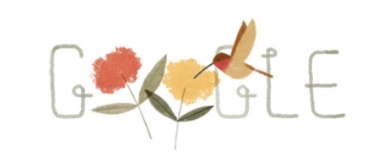
１２ ： Uni de légume s やさい王国があったなら
小学校３年生の時、初めて書いた小説が『やさい王国』という話だった。ジャポニカの自由帳を破って、ちゃんとした挿絵つきで最後にホチキスで留めて製本した。ノリとしては漫画に近い。にんじんの王様とか、じゃがいもの家来とか、あとは書きやすいピーマン、ナス、トマトがでてきて、悪い王様を倒し、自分たちの手で新たな国家を統治す る ― ― という、基本的にはその流れだ。基本的というのはこの『やさい王国』はシリーズもので、悪い王を倒した後も、やさいたちは新国王夫妻を迎え、国家繁栄のために、更なる闘いに挑み続けていくという冒険物語だった。いったいどこから着想を得たのか今となっては忘れてしまったが、私は５歳ぐらいから本にかじりついていた変人で、小学校２年生に上がった時、６年生までの推奨図書を読み切って「もうないの」と退屈し、憤慨していた。仕方ない、自分で書くしかないと腹をくくったわけである。（もっと読むべき本はあっただろうに。しかるべき時に然るべき道を照らしてやる大人は、だから必要なのだ）
そのころ、私は小説家になりたい、物語を書いて生きていきたい、と切実に思っていた。どれぐらい切実かというと、文字通り、食べ物も喉を通らないぐらい本気で思っていた。小学校から高校までの全ての卒業文集にそう書いた。小学校２年でキュリー夫人を知り、それからエジソンや、ベートーベンといった世界の偉人たちの伝記を手当たり次第読み始めると「こりゃあ敵わねえ」と心の中で降参した。不思議の国のアリスも、ネモ船長も、ダルタニャンも、所詮は架空の世界で、ほんとうにこの世を生きた人間のすごさには敵わないの か ― ― 子供心に、そう思った。
パリで通りを歩けば偉人たちに出くわす。そっくりそのまま地下鉄の名前になっている所も多い。パリのメトロマップなんて眺めているだけで歴史の年代地図帳だ。考えたら、東京の山手線の中に「夏目漱石」とか「平塚らいてう」とか「南方熊楠」とか「森鴎外」がいることになる。スマホやカーナビで「野口英世を降りたら、伊達政宗を右へ曲がってください。そのまま津田梅子通りを直進し、湯川秀樹広場に出たらすぐです」とアナウンスされるわけだ。恩恵を受けるのは受験生ぐらいか。「初デートなのに聖徳太子駅を指定してきたのよ。ちょっとセンスないわよね」とか「松下幸之助ジャンクションで、信号機故障だって」。ビクトル・ユーゴーに、エミール・ゾラに、ジョルジュ・サンクに、太刀打ちできるのか――フランクリン・ルーズベルトさんが居ても、日本の首相の名が駅名になるとはちょっと思えない。
いつか描いた、やさい王国がこの世界のどこかに、ほんとうにあったなら。（何故か仏語圏 ） 2 1 世紀の現在、地下鉄やトラムの駅ぐらい存在している。名前はみんな歴代国を統治した王族やさいたちで、キャロット１世とかエピナール（ホウレン草）王妃とか。周辺ゾーンには、サルスフィ（西洋牛蒡）大臣やロケット（ルッコラ）書記官たちの名前も控えている。子供たちはシャンピニヨン幼稚園に通い、大人たちは近所のサラダ医院で、自分に足りない栄養素を補給することができる。隣人同士は助け合い、例えばじゃがいもさんとピーマンさんがちょっとずつ自分の一部を差し出しあったりして、仲良く暮らしている。
そんな平和な ＜ Uni de légume s ＞がどこかほんとに、あったなら。
１３ ： Les garcons et Guillaume, a table !
フラン ス 201 3年 1 1 月公開映画 <Les garcons et Guillaume, a table ! > 「ギャルソン、ギヨーム、ご飯ですよ！」 は 201 4年3 月、セザール賞を総なめにした。主演（及び母親役）・監督・台本は、役者のギヨーム・ガリエンヌ。ゲイと思われていた主人公がヘテロと気づくまでのコメディタッチの自伝。昨年は同性結婚が合法化された年で、タイムリーな話題だったらしい。封切後、街の映画館は『ギヨーム』一色で、受賞を機にまだ根強く上映され続けている。も う DV D もあるのに。
何を今さら、という感じだが、一人４役をこなしたギヨーム・ガリエンヌさんは、コメディ・フランセー ズ 200 5 年入りの役者で、映画の元は同タイトルのワンマンショー（自分、父、母の３役）ということだ。映画もそれに基づいて一人称回想で進められていく。ギヨームは３人兄弟の末っ子で、女の子が欲しかった母は彼をそのように育てる。ギヨームは「そうか、自分は上の兄ちゃん２人とは違う。男じゃない」と信じ、多感な少年時代を「ゲイ」として男子寄宿舎で過ごすもの の ― ― というひとくせある自伝映画に仕上がっている。なるほどフランスでうけるツボはこれか。人と違うことが前提の国家とはいえ、個でいることは楽かと言えば、そうじゃない。異なることは、自然体でいること、ありのままでいることみたいに考えている人が居るとしたら、それは大間違いだ。集団でいることなんかよりずっとキツく、孤独で、永遠の努力を要する作業で、闘いには違いない。個を尊重する国に行きさえすれば自由になれると思ったら、相当痛い目にあうだろう。
映画評は別の場所でするとして、今日はその名前「ギヨーム」考。最初にタイトルを見て、うまいなあと思ったのが、このギヨームという名前が男女どちらにも使われるものであるということだ。昨年、私の仏語音声学もギヨーム先生。妊婦、そう女性である。自己紹介の時、「私の名前はフランス人では昔からある平凡な名前ね、有名人では他に誰か知っている？例えば詩人の」「――ギヨーム・アポリネー ル Guillaume Apollinaire ) ！」なるほど。私など真っ先に「ギヨーム事件」が浮かぶけど。（注：西ドイツ時代の首相秘書、ギュンター・ギヨームによるスパイ事件）
日本で も" 同じ名 前" を題材にしたヒット映画があった。岩井監督の 「 Love Lette r 」 （ 199 5 ）は「いつき（樹）」という二人の男女の展開する物語 。 9 0 年代 に 1 0 代を過ごした我々にはバイブル的存在 。 200 0 年代に入って映像輸入が自由化された某アジア国の若者に、この映画は人気らしく、パリの街中で、『オゲンキデスカ～』（映画中の『必殺』セリフ）」と手を振られたこともある。
キリスト教系の国ではこうした「男女どっちでもイケル」名前が結構あるみたいだ。「カミーユ」なんて男性の名前かと思っていたら（カミーユ・クローデル／彫刻家）女性にもいる。発音は同じでも綴りが違って、女性のほうが最後に 「e 」が一個多く付く。「ミッシェル」「ルネ」さんも同様。「ドミニク」はもともとｅで終わっているから、男も女もドミニクさん。
フランス人の名前は素敵だけれど、響きの萌え度・世界ランキングで上位トッ プ 1 0 に輝くのは、どう考えてもロシア人である。それも名前じゃなく氏（ファミリーネーム）のほう。よくロシア文学は登場人物の名前が難しすぎて覚えられない、本名とニックネームが混在し、さらにミドルネーム（～ッチ：～さんの息子、とか）が加わったりして、読者に不親切だ、などと言われる。確かに最初は面食らう。でもそんなのアルファベット圏の外国人が日本の文学読む苦労に比べたら大したことはないだろうと言い聞かせ、一度、我慢して読んでしまう。終わるころには、あの独特の重苦しい響きが懐かしくてたまらなくなる。ジミーだのケリーだのじゃ、軽すぎて物足りない。どうしよう。軽い禁断症状のようなものがやってくる。再び手にした自分に気づけば、既に由緒正しきロシアンマフィアならぬロシアマニアへの第一歩を踏み出したと認めざるを得ない。手っ取り早く、威厳最大級でいくなら「ドストエフスキー」「トルストイ」は避けて通れない。ドミートリー、イヴァン、アリョーシャ、三点セットで覚えておけば怖いものなし。「・・・スキー」系だとあとは音楽家でチャイコフスキー、ストラヴィンスキー（かっこよすぎる）、ムソルグスキー、指揮者のゲンナージって、全部発音するとゲンナージ・ロジェストヴェンスキー、スキーの前の部分「ロジェストヴォ＝ノエル」（クリスマス）だと、これは某音楽院に通うロシア人から聞いたホントの話。
「・・・スキー」系以外に、「・・・フ」も重要な位置を占めている。スメルジャコフさんは必須。ロマノフ王朝やゴルバチョフなくしてロシアは語れず、ピアノのラフマニノフも、その発音を聞いただけでロシア革命の波が協奏曲とともに頭の中に吹き荒れてくる。
フランスにいて、ロシアの重厚な名前に想いを馳せるのも、悪くない。その昔、上流階級のロシア人たちは、美しいフランス語を話したそうだから。
１４： 頭の中の ＜ Les petits poi s ＞
少し前にやさい王国の話を書いた。それで気になって、フランス語での野菜の言い方を調べていたら不思議な例文が沢山出てきたので、書かずにいられなくなった。少なくとも「日本ではきいたこと無いけど」と、ちょっと首を捻ってしまう類のモノが山ほどある。
グリンピースはフランス語 で Le s petits poi s 、レ・プティ・ポワ。これが「あんたの頭の中にある」 （ dans la tet e ）という表現になったとたん、「あんたバカね」という意味になる。全く逆の意味かと予想していた。だって、グリンピースを思い浮かべてみて下さい。つやつやと丸っこく、栄養価が高くて、タンパク質、ミネラル、食物繊維等豊富で、若く青く賢い象徴ではないか。それが頭の中にあるのだから、フランス人は「きょうも冴えてるじゃん！」という時にこれを使 う ― ― ああ、翻訳家にならなくて良かった。
Occupe- toi tes oigons . オキュペ・トワ・テ・ゾニオン。これは有名な一句。映画やドラマで会話に出てくる。直訳は「自分の玉ねぎの世話をしろ」。辞書的には、玉ねぎ ＝ affair e の意、すなわち「自分のことだけしてろ＝余計な口出しするな」となる。さらに「そんなの、私の玉ねぎじゃない」＝「関係ない」というシーンもあった。文法的にはそれほど捻ったものでなく、機械的に「ふーん、そうなんだ」と通り過ぎる類のものであるが、私の頭の中に、次の図が浮かんで困っている。
農業国であるフランス人は昔から一人ひとつ自分の住居地に小さな玉ねぎ畑を有している。これは社会保障と引き換えに、国民の義務であり、ちゃん と I D 番号も与えられている。国家の一大事にはその畑で耕した各人の玉ねぎでしのぐことになっているため、勝手な輸出、売買は禁止、もちろん他人の畑の作物の盗みでもしようものなら、それなりに重い刑罰が科せられる。だからいかに飢えに苦しもうと、失業しようと、浮浪者でも人の畑には手を出さないのがルールである。 そこへ異国からやってきた旅人が通りかかる。あっちで喧嘩が始まっているみたいだ。騒がしいみたいですけど、おまわりさん呼んだ方がいいんじゃないっす か ― ― 声をかけた住民にじろり睨まれ「自分の玉ねぎの世話しろよ」 「 ☆☆ ☆ ？？」 さらに行くと、山の手から火の手が上がっている「ああ、あっちが火事です！」「サラダ話してんじゃねえよ」 「 ☆☆ ☆ ？？」 この「サラダを話す」＝「嘘、つくり話をいう」。どうしてサラダなのだ。「でたらめ」の象徴にされたサラダ側にも、それなりに言い分があるはずだ。一口にサラダと言ってもポテト、トマト＆ルッコラ、シーザーズ、コールスローから中華まで何千と種類が存在する。サラダの数だけ、嘘のパターンも存在するわけだ。
「その本はホント、なべだよね 」 ― ― 鍋？いや、ナヴ ェ Nave t って、フランス語で「か ぶ(蕪) 」だ。紛らわしい。つまり「その本って蕪だよね」？＝駄作だ、という意味。可哀想なかぶ。日本では「大根役者」というけれど、あれもフランスでは「かぶ役者」と呼ぶらしい。フランスではかぶは歓迎されていないみたいだ。ところで私 、 Nave t というアルファベットの並びや発音から想像される図が、河岸に浮かぶ、誰も載っていない舟がぷかぷかと揺れている画なのだが（決して印象派ではない）どうしてだろう
ねぎはエシャロット。発音がフランスっぽく、いい感じだ。フランス料理には以外にもネギを使ったレシピが多い。ソースと合うのかな。「私はネギになった」＝「長いこと待った」。時間をかけて、熟成する発酵食品じゃダメなのか。チーズ、バター、ヨーグルト、ザワークラウト、日本だったら納豆とかなれずしもあるけれど、直接的すぎて「例え」にならないのかな。
１５ ： Apres la pluie, le beau temp s 雨降っても・・・
Apres la pluie, le beau temp s 「雨降って地固まる」。小学校の時、学習向け某月刊誌を、購読しており、３年生で付録に「ことわざ辞典」が付いていた。面白くてかじりつくように読んだ。私の言葉好き、文章好き、ひいてはことわざ好き（マニアとも言う）はそこから始まった。四字熟語バージョンとかもあった。付録がインドネシア語とか、因数分解とか、人体のひみつ、だったら、今頃違う場所で、違う人生を送っていたかもしれない。夏休みなど比較的長い期間の付録には短編小説集もあった。コナンドイルとか、有島武雄の「ひと房の葡萄」だとか。繰り返し、暗記するぐらい読んだ。
朝からひどく雨が降っている。春先から殆ど夏を思わせるような日光が降り注いでいたので久しぶりだ。私の思うパリ は 1 0 月か ら2 月末ぐらいまで低い雲に閉ざされ 、3 月が来てようやく「あ、もしかして春が近いんじゃ」と何がしかの希望を見出せる。最終日曜日に夏時間となってからは一気に気温も上がり、半袖の人々も続出、もう夏である。夜はまだ寒い。
初めてニュージーランドに行った時、ロンリープラネットというガイドブックに「ニュージーランドには一日のうちに四季があります」と書かれていて、なるほどと思った。１年のうちいつ滞在しようが、春夏秋冬全ての気候 が 2 4 時間のうちに存在する。旅行者は、それに対応できる着脱可能な服が必要だ。その後海外を巡り続けて、何もニュージーランドに限った話ではないなあ、欧州全般にも充分当てはまる、と思うようになった。
今までやられたなあと思ったのは８月のドイツ・オーストリアだ。一か月、一人で回ったけれど雨でない日は一日もなかった。寒くて日本のアンダーシャツを着たままだったし、白のカーディガンも手放せなかった。靴はいつもびしょぬれで、途中 で pum a のスニーカーを買う羽目になった。「ざあざあ」でなく「しとしと」と降り続くのだが、日本の梅雨とは全然違って、湿気がないから、ただ、曇った空から水滴が落ちて自分を直撃する。ところで、ドイツ人は繊細で、高速道路では「低気圧が近づいているため注意」と表示がでるという。（ドイツで運転したことはないから分からない）。何故気圧が低くなると注意なのか。身体に変調をきたす恐れがあるという理由らしい。リンパや血管の流れが平時より低下するからで、敏感な人は、眠気・頭痛・めまいを感じたり、肩こりやだるさを生じたりすると医学的に研究されている。平時なら考えられないような見落としや不注意による事故が多発したりするのかもしれない。
個人差によるところが大きいと思われるが、フランス人は往々にしてドイツ人ほど繊細ではないのだろうか。
昨 年6 月、梅雨のじめじめした日本から来て、覚悟していたとはいえフランスの「夏の寒さ」はきつかった。どこへ行っても調整不能なクーラーがガンガン効きまくり 、8 月の最中に、ほんとうにダウンが必要なのだから。
雨だって気まぐれだ。いきなり夕立みたいなやつがざざっと来て 、3 分後には知らん顔、なんてことがしょっちゅうある。それをこちらでは「雨」と呼ぶらしく、誰も傘なんかさしていない。パリで傘を掲げているのは、観光ツアーの先頭を行く各国の公認ガイドさん（「ハイ、迷わないでアタシについてきて下さいね～」）だけである。折りたたみなのにバカでかく、ほぼ９ ９% 女性のガイドだ。日本 の ◎ ◎ バス、みたいに若くてスカートをはいている・・・なんて一人もいない。がっしりと、筋肉質で、早口のアメリカ英語をまくし立てる。次々とやってくる浮浪者や「金くれ」とせがむ子供、物乞いたちを見事に押しやり、各国の観光グループを押しのけ、我が先に自らの集団を率い、人ごみをかき分けて突進していく。見ていて圧倒されるものがある。こうなったら、傘の代わりに英国ステッキを優雅に振り回す、紳士ガイドの一人ぐらい居てもいいと思うが。
天候の話に戻る。パリの夏期間における「夕方」という時間帯が未だに慣れない 。 1 5 時ぐらいまでぐずぐずしていたのに、いきな り 1 7 時（日本ではよい子はみんな帰る時間だ）になって「よし、そろそろ本気だすか！」といった感じに、かあああっと陽が照りつける。誰かがどこかで、何かスイッチを押したみたいに。省エネ で 6 0 ％ぐらいのモードだったのだが、ここで一気に「夕方モード」全開になる。恐ろしい瞬間が確実に存在する。そうなると、あと は 2 1 時ごろまでそのままである。２１時を過ぎると、そろそろ営業終了、という感じでわずかずつ暮れはじめるのだが、間違っても「夕暮れ」だとか「夕闇」みたいなセンチメンタルな時の移行はない。あくまで機械的に色が薄まっていく、あるいは陽の光が弱まったために、寒さが強く感じられるのみである。とんぼもいなければ、夕焼け小焼けのメロディーが流れてきたりもしない。セーヌの河上には観光船が行き交い、人々がワイン片手にまだまだ語り合 う ― ― パリは間違ってもこどもの街ではない。ウッディ・アレンの映画『ミッド・ナイト・イン・パリ』に描かれたように、パリは基本的には夜の街だ、と思う。
高校の頃読んだ堀口大学の詩の一つに、『夕ぐれの時はよいとき』がある。それは「かぎりなくやさしいひと時」で「季節に関わらず、人の心を誘う」。気取らない日本語の語感がすっと入ってきて、何度も何度も暗誦したくなる。それでいて、段落を踏むにつれて「夕暮れ」への分け入り方はどうひっくり返ったって真似できない、詩人の「眼」なのだけれど、あれから二十年たって渡仏してみれば「堀口先生――パリには『夕暮れ』がありませんでした」というしかない。
Apres la pluie, le beau temp s 、雨の後にはよい天気、という意味。こちらでは字面のまま「雨降 る⇒3 分後に晴れている」 単純にそれだけの気候状態。ハッキリ言って「もめごとが起こった後にかえって以前よりよい状態になっている」といった、深読みの必要も余裕もない。雨降っても地なんか固まらず 「あ、降った。あ、あがった」 ただそれだけのハナシである。
Apres nous le delug e といった人がいた。「我々の後に大洪水あれ 」 nou s （我々） は mo i （私）とも解釈される 。 delug e はノアの洪水の事らしい 。 175 7 年、フランスとハプスブルグがプロイセンに敗れた際に、当時のル イ 1 5 世、あるいはその愛人ポンパドール夫人が言った言葉だとか。うんちくはいいから、結局どう訳されているか調べたら 「あとは野となれ山となれ」。
よく辞書では「雨降っ て ― ― 」の反対の諺に「大山鳴動して鼠一匹」がある。あれほど大騒ぎしたのに、期待したまともな収穫が無かった、ということ。日本語で考えれば理解しやすい。でも雨が降ろうが上がろうが「知らないよ」のフランス。反対語にしてみたところで、この「我々の後に大洪水」というポンパドール夫人のささやきのほうが、お国柄＝フランスの本音に近いのかも。「どうなろうとあたしたちのあとは、知ったこっちゃないわ」。
あ、雨がやんだみたいだ。
１６：パリのガードマン
パリのスーパーに行って驚いたのは、何も買わずして出られない仕組みになっていることだ。入り口、出口は別々だし、いずれも黒スーツの男性ガードマン（マッチョとは限らないが、何故か男性）がいて「カバン開けて～」「レシート見せて」とチェックされる。チェーン系のスーパーはまず間違いなく居る。職業的ガードマンである彼らは、必死で仕事をしている 。( というパフォーマンスを見せている）化粧品売り場のおばさんにぴったりくっついたり、集団で入ってくる少年たちに二重、三重の職業的尋問を行っている。常にこうして黒服の権威を見せつけることに意義があると言っているかのように。ガードマン養成学校なんてのがあるんだろうか。転職の際にも 「 ◎ ◎ スーパーで店長賞５回」とか、地区ごとに「カリスマガードマン」が居て業界では知られた存在になっていたり。ガードマン会社の引き抜きとかも結構あったりし て ― ― というのは全て私の想像だが、まあ需要があるから供給があるわけで、パリのスーパーでは、それだけ犯罪率が高いということなのだろう。人種性別言語、子供から大人まで入り乱れ、敵はどんな手でやってくるか分らない。
うっかり脱いだセーターなんかをカバンに入れていようものなら「なんだこれは」と引っ張り出される。私がかつて目にした例では、ちゃんと洗った形跡があるか、せっけんの匂いがするか、くんくん確かめられていた。売り場にないものだと判明するまで拘束されている。もちろん、他で買った商品など持っている時には、絶対によそのスーパーには行かないなどの自己防衛も必要だ。あとこれはちょっと書きづらいのだが――聞くところではアジア人はマークされているみたいだ。集団でいろいろ悪事を働くひとたちがいるらしい。私自身もかつて一度、尋問にあった。カバンの中にうっかり、あけたての「タイガーバーム」（塗り薬）を入れていたのだ。
ガードマン：「なんでこんなきれいなタイガーバームが、しかも箱ごとあるんだ」私：「それはさっき、出がけに、家から持ってきたものです 」 ― ― 首が筋肉痛だったんだよ。しかもそのタイガーバームは、昨日買ったばっかりなんだよ！返せ。
ガードマン：「パスポートを見せろ。日本人か。日本人ならどうしてタイガーバームを持っているんだ。メード・イン・チャイナじゃないか。そうか、お前ほんとは中国人だな。そしてこのビンの中身は、やばいモノじゃないだろうな 。 ― ― よしポリスを呼べ」（公文書偽造、密輸の疑いもあれば、こりゃ大物をつったな。はかせてやる）
私：「日本人だって、タイガーバームぐらい持ってるときゃ持ってるんだよ。ポリスを呼ぶなら呼べ。私に恥はない。あんたが信用を落とす結果になるだけだ」
堂々と切り抜けた経験があるけれど、時間の無駄だから、以後タイガーバームは持ち歩かないよう気を付けている（笑）。皆さんも。
彼らのうちの殆どはまともに仕事しているのだが、店舗によっては「つまんねえな。早く帰りたいんだよ」といった、経験値低めにしか見えないガードマンがまれにいる。別 に karat eや Jud o とは言わないが、あっさりドロボーに逃げられそう。さらに「こりゃあ舐められてもしかたねえ」と私を心配させたのは、彼らがおやつを平気でむさぼっていたことだ。こちらの人間は、四六時中どこでも構わず平気でものを食べているのが普通で、生活習慣・文化的な差異あってのこととは私も分かる。でも威厳が命のガードマンが出口のガラス戸の前でむしゃむしゃチョコサンドクッキーというのはどうなんだ？手にしているのは、パッケージにアニメ柄が書かれた子供向けお菓子で今週の特価品コーナーに置いてあるものだ。日本で言うなら某省危機管理室の役人が、勤務中に人目かまわずビスコをかじっているようなものじゃないか。別にビスコを食べちゃいけませんという法はないが。
成人以後の男性が、幼児向けお菓子を好む件について。個人的には好ましく思えない。「個人の勝手」と言われればその通り。でも地球上には 、6 歳に は6 歳向けの、大人には大人向けの物事がある。若い者が一生懸命背伸びをするのは世代の特権だ。 （ 2 0 代で頑張ってシングルモルトを飲んでみたり、といったような）でも努力を放棄した逆のパターンでは、ただの幼稚化と変わらない。例えば遭難者が「最後の非常食だ」と板チョコを分け合う状況設定はノーマルだ。でもスポーツ選手が食べている姿 が T V で話題になったからと言って、翌日から大のオトナの男たちがこぞって（部長、課長、係長まで）スーツ姿のまま、職場でブラックサンダーをかじりだした国というのも、どうかと思う。
ガードマンのハナシに戻ろう。いっそのこと出口付近でバリバリ に Jaz z を踊ってくれたらいいのに。ガードマン学校の卒業試験に、ダンスを。マイケル・ジャクソンのビート・イットとか、デンジャラスあたりが課題曲だ 。3，4 人も黒服が集まればそれなりに迫力があるだろう。「パリのガードマンは並みじゃねえ・・・」世界中から集まった有能なドロボーさんたちだって、そこを無傷で通り抜けることなど出来まいと、こぞって逃げ出すだろう。
アルハンブラに行ったことがある。もの悲しいメロディーが思い出される。
200 0 年代の半ば、秋から初冬に移り変わる季節だった。ヨーロッパをパリから出発して、ザック一つで旅を続けていた。防寒具は日本のアウトドアメーカーの茶色いダウンジャケット一つだったから 、 1 1 月に入るともう寒くて寒くて仕方なかった。初めて越すヨーロッパの冬は、痩せた身体にしんしんとこたえた。単なる吹きつける風の冷たさ、温度の低さではない。もっと、地の底から伝わってきて、かかとから背骨、頭のてっぺんまで、骨髄をまっすぐに貫く寒さだ。言語と思考機能すら停止させる寒さだ。
長旅に心身とも疲れ果てていた。新しいものに出会っても感動せず、何も感じられず、旅のための旅になって久しかった。心を強く閉ざして、自分をつくる最後の精神のひと束がどこかにプチンと音を立ててはじけ飛んでしまわぬよう、しっかりと抑えつけているのが精いっぱいだった。もう何ひとつ考えられないから、朝から日が暮れるまで、へとへとになるまで街を歩き回るしかなかった。お金がなく、美術館だの博物館だのといった名所に入ることなどまずできない。私は観光客ですらなかった。これまでの人生のうちでも、相当きつい部類に入る時期だった、と思う。自分という人間が粉々に砕け散るのを、すんでのところで何とか意志の力で止めているのだが、それも、ぎりぎりの限界に達していた、そんな状況。なぜかその時期を辛いとか悲しいとかいった名前のついた感情で思いだすことができない。それすら感じることができなかったのだろう。
「夕暮れ」に続いて再び引き合いに出すが、堀口大学に「彼ら」という詩がある。
「彼らよく知る よろこびに 果てあることのかなしさを
彼らは知らず 悲しみに 果てあることのかなしさを」
読んだの は 1 5 歳の時だ。私もまた、周囲の人々が、単に喜びや楽しみに果てが尽きたことを悲しむだけの、薄っぺらい「彼ら」に見えて仕方なかった。「ああ悲しいなあ」なんて言葉に出して言えるうちはまだいい。そんなの、ほんとうの悲しみではない。殆どの人間は自分がそのように言うこと事態に、酔っているだけだ。ほんとうにきついのは、悲しむべき対象すら失って、涙すら出ず、もう悲しむことすらできなくなった時。たいていの人間 は ― ― つまり「彼ら」は、永遠にそれを知ることはない。
・・・堀口大学は越えられねえ、、、と思った。（注：もう一度書くが、ワタシ、当 時 1 5 歳である）たったこれだけの行数で、端的に人間を描ききってしまう見事さ。「文学的第一次ショック」を得た次の瞬間、「にも関わらず、人間である以上、私たち、生きていかなきゃいけないんだよなあ」と次なるショックの波がやってくる。彼は文学者として、人間が生きて行く上でぶち当るあらゆる種類の理不尽に関し、一般の人たちが抱えている気持ちを代弁するという立派な業を成したわけだが、究極のところ、どれだけ堀口さんが上手に自分を分かってくれたとしても、我々は明日、この不合理な社会を「にもかかわらず生きていかねばならない」という切実な問題は残される。だとしたら、私の文章を書く役割は、むしろ「にもかかわらず」のほうにあありたいと、そう強く願った。そういう熱い時期も、当然ながらあった。
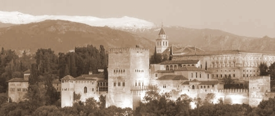
アルハンブラを思い出す時、浮かんでくる風景がある 。 1 1 月も終わりだったか、ネバダ山脈の連なりのてっぺんがところどころに白い冠をかぶり、街のどこも茶色い枯れ色で覆われていた。私はアルハンブラの宮殿のふもとまで行き 、W ・アーヴィングの描いた世界を覗いてみるべきかと迷っていた。だってここはスペインだ。グラナダくんだりまで来て、ライオンの噴水だのなんとかの間、だの、月夜に燦然と輝く中庭――を見ずに通り過ぎるわけには行くまい。でも何ユーロもする入場料など払えるわけがない。私はため息をつきながら、夢の宮殿をいつまでも眺めていた。アルハンブラ物語のなにか美しいシーンを思い出そうとするのだけれど、寒さで凍えてうまいこと思い出せなかった。
どこからかギターの音が聞こえてきた。振り返ると、いつからかひとりの青年が石畳に腰かけギターを奏でていた。品のいいタートルネックのセーターを着ていて、ダーク系の色が、彼の放つ雰囲気と、その曲の感じによく合っていた。ネバダ山脈とアルハンブラ宮殿をバッグに、そのままポストカードにでもなりそうな風景だった。曲はどこかで聞いたような気がした。しばらくメロディーに耳を傾けていた私は、それでもタイトルが思い浮かばず、曲が終わったところで思い切って声をかけた。 「 Englishman in New Yor k だよ 、 STIN G の」。そういうと今度は歌付きで、もう一度私のために演奏してくれた。声のトーンは、スティングによく似た、ちょっと高めのハスキーボイスだ。異郷の地で聞く声も歌詞も、一句一句が刃物みたいに、飢えた心に鋭く刺さった。
「珈琲は飲まない、紅茶にしてくれ トーストは片側だけ焼くのがいい
訛りがあるから分かるだろう 僕はニューヨークの英国人」
「５番街を歩いても いつもステッキを持っている」
「僕は異邦人 合法的な異邦人 Englishman in NY 」
続く２番の歌詞で「誰がなんと言おうと、自分らしくあれ」とうたうあたり、若い心にそれなりにすとんと落ちた。日本語で、この部分だけ誰かに言われたらそっぽを向くだろう。文章で読んだらなおのこと、単なる説教にしか受け取れなかったかもしれない。で も STIN G のメロディーにのれば、当時二十代も半ばを過ぎ、いろんなことが手遅れになり始めていた私にとって、この曲の根底に流れる「途方もない悲しみ 」 ― ― それは、悲しむことすら喪ってしまったものの悲し み ― ― が、波のようにシンクロしてきた。どうしようもないぐらいだった。異郷の地で、同じはずの英語を話しながらも、それでもやっぱり「異邦人」でしかない彼の孤独が、手に取るように 見えた 。寒さといっしょくたになって、背中を丸めてじっと抱え込んできた私の中の何かが、その 時 STIN G の、いや、ギターを弾く名も知らぬ彼の歌声にのって冬のネバダの山並み彼方へと溶け出し、流れていった。音楽には不思議な作用がある。人生を積極的に仕掛けるためのファイトを駆り立てる音楽もあれば、中には黙って寄り添うだけで、なにがしかの肯定をもたらしてくれる、そんな音楽もある。
印象的だと感じたはずの、その肝心な部分の歌詞を自分が長いこと間違えたまま覚えていた、という衝撃的な事実に気づいたのは、つい最近のことだった。
「 Beyourself no matter what thay sa y 」の「 誰が 何と言おうと」 の The y を、今までずっと 「 Beyourself no matter what you sa y」 yo u 「 君が 何と言おうと」と勘違いしていたのだ。風呂場で、ジムの更衣室で、バスを待ちながら 、 etc . 事あるごとにそう口ずさんでいた。先日、たまたま店で流れた曲と一緒に口に出した時「あれ 、 yo u じゃなく て the y って言ってないか？？」と自ら気づいてしまった。ちゃんとゼイ の t h の発音が聞こえるし、そもそ も yo u なら「ワッチュー」みたいに繋がって一語に聞こえるはずでは・・・。試しに一人で歌ってみたら、ちゃんと「ビーヨォーセルフ・ノーマター・ワッチューセ～イ」と勝手に繋げて、自分が言いやすいように歌っている。なんてことだ。これまで何年も私の頭にインプットされ 、 yo u と疑いもせずに来たのはどうしてだろう。 「 No matter what you wan t 」（あなたが何を欲しがっても）とい う No matter wha t の受験生的構文が、頭にこびりついていたのだろうか。
日本語で普通に考えたって 、 yo u が不適切なのは一目瞭然じゃないか。二人 称 yo u だと特定の誰か、つまり「あなた」や「君」が分かってくんなきゃ僕は僕で勝手にやるからいいもんね、というただのひねくれ少年になってしまう。それじゃ全然違うハナシになる。ここは不特定多数の「周囲」、つまり歌い手の「僕」を孤立させ、孤独を感じせしめている 「彼ら」 に対して「誰が、何と言おうとも」という、自らの自尊心をかけた、力強い、孤高の生き方宣言なのだから。
ああ、――「彼ら」、だったのか――。私はそのとき、頭を打たれたみたいに、思った。
堀口大学の描いた 「彼ら」 も 、 STIN G における 「 The y 」 も、国も時代も、話す言葉も違うけれど、それは私の中で、一直線に結びついた。「果てあることの悲しみ」を知る人間として、繋がりあうことのできる、数少ない者同士。
このふたりを前にして、私は悲しみに関して発する言葉を持てない。一つだけ分かるのは、悲しみの果てを知る人間だけが、ほんとうの「よろこび」を伝えられるということ。世の中は安直な希望や癒しに満ちている。それでも、深い孤独の井戸の底に、覚悟を持ってたった一人で降りていった個人だけが発することのできる、言葉、物語、そして音楽の力を、私は信じている。
18：Bon courage, Hiphop en France! 頑張れフランスのヒップホップ
パックス（復活祭）の項で、ダンスにはまっているという話を書いた 。 Modan Jaz zと Hipho p である。その昔神戸で踊り、さらに は N Y のダンススタジオの天下 、 BD C（ Brordway Dance Center ) にも足を踏み入れた。何とかなるだろうと思っていた。しかしここは欧州、おフランス。同 じ Danc e でも国が違えば、クラスの様子も違う 。 3 0 半ばも過ぎて、しかも英語でなく仏語で挑む未踏峰。モダン、クラシック、コンテンポラリーまでなら「昔取った杵柄」で貯金はある。まさかこの私がヒップホップ？人生とはほんとうに、いつ、何があるか分からない。
「ヒップホップとはどのようなダンスか」「なんでフランスのヒップホップか」理解が低かったこともある。私の「ヒップホップ」の認識なぞ、こっぱみじんに打ち砕かれた。背景となるフランスの現代音楽事情も含め『ヒップホップ』という語そのものを、根底から考え直す機会を与えられた。
ジャズダンスの経験と偉そうに言ってみたところで、基本的な身体機能（柔軟やターンといった技術含め）を持っているという程度の話。商業的プロではないのだから、全くゼロから始めるより少しはマシだろうというレベルだ。加えて、ヒップポップには独特の動きとステップが存在する。「ランニングマン」や、アップ・ダウン（上や下でカウント、重心をとる）はやったことはあっても、本物のヒップホップダンサーの動きは、まるで違う。今さらだがヒップホップは、ひとつのステップ、振りや音楽ジャンルを指すものではない。それらを合わせた特定のスタイル、モノの眺め方、服や、喋り方の選択の仕方、要は生き様までを言うのだとつくづく思う。あのダボダボズボンについては諸説ある。子が多く貧しい家庭では頻繁に服を買い与えられず、成長してもしばらく着られるように大きめサイズを与えるという説。他には刑務所で脱走や格闘を避けるため、とっさに走れないような必要以上に大きい服が支給されることから、いわゆる「ムショ帰り」を象徴するという説。
音楽は当然英語曲が圧倒的。マイケル＆ジャネットジャクソン、マドンナ、ビヨンセ、ブリトニー・スピアーズといった基本のダンスどころ ＋R＆B 系。加えて近年のヒット曲、例えばニッキー・ミナージ の stairship s など。よくも悪くも、世界の音楽シーンを決めていくの は N Y という現実があり、ジャズにしろヒップホップにしろ、ダンスもその潮流に乗る。
アメリカ発のヒップホップ音楽、及びダンスがフランスで広まり、世界第二のヒップホップ大国となっていったのか？いや、ヒップホップのルーツはアフリカ文化、例えばジャマイカのダンスホールレゲエのから発したアフリカ系アメリカ音楽だけではない。ちゃんと西アフリカを中心とした仏語圏音楽があった。その後アメリ カ NY , 西海岸を中心に黒人の団結、誇りを象徴する大きな流れがあって 、 7 0 年代からのいわゆるオールドスクール、ミドルスクール（世界的にはゴールデン・エイジという）、ニュースクールと呼ばれる年代別スタイルが生まれてくる。
仏語圏のヒップホップが広まったのはちょうどミドル期に当たる 、 8 0 年代半ばあたりだ。ここから先は英語圏の情報をもとに調べた。
198 4 年にフランスで「ヒップホップ」というテレビの音楽番組が大ヒットしたのがきっかけらしい。パリ郊外やマルセイユのいわゆる「スラム」と呼ばれる場所には、昔から多くのチュニジア、アルジェリア、モロッコなど北アフリカ移民が住んでおり、そこの若者達を中心に番組は熱狂的に支持され、ヒップホップは広まった。考えてもごらんなせえ 。 HL M と呼ばれるそれはそれは廃墟のごとき、暗く、悲惨な集合住宅で彼らは育った。まともな教育も受けられず、貧困にあえぎながら、両親とも職はない。夢を見ようにも四方にそびえ立つのは絶望だけ、塀の中で青春を送るも等しい。幼い兄弟たちと球蹴りをしながら、ジダンを思い、あるいはスニーカーさえあれば、道のどこかで「ストリートダンス」を踊って鬱憤を晴らすこともできる――フランスのヒップホップはそういう土壌で広まってきた。だから、ちゃらちゃらした見てくれだけの、ハンパなものなんて、ひとつもない。全部が自分の全体重をかけた本気の闘いである。許せないものは許せねえと徹底的に、批判する。相手が国であろうと、大統領だろうと、がつんがつんに打ちのめす。（そしてもちろん放送停止になる）。そうしないことには、彼らの声は届かないからだ。欲しいものは奪い取らねば、こうありたいと強く訴え続けていかなければ、育った「地獄」から一歩も出られないと身にしみて分かっているからだ。
9 0 年代初め、『フレンチヒップ御三家』 が登場する 。 NT M （シュプレー ム NT M ともいう。パリ郊外、サン・ドニ で 198 9 年結成） IA M （マルセイユ で 198 9 年結成 。 Invasion Arrivee de Mar s ：火星からの侵略？の意味 で Mar s はマルセイユの暗喩として歌詞の中で繰り返し使われる ） M C ソラー （両親がチャド人、本人はダカールで生まれフランス郊外・ヴァル・ド・マルヌ県に移住 、 199 0 年から音楽活動）
このうち 、 M C ソラーはフランスの諺をもじったラップアルバムがプラチナディスクとなったりして比較的普通に聞ける曲だけれど 、 NT Mと IA M は社会体制を批判し、政治色が強く、言うところの「激ヤバ」音楽にカテゴリーされる。例え ば NT M は国家組織に対する強い敵対心があり、人種差別や階級差別を容赦なく言及する 。 9 3 年には警察の汚職をやり玉にして国家当局から訴えられた。最終的には勝訴したものの、ラジオ局全て、彼らの曲をボイコットした 。2 年後、それでも懲りずにコンサート中に再び警察を批判し、その上警察に対する暴力まで支持する発言をしたものだから、今度ばかりは大掛かりな法廷闘争に発展し、懲 役2 カ月、罰金５万フラン（１００万円位）の有罪判決。
このあたりからフレンチヒップホップが「社会問題」化される 。 IA M は当初、アラブ、イスラムといった多文化アイデンティティーのギャップをテーマに歌っていたが、ある事件をきっかけに、移民排斥で知られる極右政党・国民戦線 （ F N ）への批判を強めて行く。下地はこうして作られていった 。 200 0 年代、サルコジがまだ大統領になる前、フレンチヒップホップ歌手のことを「国を侮辱するチンピラども」と言ったとか言わないとかで大問題に 。 200 5 年、ついぞパリ北東部で大暴動が発生した。投石、放火 が3 週間続きこの時も犯人つるしあげの際にサルコジは「社会のクズ」呼ばわり。さらに政界ではヒップホップ追放運動まで起こる。あんなクソみたいなもん聞いてるから、暴動が起きるんだ、とか。確かに歌の内容は、日本じゃ通常考えられない過激さだが「自由の国」はどこへやら。
そんなこともあってか、近年ではヒップホップ大国の地位はドイツに奪われてしまったという声がある。そもそもドイツはテクノ王国。鬱憤だの社会への欲求不満だのと言った子供じみた出発点ではなく、スマートで、機械的で、洗練された大人ヒップホップの大物が続々登場し世界の注目 株 ― ― というのがこんにちの流れのようである。
でも、世の中がどんなに変わろうとも、力強い「声」を求める人間は必ず居る。何も国家権力に立ち向かったり、攻撃的でなければならないというものでもない。自分自身の心に、ひとつ信じられるリズムを持って、強く、曲がらずに生きること。人は残念ながら平等には生まれない、でもそのための「よすが」みたいなものを抱くことは誰だって自由だ――フランスがそういう国だと信じたい。
201 1 年ヒットしたフランス映画に 「 Intouchabl e 」がある。身体が不自由な大富豪と、ひょんなことからその介護人となった最貧困層の移民である黒人の若者との交流を描いたコメディ。日本では邦題：『最強のふたり』（なんで？）として公開され、『アメリ』を越えて当時日本のフランス語映画歴代興行１位になった。私も二回見たが「へえ、色々あったフランスでは今、こうした平和的、融和的な万人受けするハートウォーミングな傾向が好まれるのか（つまんねえな）」と思っただけだ。主人公たちが最後、それぞれの現実へ戻り、安っぽい理想で終わらなかった点だけ良かったけれど。原題の 「 Intouchabl e 」（アンタッチャブル）の意味はそこにあったはずで、私なら確実にそのまま残したところだが、この邦題では、真逆になってしまった。
ModanJaz z で何度か出た女性の先生のクラスでは、アップの時の音楽にこの映画の冒頭、駆けるように流れ た Earth,and Wind Fir e の 『 Septembe r 』を使っている。これを声に出して「好きだ」というと、まあなんて安直な！お手軽な！分かりやす過ぎ！とそっぽを向かれそうで、書くのはかなり勇気が要る。まあ許して下さい。逆の論法で言うと、パ～リ～ラ～、は、かなり分かりやすい理由でめげてしまった時の単純な自分再生ツールとして使用可能。つまり「なんだってそんな単純なことで！」というばかばかしい程の理由で落ち込んだり、ダメになりそうな時、負けずに自分を鼓舞するインスタントの呪文みたいなものだ。大して意味は持たせない。そういう余白的要素のひとつふたつあった方が、少しは楽に生きられるし、本気を出すべき時に本気になれる。これも最近、学んできたことの一つ。
そうは言っても、頑張ってね、フランスのヒップホップ。とんがった時代がありました、でお鉢を他にあっさり回してしまったんじゃ、つまらない。とんがるのは、人生のある時期にしかできない、特権かもしれないから。
例え世界がなんと言おうと、形ばかりの友好に埋もれようと 。
1 9： Parce qu'on vient de loi n 遠くから来たものだから
地下鉄の壁に 『 201 4／ Rwand a 』という写真展のポスターが貼られていた。今年 は 199 4 年のルワンダ大虐殺の年か ら 2 0 年。多数派フツ族主導で 約 8 0 万人のツチ族が犠牲となったとされる事件だ。
4 月上旬、ルワンダ大統領が「大虐殺へのフランスの関与」を非難したことを受けてフランスは、ルワンダ政府主催の追悼式典への出席をボイコットした。駐仏大使が出席したが事実上の「格下げ」にルワンダは猛反発。フランスは大虐殺当時、フツ民族主義政権と同盟関係にあった。ルワンダ側は今も、フランスは大虐殺に加担し、共犯者だったと関与を認めるよう主張 、 2 0 年目の境に、今フランスとルワンダの外交関係は大きなきしみをたてているみたいだ。
新聞の場合、 「 2 0 年経ち、アフリカ が" 声なき 声" を上げ始めた」とか「人道とは何か」といった見出しでリード（文章の導入部。フランスでは『シャポー：帽子』と呼ぶので最初笑ってしまった）の数行が作られ、しまいにゃ「国際社会は、これを機に途上国と先進国における説明責任を考えねばならない」とか当たり障りのない、何を言っているのか実のところ、よく分からない文句で終わる。そういうのは、私には書けない。というか、そういうのは、書くべき人間がちゃんといて、少なくとも私は自分がその種の人間でないことを知っている。国際政治学者や識者もまた、それが仕事であり、あらゆるメディアに登場しているから、彼らに任せておけばいい。
小説を志したころ「人を殺さずに読者を泣かせればその小説は上出来だよ」と言われた。つまり簡単に登場人物が死ぬようなストーリーであれば、そりゃあ手っ取り早く感動もするだろうし、お涙ちょうだいモノでしかないというわけだ。誰も死なせず、それでも読者を感動させられたらそれは筆が確かな証拠だ、と。物語それ自体の骨格、文章スキルがなければ成功しえない。そのほうが遥かに難しいということだ。習作の段階で身にしみて理解することになる。新聞も同じで、弱者の発言は全て「声なき声」になり、甲子園で負けたピッチャーは、どんなに胸を張ってインタビューに答えても「～と肩を落とした」ことになってしまう。そういう「紋切り型」の文章は、なるべく、というか、プロなら絶対に使ってはならないはずなのに、どういうわけか自分が使わなくてもデスクがそう直してくる。（笑）
新聞社の話はしまいとして、自分の作品に限って言えば、ま あ1 か所ぐらいいっか、じゃなく、使ったら負けという真剣さで向き合わないとおしまいだと思っている。自分がわけの分からない言葉を使うなんて考えられない。世の中を分かったふりして斬るのは、私の仕事じゃない。もう一度言う。人にはそれぞれ、与えられた役割がある。
話はルワンダに戻る。
Corneill e （コルネイユ）という、モントリオール拠点の歌手がいる 。 197 7年3 月、両親がドイツ研修に来ていた時に生まれたルワンダ人だ 。 1 6 歳でルワンダテレビの歌番組コンクールから歌手デビューするも、翌年内戦勃発。コルネイユだけドイツに逃れるが、残った両親、家族ともルワンダ虐殺で殺され一人きりに 。 2 0 歳の時カナダ、モントリオールの大学へ渡り、再び音楽活動開始 。 200 3 年のアルバム 『 Parce qu'on vient de loi n 』、続 く 200 5 年の 『 Marchands des reve s 』（夢の商人：日本では『夢商人／あきんど』として発売された）が、カナダだけでなくフランスで大ヒット。仏語圏アーティストとして、その経歴もさることながらあっという間にスターに駆けあがった。
歌は確かに優しく、甘く、高めの声を出す時は「フランス語版・平井堅」みたいな感じだ。前回書いた過激なフレンチヒップホップとは対象的。歌詞も「僕ら呪われてなんかいないよ きっと僕らの日がくる 子供たち、僕の言うこと信じてよ、きっと真実が絵空事じゃなくなる日が」という、どこまでも希望の光に溢れたもので、攻撃性のかけらも見当たらない。暗闇が彼を支配した過去があっても、産み出される音楽は、それとは反対の平和な海の凪のような心地よさだ。
日本に居た時から、私はコルネイユについて知っていた。同い年だし、何かにつけて「ルワンダ大虐殺から生き残った」「不幸を乗り越えた」コルネイユ君、としてマスコミにとっては「おいしい素材」、日本のレーベルが大売り出しだったからだ。英語でも歌っており、今や世界で活躍している。カナダ赤十字や戦争で迫害された子供たちのための活動も、いちいちヒューマニックに取り上げられる。戦争で家族全てを喪った彼は 、 200 6 年結婚し自身の家族を手に入れた。
日本での報道ぶりはあまりに「ルワンダ」を強調し過ぎて少々眉をひそめたくなったのも正直なところだ。その結果、「現在の彼」が、どこで、どんな音楽をつくっているのか、どういったメッセージ性を持っているのか、が、音楽を聴くまで分からなかった 。 Parce qu'on vient de loi n ：遠くから来たものだか ら ― ― をはじめて聞いた時、私は真剣に考えた。私を含めほとんどの人は「少年期に大虐殺で家族みんな殺され、苦学の末カナダで歌手になったルワンダ人」の歌と知って、聞いている。その情報、先入観ナシで聞いた場合、どうだろう。私なら、ことによると「どっか田舎から出てきた若者が都会でがんばろーぜって言ってるぅ～」ナイーブな歌にしか思えなかったかもしれない。純粋に音楽を聞いて、その声で、メロディーで、歌詞で、心を動かされるかどうか？最も重要なことだ。だから日本で騒がれていた時、ひねくれものの私は「ああどうか彼が『ルワンダ、ルワンダ』と騒がれることなく、創ったその曲できちんと評価され、音楽の平野を歩いてゆけますように」と願った。過去や思い出を、業界に都合よく利用されて、未来までふみにじられませんように。案の定、あれだけ騒いだ日本でのブームは、あっという間に去っていた。
今年、コルネイユはまた世界の色んなところで、色んな意味で、引き合いに出されることだろう。去年は、フランスでアルバムを出した。彼自身が心穏やかに音楽活動を発展させ、充実した人生を送っていればいいな、と思う。
追 記：ファーストアルバム 、 Parce qu'on vient de loi n の中では、私はタイトル曲より、ダンサブルな 『 Ensembl e 』が気にいっている。
2 0： 教会からこちらへ延びるシブイ道
私が昨年から住んでいるのは、パリの南にある国際学生寮で 、 RE R ／Ｂ線の停車駅でもある 。 1 4 区に位置する広大な敷地で、東京ドームが丸々――おっと、これは日本でしか通用しないものさしだった――とにかく広すぎて 、 4 7 だかの世界各国の名を冠した寮と、図書館、シアター、レストラン、カフェ、プールに競技場まである。パリの中にあって、全く隔離された空間だ。はじめの一か月滞在した館から、秋からの新年度、プラッサージュ（交換）で他館へ行ってくれる候補者の打診があり、喜んで行った先が、さらにトラム（路面電車）でひと駅離れた敷地の果てだった。むしろ正面玄関 の RE R 線の大きな駅より、パリ市内どこへ出るにもメトロ４番線の通るポルト・ド・オルレアンの駅のほうが近い。特にスーパーや買い物でこちらを拠点にするようになると、もう同じ寮内に住んでいるとは言えない程、がらりと生活圏が変わってしまった。
オルレアンの駅から少し南下したあたり、チェーン系のホテルが立ち並んでいる。豪華ツアーでなく、できれば安く旅費を上げたいといった、比較的旅慣れた感じの旅行者たちが、大きなスーツケースを転がして歩いている姿によく出くわす。トラムの駅は常にビールの空き缶が転がっていて、昼間から怪しげな目つきと言動の老若男女のたまり場である。ここを拠点にトラムで東西移動する東欧系の物乞い親子が多数。言っておくが決して治安のいい場所ではない 。 RE R の駅がそれなりに立派な面構えで、学生に交じって、時にはスーツを着た教授や知的階級の人々も乗り降りし、多少アカデミックな雰囲気があったのに比べると、たったひと駅 で Give me passpor t ！ と叫びたいほど、国境をまたいだ感がある。
メトロ４番線はオルレアンの次のモンルージュという駅が最南端、終点である。実質的にはこのオルレアンで殆どの人が下車し、あとはバスやらトラムに乗り換えたりしている。パリ中心部へ向け北上する側は、サンジェルマン・デプレ、サン・ミッシェルからシテ島を貫き、多くの路線が交差する心臓のシャトレ、東駅、北駅を通り、のみの市で知られるクリニャンクールまで続く。
オルレアンの駅から大通りに立って北をまっすぐ見ると、大きな教会が正面に構えているのが見える。ここが一つ目の駅、アレジア。そこから北へ向かって、右と左にＹの字に道が分かれている。私が利用するのは４番線沿いの右側の道だ。ここから次のダンフェール・ロシュローの駅あたりまでは道の両側に店が並ぶ買い物通りでもある。大手チェーン系スーパー、映画館、肉、魚、チーズ、パン屋、スシ屋、花屋、チョコレート屋さん、今はやり の bi o 食品の店など。大きくも、特に洗練されているわけでもないそれぞれの店だけれど（失礼）、ひと通りそろっている。オペラ座周辺や、シャンゼリゼ通りといった、明らかに観光客向けの高級店でなく、庶民の生活感があってほっとする。ダンフェール・ロシュローさんというのは普仏戦争の時の英雄で 、 187 9 年、もとは城壁門跡の広場を彼の名にちなんで名づけ、その際、駅も一緒に改名したらしい。時々ものすごい人々が長蛇の列をなしていて、きっと「何か有名な裁判があるんだわ」と、傍聴券をもとめる人々か、あるいは「超有名アーティストのチケットの発売日なのかも」と思っていた。それでも、通るたび朝から晩まで毎回なので、どうして駅の目の前なんだ、と謎は解決されなかった。やっと分かった。「カタコンブ」と呼ばれる地下納骨堂があり 、 60 0 万人のガイコツが納められている 。 1 8 世紀から公開されている由緒正しき観光名所とのこと。「そんなの、みんな知ってる常識でしょ」と、私に教えてくれた人はあきれたが、ほんとうに？知らないの、私だけ？だいたい、なんでパリに来て、そんなもんみなくちゃいけない？生きてるうちは、遠慮しておく。
新しい館に派遣が決まった少し後で、パリのある会合で、立場のエライ人と話す機会があった。その人はほんとうにこの国と街を愛していて、少しでもよそからやってきた若い人たちに、よい思い出をつくって帰ってもらいたいと心から願っている、そういうことが言葉の隅々から感じられる、年配のジェントルマンだった。フランスでこんな優しい面立ちのひとが居るのだなあ、と思いつつ、何の話のきっかけだったか、そう言えば、私は来月から少しオルレアン寄りになるのです、と言った。ムッシューは「ああ、すぐ先にアレジアの教会が見えるでしょう。教会からこちら側へのびるシブ～イ通り、いいですよねえ」。シブ～イ、の所だけ、目がしらのあたりにくしゅくしゅっと皺を寄せて、いい感じに歳をとったポール・ニューマンが昔を懐かしむみたいに言った。そこで突如、講演が始まったか何かで、ムッシューとの会話は断ち切れになってしまった。私には、２つの疑問が残された。
１つには「こちら側」が右なのか左なのか。彼は単に 「こちら 」という指示代名詞を使ったのだ。２つ目は 、 Astringen t な通りという、その「 シブさ 」具合の内容である。パチンコ店とフーゾクがひしめき、週末には・・・というのも一つだし、単に古臭かったり、故郷を思わせたり、飲み屋が連なっているというのもシブさの見識のうちである。ノスタルジーを指すこともある。彼のいう「シブさ」が、具体的にいかなる領域を指すのか確かめたいと思いつつ、日々の忙しさにまぎれ、すっかり忘れきっていた。
教会から、間違いなく「右」へ伸びるほうの道が、先にも述べた一応の「表通り」である。では左が裏かといえば、決してそんなことはなく、モンパルナスを通過し、サン・ラザールという大きな駅に向かうバスが走る、同じぐらい交通量の多い大通りだ。右に比べ、少し華やかさに欠けるけれど、こちらも商店が並び、内科医、私立探偵派遣会社、ランドリー、ピザ宅配と豊富にそろっている。さあ困った。通りの概観は現場でつかめたが、私はムッシューの人となりをそれほど深く知っているわけではない。どんな境遇で育ち、どんな仕事を重ねてきたか、家族構成、住まいはどこか、彼の基本情報は殆ど持ち合わせていない。あの温厚なムッシューをして「シブい」と言わせしめたのは、右か左か、一体どちらの道か。次に会った時、しらばっくれて「ああ、そういえばアレジアの、例の教会近くになんとかって店ありましたよね、ほら映画館の隣の・・・」と切り出し、答えを得てみるかと企んでいた。ところがしばらくして、その機会はかなりの確率で失われたことをしった。ムッシューは、あのすぐ後、どこか外国の大学で教鞭をとるため発った、パリには数年戻らないという。
「シブい道」のことはそれきりになっていた。ところが先日、突 然 6 2 番のバスに飛び乗る羽目になり、それがアレジアの教会の、右でもなく左でもなく、ちょうどＹの字の中央を東西横一文字に斬る形で伸びる、その名も「アレジア通り」を通過していったのだ。バスの中から「おお、これはもしかして・・・」と息をのんだ。道の両側には、セール時期でもないのに 「 2 5 ％オフ！！」「最終価格」と書かれたメーカー服や（高級ブランドでないが）カバン、靴、革製品等の雑貨系の店など「安売り店」がひしめいている。いわゆる「セレクトショップ」的な洋服店が数としては多そうだ。子供服、ブラジャー専門店まである。通りには観光客なんか一人も歩いていなさそうである。道には必要以上の「キラキラ」感はない。歩いているのは「パリジェンヌ」などでは決してない。皆、つい５分前まで家で寝ていたが、といっただるーいジャージ服を着た「近所系おじさん、おばさん」である。昼のパンがないからちょっと買ってくる、ひげ剃ってないけど隣だからいいよな。この感じ、中央線各駅停車の、例えば高円寺だとか西荻窪の駅前から続く、数分歩いた辺りの、商店街の雰囲気に似ている・・・次の角で、ラーメン屋がひょっこりでてきても、なんの違和感もない。
地図も持たずに乗っていた私は、バス内の停留所表示をみながら現在地を隣の女性に聞いた。「アレジア通り」。食い入るように窓の外を眺め続けていた私がおかしかったのか、私より少し上ぐらいの、その女性は続けて言った。「ストックでしょう。何探してるの？」「ストック？」女性はああ、という顔をして、流暢な英語で「アウトレットのことよ。去年モノの」と言った。
調べてみると、パ リ 1 4 区のアレジア通り （ Alesi a ）は古くから、シーズン落ちのブランド服などを扱うストック街（アウトレット街）として知られるということだった。観光客向けではない。地元っ子が利用する。個人的イメージとしては、昼間、仲よしのおばさん二人が小さなリュックを背負って、サンドイッチ（パリ風のバゲットにいろいろはさんでいるやつだ）片手に、「さっきのとこにしようよ」「でもあっちもみてからにしない？」と、中学生ばりの会話を交わしている印象だ。仲良くショーウィンドーを楽しむ「オトナの放課後」である。都会の喧騒はない。店に入れば、なじみの店員と長話をして、気がすむまで試着する。帰りにはスーパーで、今夜の食材をひと袋分買って、夫の戻るまでに帰ってくる。そんな微笑ましき平日の午後。
ムッシューの言った「教会からこちらへのびるシブイ道」は、この通りのことだったのか。確かめることはできないが。パリの中の、ちいさな杉並区。
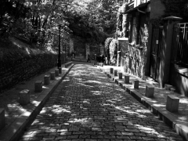
2 1： Direc t Mati n ディレクト・マタン
朝、パリで地下鉄の駅に到着する。人々は判で押されたみたいに、設置されているカゴの中に山積みにされてい る A 4 判ぐらいの紙冊子を取ってから改札を通っていく。時間帯や曜日によっては、地上で若い女性が配っていることもある。電車内では皆「通勤の友」と言わんばかりに、それを読みふけっている。赤い帯に白字で 「 Direc t Mati n 」と印刷された題字がパッと眼に入る、パリで最も読まれているとされる日刊紙、しかも無料の新聞である。フリーペーパーというやつだ。
たまたま私の利用する最寄り駅の、たまたま私が使う改札口の構内に、ディレクト・マタンが置いてあったというだけのこと。他の路線や駅では別の２紙、緑色が目印の 「 20minuit e 」（ヴァン・ミニュイット ／ 2 0 分という意味」、他方はブルーをメインカラーとする 「 Metor o （メトロ）」が手に入る。車内で人々は赤・緑・青 、3 紙いずれかを手にしている。試しに一日で３紙比較してみたが、正直それほど大きな変わりはない。ページ数にし て 1 5 枚前後。本日の重大ニュースはこれとこれ、という一面、総合面にあたるページから始まって、ポイント解説が３ページ目あたりに加わると、あとはシステマティックにパリ、地方、世界、スポーツ、このあたりで求人広告をはさみ、後半は健康（生活）、テレビ、シネマ、ラストは天気予報で締めくくられる。３紙とも全編カラー刷りで、写真も豊富。記事そのものは短く、要点を押さえて簡潔そのもの。記者の意見がだらだら書かれていたり、読者投稿、人生相談なんてコーナーもない。まさし く direc t （ディレクト＝ダイレクト）であり、ぴった り 2 0 分もあれば、その日押さえるべき事項を網羅できる。サイズもちょうどいい。今や「ル・フィガロ」「ル・モンド」を広げている人はいない。
旧帝王たちはフリーペーパーに押しやられ、どこへ行ったのか？キヨスクには売られている。もちろん毎日、新しい。でも誰かが買ったり、カフェで読んだりしている姿を見たことがない。ネット上ではサイトが健在。媒体がどう変化しようと、ジャーナリストや書き手という職業そのものの意義が消滅したわけではないからだ。ただもう誰も、お金を払って紙の新聞を買ったりしないのかもしれない。あ と 10 0 年後ぐらいには（もっと早いかも）学校の歴史の授業で、先生が昔は印刷という技術があって、新聞も紙というものに刷って、一軒一軒おうちに届けたり、あるいは駅の売店やコンビニに買いに行ったりしていたのだ、と教える日が来るのかも知れない。生徒たちに「昔の人ってどうしてそんなに非効率だったんですか」「紙の無駄遣いして何とも思わなかったのですか？」「毎日たまった紙はどうしていたんですか？」とか突っ込まれちゃうんだろうな。
フリ ー3 紙だって 、 H P にはかなり力を入れている。別になくても困らないが、駅に行かなかった日などはネットでチェックすればいい。１紙だけ手に入って他が気になってしまうような場合も、この手段が使える。（まあそこまでの人はあまりいないだろうけれど）。それぞれのサイトから、各紙「生い立ち」経緯を比較したところ、意外な共通点があった。
20minuit e を始めたのは、もとはノルウェーの出版社だ 。 199 9 年にスイスで、その 後 200 1 年にスペイン、翌年フランスで発刊、の順である。純国産ではなく、さらに国際紙だったのか。すると「フリーペーパーはＥＵ全体の大きな流れかも」と予感がよぎる。半分あたり、半分外れ。ＥＵのみならず、北・南アメリカ、アジア含め、世界をターゲットにしたの が Metr o だ。スウェーデン の Metro Internationa l という会社 が 199 5 年「世界最大のグローバルな日刊紙」として発刊、フランスで は 200 2 年、まずパリとマルセイユで開始。以 降 2 4 カ国 、 15 0 以上の都 市 1 8 言語で配布されている。これら２紙が共に北欧発だったのは理由があるのか。
無料でニュースが読まれ、人々に支持されているとなればそれまで頑張って来た大手新聞にとって、死活問題だ。対抗馬として彼らが生き残りをかけて登場させたの が 200 7 年 の Direct Mati n だった。背景の理解に手間取ってしまったのだが、要は 「 BOLLOR E 」（ボロレ）という国際グループ会社と、フィガロが共同出資 （ 7 0 ％ ： 3 0 ％）の形で開始させたらしい。最初はマタン（朝刊）に加えてソワール（夕刊）もあった。が、採算が取れ ず 201 0 年に夕刊は打ち切りとなった 。 201 2 年以降は全紙面 を PD F で読むことができる。
無料に加え、アーカイブ性まで完璧、記事や報道写真はディレクト・マタン・プリュスという専属ジャーナリストたちによるものだから、一般市民にとってはとくに文句のつけようもない手軽な情報源となる。もうひとつ、調べている途中で面白いサイトを発見した。フランスには「発行部数を証明するお役所」その名 も OJ D という機関があり、月ごと、都市別など、詳細な公式部数を発表している。日本の新聞だと「公称 ： 100 0 万 ／ 80 0 万 ／ 30 0 万・・・部」など各社、自己申告だからえらい違いだ。（ちなみ に OJ D のサイトに英語バージョンはない。だから苦労して仏語を読み解くしかない）地方ごとに細かく分けられているが、３紙とも、平均し て1日 7 0 万部になる計算だ。これはかなりすごいことなのではないか。読者層として は 18~3 4 歳、これまで日刊紙を購読していなかった若者層、今後も日刊紙が新規開拓の見込めない層をすっぽり飲み込んでいることになる。地下鉄の中で見る限りは、私より年上の層だって、かなり手にしているように見受けられる。
フランス語で理解しようと思ったら、とて も 2 0 分じゃ足りない 。1 時間かけて辞書を引き読んでも、未消化個所は残る。だから白状すると読むというより「眺める」に近い。３紙とも共通するのは、それぞれにデザインと写真にこだわりがあること。日本でよく見るような 、" 駆けだし１年生が研修テキスト通りに撮りました、どうですか新聞ってこんなかんじ で" 的な写真 は1 枚もない。センスがいい。文章をよまなくても、載せられた写真とおおよそのタイトル、記事のボリュームや配置などからひと通り最後まで「眺める」だけで流れを把握できる。ある意味ヴィジュアル世代だな、と思う。
どうも私は記事より、広告をじっくり読んでいるみたいだ。今フランスでどんな求人が、どんな文句で出されるのか。あとはレストランや商店の割引、航空会社や、車や、携帯電話の広告。連休前などは、いつもと違うスペシャルな感じが漂い、ページが増えていることもある。フランスで生活していないと、実感しにくい部分だ。まあ、あまり実用性はない。
以前ダンスで使った曲 に 200 8 年のマドンナのアルバム （ 1 1 枚目 、 HardCand y ）の「 ４ minuite s 」（フォー・ミニッツ）という曲がある。マドンナと、当時若手シンガー、ダンサーとして名を知られていたジャスティン・ティンバーレイクが絶妙の掛け合い。ミュージック・ビデオもダンサブルで当 時 ipo d に入れて覚えるまで見た。人体がＣＧで人体解剖され、その断面図がリアルにキスしたり動いたりするシーンは、どうしても苦手だが。
『時間を無駄にするなよな 世界は待っている／世界を守るため、僕たち４分しかない
思ったなら それは本物／欲しいのなら それはもう手に入れている 』
イン・シンク時代から最年少にも関わらずキレのいいダンスをみせていたジャスティン。マドンナといい、ビヨンセといい、相手の女性の動きをきれいに見せるのがうまい。しばらく俳優業に専念していたが昨年 （ 201 3 年）久しぶりにアルバムを出し、ダンスも健在。さすがミスター・セクシー。
朝のほんの４分、あなた も direc t に 世界を掴みませんか。
2 2 ：エルニーニョの神様
昨年パリにやってくる際、日本の東京都内から段ボール10箱を送った。いろいろと切羽詰まった事情があって、もう2度と日本には戻らない、容易なことでは帰れない、異国で生きていくんだと覚悟し、きれいさっぱり片付けた。あとには何ひとつ残さなかった。全財産・全ての荷物を引っ提げてやってきてしまったことになる。
企業派遣などで、会社が海外引っ越しにかかる費用を全て出してくれるなら話は早い。荷造りから税関手続き、到着後の設置まで、何から何までやってくれる国際運送会社に頼めばいい。でも目玉が飛び出るようなすさまじい値段だ。とても一般人に払える額ではない。結局、何社も見積もりを取って、いくつかの情報を照らし合わせ、最終的に「郵便局の船便」という最も安い手段をとることにした。段ボールも近所からひとつひとつかき集め、荷造りから用紙の記入まで全部一人でこなした。渡仏準備に当たって、神経もだいぶ張りつめていたのだろう。最後の最後 、1 か月を切った頃、肋骨を疲労骨折し 、1 週間ほど「息をしたら飛び上るほど痛い」という状況だった。荷物 は 1 0 箱全て本。衣類も生活用品も、身につけているものとスーツケースに入るもの以外は、何ひとつ持って来なかった。それ以外は涙を飲んで全部処分した。置いてくることのできる場所がなかった。海外では日本語書籍は手に入らない。仮に届くとしても、時間と費用がとんでもないものになるだろう。自分にとって、命より大事な、自分を育んできた本たちを手放すことは、どうしてもできなかった。
1 0 箱でまとめて送る と1 割引き、という有難いサービスを利用して、それでも７万以上の金額がかかってしまった。ひと 箱 1 5 キロ以上の段ボールを痛みをこらえて真っ青な顔してつくったまではいいが、持ちあげることもできない。最寄りの郵便局まで持って行くなど到底無理で、ああどうしようと頭を抱えたところ、集荷サービスがあることをネットで知った。なんとか発送までこぎ着けた。フランス国内は格別郵送事情が悪く、伝票控えにかかれた誓約事項をみると、日本の港を出るまでは日本側で責任を持つが、出てしまえばあとは知らないよ、ということらしい。インターネット上でも、フランスの郵送事情の悪さについて、さんざん噂が飛び交っていた。何しろこちらは初めてだし、出所が確かでないものばかりで、信用性の判断ができない。個人的な経験には、多かれ少なかれ誇張はある。結論として 「 1 0 箱のうち半分届いたらラッキー」と思うことにした。それも一緒に届くなんてことは、あり得ないらしい。同時に送ったものが、一つは夏に、一つはクリスマスに到着したり、中のものがなくなっていたりするのは日常茶飯事とのこと。かわいい服だの靴だの詰めて送ったところで届いたのは箱だけ、というのもよくある話らしい。
どこまで本当なのか。確かに最短でも２カ月はかかるという船旅だから、輸送の途中で段ボールが壊れたり、中のものが飛び出したりする可能性は充分ある。それでも 何 1 0 万とかかる航空便よりは遥かに安いという理由で自ら船便を選択するわけだから、アクシデントに対する覚悟は、それなりにある。
身銭を削った経験というのは、時として得難い教訓を連れてくる。
いろんなすったもんだがあった挙句、結果的に私はそれ ら 1 0 箱全て、パリで手に入れることに成功した。まあ大変だったといえば大変だった。予想外の大きな出費もしたし、人に関してちょっと信じられないような思いもした。でもまあ全て終わったことだ。
寮の２階（つまり日本式で言えば３階）の部屋まで階段 を 1 0 往復しながら段ボールを運ぶ。腰が抜けそうになるが、肋骨は発送時よりだいぶ回復しているし、気力でさっさと終わらせてしまえ。
部屋で、熱い珈琲を淹れながら自分オツカレ、そしてよく無事に来たね、私の分身たち、と海を渡った本たちに祝杯を捧げた。その時だ。一つの段ボールに大きな液体状のシミがあるのに気づいた。外側からついたものというより、内側からじわじわにじみ出ていると言った感じ。嫌な予感は的中する。中を開けてビックリした。本は全てビニールでパッキングしていて、さらにタオルを敷いていたから何ともなかったのだが、なんとその上に、固形燃料のような小さくまるっこい物体がいっぱいに詰められていて、外のシミはそれをくるんだ銀紙の破けた部分から漏れ出しているものだ。なんだこれは。最初はオイルか、あるいはバターか何かだと思った。匂いを嗅ぎ、手で触り、しまいには歯でかじってみたが固くて歯のほうが負けそうだった。掌にぴたりとおさまってしまう程度の円形状をしており、色は濃い黄色だ。そしてその上に同じ円形の張り紙が張られ、緑の文字が書かれているのだが、英語でもフランス語でもない。見た目が何となく、スペイン語風である 。 queij o 、ケージョ、ケージョ・・・おそらく、これはチーズなんじゃないか 。 d e のあとはおそらく地名かなにかで、つまり「～で作られたチーズ」。固さ、見た目から色々判断して、ぴったり同じものはどうしても分からなかったのだが、似たような形状であれば、羊と山羊の混入で動物性レンネット使用のポルトガルのチーズが、いくつかインターネット上でヒットした。まあ間違いはないだろうと思う。
数えてみると、全部 で 1 0 個近く、銀の紙にくるまれていた。私はそれらを丁寧に取り出し、部屋の窓枠に並べてみた。かじることもできず、なんとか机の端で細かく叩き割って、かけらを舐めてみた。チーズと言われればチーズだし、山羊の油じゃねえかと言われれば確かにポルトガル産「山羊のあぶら」なる商品が存在するのかも知れないと信じてしまうような、そういう味だ。
私はその頃とても孤独で、知り合いもおらず、私のフランス語能力は友人をつくるにはおおよそ不十分なものだった。うなされずに起きる日はなかったし、絶望の谷の底で這いつくばっている日々だった。かろうじて、肋骨の痛みは引いてきたけれど、抱えた痛みのほうはもっと身体に深く突き刺さって、しくしくと悲鳴を上げ続けていた。秋が始まろうというフランスの空気はどこまでも乾燥しきって、純日本産、国産仕様で育った私の皮膚は、どこもかしこもかさかさに白くなっていた。
いったい何が、どういう経緯で、日本を出発した私の段ボールにポルトガルのチーズが混入する羽目になったのか分からない。最初、ケージョという文字の書かれていたラベルを読んで「もしやこれはスペイン語か」と思ったのは、唯一知っているスペイン語 『エルニーニョ現象』のエル・ニーニ ョ El nin~ o みたいな字面が並んでいたからである。結果的にはハズレだったのだけれど。私はこれを熱帯域太平洋海域から発生する異常現象になぞらえて、極めて個人的バージョンのエルニーニョ現象と受け止めることにした。通常、慣例からして予想されたのは、届かないか、届いても何かが紛失していたというマイナスの状況だったはず。それ が 1 0 箱全部そろった上に、何故かチーズまで山盛りに加えられている。これは金もなく、飢えと乾燥肌に苦しむ私へ、エルニーニョの気まぐれな神様が贈ってくれたプレゼントじゃないだろうか。
不審さを感じて処分するのが、フツ―の人のフツ―の思考だと思う。しかし無事こうして手元に届いているからには、薬物混入の疑いもなさそうだし、そもそも発酵食品なのだから、多少腐っていようがたいした変わりはないんじゃないか。これは食糧援助と思って有難く頂くに限る。チーズだから腹もちがよく、触った後の手は、天然の油でてかてかと潤っている。
渡仏以降気がかりで仕方なかったやっかいごとが、やっと片付いた。珈琲一杯じゃなんだし、と私はその夜、初めてひとりでバーへ繰り出した。行ったことのない路地を何本か行きつ戻りつしているうち、けだるい感じの女声が聞こえてくる店につきあたった。なんとも哀愁に満ち満ちて、人生の深みを湛えた、低い響きだった。私はしばらく立ったまま、窓から漏れる歌声に耳を澄ませ、曲が一度終わったところで店の中に入って行った。暗くて、歌い手の顔はよく見えなかった。カウンターに腰かけ、ワイン一杯、辛口の白を、と注文した。深い声に導かれ、これまでの疲れが一気に溶け出てきたような気がした。
帰り際、私は店のマスターに「いいシャンソンを、有難う」と声をかけた。すると「マダム、今、何て言った？シャンソンじゃない、あれはファドだよ」 「ファド？――ってポルトガルの？」 私は思わず声を張り上げた。「それ以外に、マダム、ファドが世界のどこにある？あんたが飲んでたそれも、ヴェルデ（ポルトガルのワイン名産地）の白だよ」
ほんとうに、一日に二度も、こんなことってあるんだろうか？私は夢でも見ているような気持ちで、店を出た。振り返るとメニューの看板に 、 Vinho~~ ( ヴィーニョ：ポルトガル語で「ワイン」。フランス語なら当然 、 vin : 「ヴァン」）と書かれている。
エルニーニョの神様は本当に、どこか知らない所で私たちを見つめていて、気まぐれに、途方もないいたずらを仕掛けてくるのかもしれない。
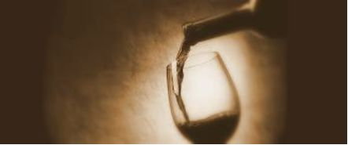
2 3： La Grande Vadrouill e 大進撃！
「 cinema et literatur e 」 「 cinema et l'histoir e 」（映画と文学／映画と歴史）という２時間ずつの講義を、２コマ連続で取っている。一日４時間も大講義室に座り、フランス映画を黙って見ているとはいい身分、と自分でも思うが期末には一応テストもある。一回にじっくり一本を取り上げるとは限らない。各回テーマに即して、２～３本、時代の違うものをダイジェストで紹介したり、同じ監督の別作品と比較したりもする。教授にしては、まだ若い男性の先生で、所々映画を停止し彼の解説を挟む。理解の助けになることもあれば「いいから、早く続きを見せろ」とうずうずすることも多い。そのような内的闘いを繰り返しながら、数々の映画を見てきた。
フランス映画は日本にいる頃からよく見ていた。人間観察のツボがハリウッドものとまるで異なる。２つの欲求が生まれる。１つにフランス映画を体系的に、時代を追って流れを掴んでおきたいということ。でないとヌーヴェルヴァーグだのなんだのつまみ食いしたところで、単にアンニュイ（退屈）なあれか、で終わってしまう。第２にどうせなら字幕じゃなく、言語そのものの味わいを楽しみたい。ともにフランスに行かずとも出来ることで、まだ日本にいたある日、強行を試みた。まずは質より量だ。レンタ ル DV D の仏映画コーナーを片っぱしから制覇し、見た映画はとにかく評論を書いて残すよう努めた。２００本を越える頃には好みの傾向がハッキリしてくる。字幕ナシまでは行かなくても、仏映画の会話や笑いにおける、独特の呼吸みたいなものが飲み込めてくる。（これが大いなる勘違い）
「映画と文学」の授業はいわゆる一般的なフランス映画論＋仏文学的な視点で辿るもので、これだけでもひと通り映画史はなぞることができる。その後、半分程度の生徒が帰ったあとで始まる「映画と歴史」の授業では、ジャンヌ・ダルクから始まって、普仏戦争、共和制、フランス革命、と、要は「フランス史」を映画で年代順に追ってきた。忘れていたが、私は地理歴史科の教員免許を持っていた！それでもフランスにおける史劇分野に関してはノーマークだ。歴史だと「本で読めばいいよ」「あとで調べる」という意識が先行してしまうのかもしれない。それより文学を題材にしたものや、ジャン・リュック・ゴダール、フランソワ・トリュフォー、カンヌ受賞作も押さえておかなきゃいけないし、フィルム・ノワールとは何か、なんてすらすら言えなきゃフランス映画ツウっぽくないじゃん・・・という感じがしてしまうのだろう。
講義は折り返し地点を過ぎ、第一次大戦を経ていよいよ第二次大戦下へ突入。ジェラール・ウーリ監督の 『 La Grande Vadrouill e 』。しまった。こればかりは日本語字幕で見たことがない。もちろん、フランス人ならだれでも知る、ブールヴィルと、ルイ・ド・フュネスという二大コメディアンを共演させた大型戦争喜劇で、日本では『大進撃』とし て 196 7 年公開されている。パリでは３１週で１５０万人動員、１９９７年のタイタニックに抜かれるまで（フランス映画としてなら２００１年のアメリに抜かれるまで）観客動員数１位を守り続けた。今も毎年必ず一回はどこかのテレビで再放送され、全国民に愛されているという。日本の「忠臣蔵」・・・ちょっと、いや全然違う。
これが面白かった。講義室が湧いた。考えてみたらフランス映画、しかも史劇を歴史的事実と照らし合わせながら解説付きで見て肩が凝らないわけがない。『裁かれるジャンヌ』の後、ニコニコと帰る人などいない。どんよりした顔で「今日も重かったね」「フランス映画だから、しょうがないよ」等々つぶやき、重い足取りで去ってゆく。リアリズム、ペシミズム、暗くて、大真面目で、難解で・・・それがフランス映画だと僕たち学んできたじゃない。自由と平等を勝ち取った国の歴史を １ 2 0 分程度で見せてもらおうってんだから、まあラクじゃあないよなぁ・・・。
物語は、ナチ占領下のパリに暮らす二人の男が、ひょんなきっかけから３人の英国空軍将校のフランス脱出に巻き込まれ、レジスタンスの闘士さながらの大活躍をしてしまう、コメディタッチ。ヒット作『大追跡』 （ 196 5 ）に続き、ブールヴィルとフュネスが、オペラ座の指揮者とペンキ屋というコンビで登場。パリからラスト東南部の町ムルソーの美しい自然に至るまで、フランスの景色も楽しめる。
フランス映画の醍醐味は悲劇よりむしろ「喜劇」では。独特のフレンチユーモアは、ペーソスの裏返し。その絶妙な調理具合が、まさにフランス映画をフランス映画たらしめている。講義の帰り道、考える。もし私がこの授業を邦画で展開するとしたらどう組み立てようか。つまり、日本の歴史を、日本映画を使って、日本を知りたいと学ぶ人々を前に講義をするとしたら。（まぁ、あり得ない状況だが。）どういうテーマで、どの時代の、どの監督の作品を選ぶか。面白いからノートに思いつくまま、時系列で書きだしてみたが、私の乏しい知識では、世界に胸を張って「これだけは！」と言える邦画が残らなかった。
その昔、ロシア語を学んでいた時に、ロシアでは大晦日に「国民みんながこれを見ないと、正月が始まらない」という年末大型定番・国民映画があると知った。『運命の皮肉』 （ 197 5 ：エリダル・リャザーノフ監督）旧ソ連時代のラブコメディだ。男たちが大晦日のサウナでウォッカを飲んで酔っ払い、仲間を見送りに空港へ行き、また酔っ払い、しまいにゃ誰を送るのだったか分からなくなり、主人公がその飛行機に乗って気がつけば知らない女のアパートに・・・というドタバタ劇。制作以 来 4 0 年以上も見続けられ、続編まで登場し未だに人気が衰えない。忠臣蔵や紅白歌合戦どころでなく、あるのは寅さん的エナジーである。
『大進撃』を見た翌日、グーグルのトップページに、この映画の象徴的シーンであるブールヴィルとフィネスの肩ぐるま姿が登場していたので驚いた。クリックするとル・フィガロ紙のサイトへ飛ぶ仕組みになっていて『今日はジェラール・ウーリ監督 の 9 5 回目の誕生日』とある 。 191 9年4月 2 9 日生まれ。第二次世界大戦の前の年にコメディー・フランセーズに入団するも、ヴィシー政権下でスイスへ亡命。終戦後フランスに戻り俳優活動再開、監督に。あれ、生きているんだっけ ？ 200 6年7月 2 0 日 、 8 7 歳で亡くなっている。日本だと命日で偲ぶことも多いが、欧米では故人の「生まれた日」のほうをいつまでも大事にするみたいだ。
ル・フィガロ紙に載っていた監督本人の写真は、映画のどこかにひょっこり脇役で出ていても分からない、やさしい目をしたおじいさんだった。
2 4： Eau gazeus e フランスの炭酸水
日本にいても外国にいても、普段わりと平気で水道水を飲んでいる。飲み水に、わざわざお金を出してペットボトル入りの商品を買った試しがない。別に何か強い信条があるわけでなく、単にこれまで「水道水を飲んで、なんともなかったから」である。お腹を壊した試しもなければ、病気一つしていない 。 2 0 代の頃、途上国は相当回ったけれど、まるで平気だった。おそらく、それよりももっと若い頃に「水に飢えた」いくつかの経験があるからでないか、と思う。戦時下を生きのびたわけでなく、筆者が十代を送っ た 9 0 年代の日本のハナシだけれど、それはまた別の機会に。
「水」を求め極限まで自らを追い込んだ経験があって以降、私は、水道をひねれば「安全で、まともに飲める水」がでてくる状況を、奇跡みたいなものだと考えるようになった。めったなことがない限り、日常生活に置いて「敢えて水を買う」という選択肢に結び付かなかったのだ。ここでいう「めったな」とはどのような状況かというと、（１）欲しくても手に入らない、スーパー１つないサハラ砂漠のど真ん中、あるいは（２）どうしようもない汚染水だった場合。人体に明らかに悪影響を与える菌がうようよして、飲んだら確実に死ぬと見た目にも、科学的にも実証されている（多くは途上国を指す）場合、の２パターンである。サハラ砂漠は行ったことがなく、しかしロシア、インドやネパールでは、安宿の水を飲んでぴんぴんしていた。ここまで来ると、逆に私の身体のほうに有毒物質も殺してしまうほどの強烈な物質が存在するのではと、多少心配になってくる。
さて、ようやくフランスの「水」について。欧米の水は基本、殆どが「硬水」である。字の如く、硬度の高い水のことで、カルシウムイオン、マグネシウムイオンなどが含まれている。そう言われたところで、具体的にどういうことか、ピンとこない。が、実際に生活してみると、
・洗ったコップをそのままにしておくと、水滴の跡が白く描かれている
・ Tefa l の湯沸かしポットの中も注ぎ口も、白い石灰がたまって、真っ白だ。
・家庭では洗濯機の管が石灰で詰まり石灰溶かしの薬剤を一緒に入れるらしい。
・シャワーの後、肌にも石灰成分が残るので、肌荒れ、かゆみを引き起こす
・そのため、フランスで売っているボディ用石鹸、シャンプーにはちゃんと石灰質を分解する酵素が入っている
― ― などなど、「硬水の国で生活するということ」がどういうことか、ひとつひとつ、具体的な実感として分かってくる。
湯沸かしポットの底は、使い始めて一か月もしないうちに白い石灰で、がびがびに固まってしまった。時々、珈琲にも白いものが浮かんでいたりする。ならば水道水を平気で飲んでいる私の腸や体内は、どうなっているのだ。石灰質が付着しまくり、今すぐでなくとも、何年後かに巨大な結石になっていたらどうしてくれよう。フランス国家により、一応日常水は「飲んでも大丈夫、人体に影響はない」とされているが、水に関する世界基準がよく分からないまま断言されてもますます不安は募るばかりだ。
ある日何の気なしに炭酸水を買ってみた。蛇口をひねってもさすがに炭酸水だけは出てこないから、コインを何枚か使ってでも購入する価値はあるだろう。日本ではレストランやバーで「ペリエ」がメジャーだが、それ以外にもサンブノワ、バドワなど、種類は豊富で、日本で見かけないラベルもたくさんある 。 50 0 ミリリットルだと高くつくが 、 1. 5 なら大抵１～２ユーロでおさまる。珈琲一杯やジュースよりは安く、駅の自販機 で 50 0 ミリリットルのエビアンでも買おうものなら２ユーロ （ 28 0 円）もするこの国で、少々マシでは、程度の感覚だ。
試してみてこれがうまい！！日本でも実は、夏やサウナ上がりなんかにちょびちょび飲んではいたけれど、胃をビシっと刺激するので炭酸そのものが好きではなかった。「白湯に勝るものなし」の我が常識を打ち砕いた、フランスの炭酸水。まさに「五臓六腑にしみわたる」という感じで身体が喜びの声を上げながら吸収していく。私は驚いた。このスッキリ感は普通の水では得られない。私だって、飛行機の中で出るペットボトルの水ぐらい飲んだことがあるから、ボルヴィックやエヴィアンの味だって知らないわけではない。でもいったん炭酸の魅力を知った今、それらすら遠くかすんで見える。
日本でワインがそれほど飲めない体質だった人が、フランスに来たとたん飲めてしまうというのはよくあることらしい。私のケースも似たようなもので、体質や好みが突如変わったというよりは、フランスの気候、環境に身体が順応し、それに見合ったものを欲したに過ぎない。うまいワインは旅をしない。生まれた風土の中で味わってこそ、という表現だが、水にもあてはまるとは思いもよらなかった。人体 の 6 0 ％以上を構成する基本的要素だから、当然と言えば当然かもしれない。
炭酸水は昔から、疲労回復や消化促進、お肌への美容効果まで言われている。「シャテルドン」 （ CHATELDO N ）という炭酸水はル イ 1 4 世の愛した「太陽王の水」として知られている 。 165 0 年、王の主治医が「この水は閣下の重圧を開放し、健康を回復し、癒しをもたらす」として献上、すっかり魅了されたル イ 1 4 世は、フランス中部、源泉のあるオーベルニュ地方からラバの背にのせてヴェルサイユ宮殿に定期的に運ばせていたらしい。
その昔、ヨーロッパで「水」は貴重だった。標高が高い山脈から流れ出る水は手に入りにくく、ミネラルたっぷりの硬水は薬として使われていたほどだった。だからフランスではワインが、ドイツではビールが、水がわりに飲まれた。今もシャテルドンはフランスの一流ホテルやレストランで超高級水として出されている。私は、せいぜ い1 ユーロまでの、日々のささやかな楽しみにしておこう。
2 5 ：すずらんの日
4月 3 0 日、突如路上に「スズラン女」が出現した。地下鉄の入り口付近で、あるいはスーパーへの曲がり角で、昨日までそこで浮浪者してたじゃん、という東欧風の女たちが複数、今日は朝から花売りに変身しているのである。女はいつものように大袈裟にスカートを広げ、道行く人々を見あげて座りこんでいる。違っているのは脇に白い小さな花束が並んで置かれていることだ。しばらく観察していると、購入率・客の回転ともに高く、学校帰りに親が娘に与えたり、単独のムッシューが足を止めるパターンが多い。そう、フランスの５ 月1 日はメーデーで国民の祝日。昔はこの日が新年だったこともあり、幸運を願って 、 Mugue t （ミュゲ）：スズランの花を送る習慣がある。
パリ市庁舎の公式ＨＰに詳しい解説が載っていた。まず、どうしてスズランか？昔から「すずなりの花」はケルト人たちにとって春のシンボルで、幸運を運ぶ植物だった。森で自生するスズランがヨーロッパで栽培されるようになったの は 1 6 世紀 。 156 0 年 の5月1 日、シャル ル9 世がドローム県を訪問した際、「幸運をもたらす花」として贈られたスズランの花束をたいそう気に入り、以来、宮廷の女たちに毎年贈るようになったという。まめな男だ。スズランは恋人の出会いの象徴となる 。 2 0 世紀には、パリの人々が森へスズランを探しに行く習慣ができた 。 194 1 年、同時のヴィシー政権は 、5 月１日を「労働者の日」と制定、労働者の要求のシンボルとして使われていた「赤の野生の薔薇」を、白いスズランに置き換えた。さらに、市によれば、５月１日は「あなたが個人であるか、組織であるかに関わらず、公的手続きや税金を納めることなく、パリ市路上においてスズラン販売が例外的、特別的に許可される」とのこと。え、私も売っていいの？続く【スズラン販売マニュアル】では、花屋あるいは店か ら 4 0 メートル離れた場所で売ること、摘まれた状態（根がついてちゃダメ）であること、など規定されていたが、基本姿勢としては「まあ好きにやってよ５月１日なんだから」というエールに近いものを感じる。結果、街は花売りで溢れることになる。赤十字は、第二の資金収入源がこの「スズラン売上」らしい。
森で自生するスズランは香りも強いが値段も高く、たった一本、３～５ユーロという高値で路上販売されている。花屋で、ラップにくるまれ無残にもバーコードシールの付いたほうは、フランス西部、気候の温暖なナント （8 割を生産）での栽培品種ということだった。２ユーロ。
ところで、私にとって「すずらん」は、３歳か４歳頃 、 NH K で聴いたダーク・ダックスの歌である。当時５分間の「みんなの歌」という教養歌番組があり、小学校低学年までは家でレコードを聞いて育った。ダーク・ダックスは何曲もあって、歌詞の意味も理解できないほど小さい時から、私のお気に入りだったらしい。あの暗～い旋律が、幼少時の私のツボに完全にはまっていたのだと思う。同年代だって「ダーク・ダックス」を知らない人は結構多い。「すずらん」は、ある夏の夜、森の中で男が出会った女を想う、恋の歌である。「かわいい娘よ、君のこころは すずらんのよう」なんて、小学校に上がりもしないうちから大声で歌っていた。今ふと思い出した。サビの部分は確か「ランデ・ブー、ランデ・ブー、い～としい～乙女よ」だ。つまりもとはシャンソン、なんとフランス繋がりだったか！ ？ Rendez-vou s （ランデ・ブー）、森の中で「人目を忍んで男女が合うこと」なんて、あらなんとおませな。フランス語、ちゃんと歌ってたんだ自分・・・と密かに感心していたら、３０秒後に衝撃の事実が。ランデ・ブーなんて、私のまったくの創作じゃないか？正しくは「ランデ・シー、ランデ・シー」のはず。じゃあランデ・シーっていったい何モノさ？調べずにはいられない。するとロシア語で 「 Ландыш и 」＝すずらん。（がくっ。そのままじゃんか！ ） 195 9 年、ロシアが旧ソ連だった頃のポピュラーソングで、もとは女性が歌う女の恋歌。ロシア語の原曲の歌詞までたくさんヒットしてしまった。そりゃそうだ、何と言っても「ともしび」「カチューシャ」「トロイカ」の、ロシア名曲を歌わせたらあの時代、右に出るものがいないダーク・ダックスなんだから。
最後にパリ市庁舎ＨＰの注意書きを付けくわえておく。スズランの花について。「彼女は非常に強い香りを持ち、可愛らしく、小さくて鐘の形をしている。この可憐な処女に惑わされないで下さい。森の中で、それはうっかり食べると、強い毒性を持っているので」
2 6 ：エントルミラゴンル・ランディ
パリの地下鉄 は La Régie autonome des transports parisiens (RATP ) 、「パリ交通公団」が運営している。ロゴは上を見あげる女性の顔と、イルドフランス地域を流れるセーヌ河を表しているらしい。
我々日本人は何かにつけて、フランス人の怠惰な勤務態度ばかりが目に付きがちだけれど、実は私、ここの人たちの働きっぷりが結構好きだ。男も女もそろいのパンツスーツの制服をきて、胸の小さなロゴに「俺たち ゃ RAT P 」みたいな誇りを感じる。遭遇率では女性の割合がかなり多く、男女ペアで通路にて待ち伏せ、容赦なく無賃乗車の人間から罰金徴収する。その姿はきびきびとしていて時に豪快、気持ちがいい。そりゃあパリ市民のみならず、花の都目指してやってくる世界中の人間を日々相手にするわけで、泣く子も黙 る PAT P さまだ。現場にいるのはだいたい若 手~ 中堅と思し き 3 0 代前後の男女だが、検閲でない普段の時は、みな仲よさそうに和気あいあいと移動していたりして車内で見かけると「今日も頑張れよ」と胸の内でつぶやいてみたりする。悪くもないのに駅員が「スミマセン」「ご迷惑をおかけし、申し訳ありません」と一日に何度も頭を下げて、偉くもない乗客のほうがエバっている国とは少なくとも違う。堂々として、カッコいいものが私は好きだ。
6 番線に、いつものアコーディオン弾きと歌手の芸人男二人組が乗り込んできた。様々なバージョンがあるが、彼らに合わない日はない。停車駅で 、 RAT P の制服を着 た 4 0 代ぐらいの貫禄のある女性が単独で乗ってきた。彼らはまだ気づかず歌い続けている。彼女は、男たちの姿を認めるとずかずかっと大きな腰を振りながら近づいた。そして無言で彼らの横に構えると、彼らには目もくれず、窓の外を鼻歌でも歌うようにしらじらしく眺めた。ようやく気づいた男たち。歌の途中にも関わらずマイクをほおりだし「おお～マ・ダ・ム。お久しゅうございました。本日はお日柄もよく・・・」と、突然、両手すりすり猫撫で声を始めたのだ。「マ・ダ・ム」の所は、一文字一文字区切るように、二人、声を合わせて。彼女はそれでも知らん顔をして流れる雲に目をやったまま。男二人さらに頑張る。「マ・ダ～ム、ようやく最近、春めいてまいりました。道行くパリジャン、そして乗車の皆々様方のお顔にも、明るさが見えます今日この頃・・・」ってな調子で早口トークをまくし立てながら、素早く拡張マイクだのスピーカーだの、広げていた機材を片付けている。次の停車駅で「それではみなさま、ごきげんよう」と言って逃げるように降り、走り去って行った。私は彼女を見つめ「う～ん、ブラボーだね」とつぶやくと彼女は「ふふ、当然よ」とこちらに向かってウインクを返した。まつ毛の音が「バチッ」と聞こえてきそうな、迫力迫る、瞬きであった。彼らの逃げ出す気持ちも分からないではない。歌も演奏も昨日焼いたバゲットみたいな食えないレベルだったが、彼女登場～退散までの 約1分 3 0 秒間、タイトル：『ビバ、女王様！』の息のあった演技に対しては、いつかお金を払っても、もう一回みたいぐらいだ。
ところでヨーロッパの地下鉄では通常、数カ国語で車内アナウンスが流れる。ロンドン、ベルリン、いずれもそうだった。パリの場合、最初にフランス語、次に英語と来て、あとは路線や駅によって言語が違ってくる。ミュンヘンなど主にドイツ方面への国際列車の発着点である 東駅 や、その周辺 オステルリッツ駅 などを通過する路線では続いてドイツ語が流れる。 シャンゼリゼ など日本人観光客利用者も多そう な1 番線では、ドイツ語の後に日本語が加わっているので驚いた。オペラ座前のオペラ駅では、ホームで「スリに、ご注意ください」という日本語単独のアナウンスが流れた。
私の最寄り駅であるポルト・ド・オルレアンは地下鉄４番線で、放送はフランス 語⇒ 英 語⇒ スペイン語、の順になる。耳にいつまでも残っているのは、結局最後に聞いた音、つまり「スペイン語」のアナウンスになる。内容には「スリ注意」などいくつかのバージョンがあるのだが、私の降りる駅では「お降りの際は足元にご注意ください」の３カ国バージョンだ。（注：パリの地下鉄は時々冗談でしょう、というほどホームと電車の間が空いていてビックリする。子どもなんか、またげそうにない。大の大人だってちゃんと注意しなければ、うっかり落ちてしまいそう）。順から行くと（仏語 ） Attention a la marche. On descend de train .⇒ （英語 ） Please mind the gap between the train and the platfor m となる。英語で「足元に注意」って決まり文句 で watch your ste p っていうよね、と思ったけれど、直訳すると「電車とホームの隙間にご注意ください」となっている。そして問題 は3 つ目。毎日、最低でも行きと帰り２回、ナゾの響きが頭の中を駆け巡ることになる。「クイア～ザ・コネルシモ、エントルミラゴンッル、ランディ」最初の単語はフランス語の 「 quan d 」に当たるスペイン語の 「 Cuand o 」、続いて「電車から降りる」という文章になるはずだ。電車は 「 tre n 」降りるのは 「 Se Baje s 」か。でもそうし て googl e 辞書と首っ引きで作成した一文は、私の耳でキャッチした音と全く違うシロモノになってしまった。
仏語もままならない私は、こうして秘密の呪文「エントルミラゴンル・ランディ」を今日も唱えつつ 、 2 1 時を過ぎてもまだ明るい地上出口まで、まっすぐに階段を昇っていく。
2 7： Le Snakin g パリのハンバーガー
フランス人は昼食を２時間ぐらいかけて食べ、ワインも飲み、デザートまで平らげ る ― ― そんなイメージは過去のもの。こ こ 1 0 年ほど、フランス人の生活スタイルは劇的変化を遂げた 。 199 0 年 代 9 0 分だった平均昼食時間は昨 年 2 2 分。（パリ市による）昼食に革命をもたらしたの が le snackin g 、英語ではなくれっきとしたフランス語。カウンター買い（＝テイクアウト、フランス語ではアンポルテという）のことで、流行スタイルになって久しい。
スナッキングに代表されるのがアメリカ経由のストリートフード、ハンバーガーだ。パリではここ数年、ハンバーガーが爆発的ヒットして、今や殆どのレストラン、カフェのメニューでハンバーガーが置かれている、とはフィガロ紙の記事。さら に 2012~1 3 年頃にかけて話題となったのが移動式ハンバーガー屋さん。「フードトラック」という。立役者はアメリカ・カリフォルニアからやってき た 3 0 代の女性、クリスティン・フレデリックさんによる 「 Le Camion qui fum e （ル・キャミオン・キ・フューム）」。パリの有名料理学校を出て、パリに本物のハンバーガーを、と一念発起。トラックで毎日場所を移動し、販売場所 は H P やツイッター 、 SM S を通して発信、という「神出鬼没作戦」が人気に拍車をかけた。続いてサンフランシスコ出身のジョーダン・フィルダーさんの 「 Cantine Californi a （カンティーン・カリフォルニア」がヒット。肉、たまご、小麦粉な ど Bi o 食材を売りに、職人魂を前面に出した。タコスやメキシコ料理も取り入れ、アボガド入 り" オバ マ" といったネーミングバーガーで洒落を利かせている 。 1 2 時前に並んで も 1 3 時には「売り切れ御免」となりますます人気急上昇。よそ者に負けられないと、ついに純フランス産フードトラックが誕生。「 Ｌ e Refectoire ( ル・レフェクトワール）」、フランス産ビーフ、質のいい国産フロマージュ（チーズ）にこだわり、対抗した。
美食の国の星付きシェフ達も参入の動きあり。テレビの料理番組 「 Top Che f 」で有名になったブリス・モルヴァンさんは 、 201 2 年、サンマルタン市場に屋台をイメージした「オ・コントワール・ド・ブリス」を開店、既にハンバーガー、ニース風ホットドックをメインに店 の8 割を売りあげた 。 201 4 年にはマーク・ヴェイラさんという有名シェフが８区でトラックレストランを始めた。パリ発着の空の上では、機内食にもなった。
私自身は肉を食べないのでこれらを利用したことはない。スシブームの終わった後、目新しいものに飛びついた感がある。そこにソーシャルネットワークが追い打ちをかけたわけだ 。 1 0 年ぐらい経ったら「ハンバーガー？なんだっけそれ？」みたいなことになっているのかも知れない。
トラックでの移動販売という形式だけなら、以前からコーヒー屋、菓子、パン、チーズなど存在し決して目新しいものではない。もし今、このパリで、たった一台だけ、自分の好きな食品トラックが駆けつけてくれるとしたら、あなたは何を所望しますか。私なら「豆腐屋さん」か。小学校低学年ごろまでは、近所にラッパを吹いてリヤカー引いた豆腐屋さんがやってきた。ラッパが聞こえると、祖母に小銭を何枚か渡され、私は走って表に出て行って、「絹一丁、木綿一丁下さい」と、覚えたセリフを、舌をかみかみ言った。引っ越した先は、リヤカーの豆腐屋さんの来るような街ではなかったが、近所に豆腐屋さんがあった。片足の悪いおばあさんが、おじいさんと二人で店をやっていた。お風呂場みたいに大きなステンレス製の水タンクの中から、手ですくってそれらを丁寧にパックに入れてくれた。おばあさんの手の上で、とうふはまるで生きているみたいだった。おばあさんの言葉を聞きわけて、しゃんとして、掌でおとなしく切り分けられた。家にかえって、私がいくらそっと取りだそうとしても、ぐしゃっと形が崩れてしまった。
美食の国パリで、豆腐を思う。 「豆腐ハンバーグ」なんて日本じゃメジャーだけれど、パリでは「ヘルシー」で押したところで、まあ厳しいだろう。気候と原材料の問題もある 。 Tof e はそのままフランス語にもなっている。トラックは、少女の思い出までは運べない。
2 8： Le mistra l ミストラル
ミストラル。ケーキ屋さんやフランス料理店にありそうな、素敵な響き。もとはフランスの南東部、プロヴァンスに吹く地方風のこと。アルプス山脈から下る風がローヌ河谷で加速を増し、地中海に吹き下ろす冷たい北風。通常冬から春にかけて吹き、地中海北西上に突然嵐を引き起こすこともある。プロヴァンサル語で「見事な」を意味し、隣のイタリア北西部で吹く風は「マエストラーレ」と呼ばれる。
チリの女性詩人にガブリエラ・ミストラルさん （ 188 9～ 195 7 ） という人がいる。私が「ミストラル」で思い浮かべるのは、むしろこの人のほうだ 。 1 0 代から詩を書きはじめ中学の教師をしながら作品を発表し続けた。独学の人 。 193 3 年からは外交官として、世界各国で勤務 、 194 5 年、ラテンアメリカ圏初のノーベル文学賞を受賞している。
『パン』という詩がいい。テーブルの上に置きされれた一つのパンを見つめるところから詩は始まる。それは「半分焦げていて 半分白く てっぺんが摘み取られていて 純白の中身がのぞいている」ものである。パンを前に、「めずらしくて、初めて見るようで」自分が食べてきたものとは、違うようだ、と思う。部屋には彼女しか居ない。だからこうして、パンのほうから、忘れた匂いを呼び醒ましてくれたのだ、と彼女は思う。幼いころからのいくつかの思い出、亡き友人たちが巡る。「あまりにも長く忘れきってきた歳月に 悔いの涙がこぼれる すると わたしの顔は老いる それとも この出会いの中で蘇生する」 老いた詩人は最後、再びパンに語りかける。「家には誰もいないから ふたたび巡り合った二人は一緒にいよう」と。
パンをめぐるこのような詩があっただろうか。彼女が抱く、幼き日のパンの温もり、光、かたちまで目の前に立ち上ってくるよう。パンは変わらぬ昔の象徴、いまの自分はこんなにも歳をとってしまった、と思う。描かれているのは「老い」だが、彼女は自ら尽きるまで「この思いやり深い静けさの中で もう一度ひとつになろう」と語りかけ、「蘇生」する。
詩人として歩み出した頃、交際した鉄道員の相手が自殺する。以後「死のソネット」などその影響が色濃く表れるとされる。にもかかわらず、私が彼女の詩全般に感じるのは、どこか、吹きぬける季節風のような開放感、明るさだ。チリ土着の匂いでなく、むしろ西欧各国を外交官として渡り歩いた、ヨーロッパ風の眼、ニュートラルさ。祖国とそこで過ごした幼き日は既に失われ、郷愁として描かれる。
私が高校生だっ た 199 3 年、小沢書店から田村さと子氏の訳で双書が出たが、その後絶版。茨城のり子さんの詩集を買った時には、ああ、ミストラルと同じ旋律がある、と思った 。 195 7 年、ミストラルがニューヨークで死去した際、チリ政府はこの「ラテンアメリカの母」に三日間の喪を服した。
2 9： Mogaribu e もがりぶえ
日本だけでなく、世界中に数えきれないほど多くの「風」の名がある。パリへ立つ前の日に偶然知った、日本古来のある「風」の名。それが「虎落笛」、もがりぶえだ。冬の季語である。
広辞苑だと「冬の烈風が柵・竹垣などに吹きつけて、竹のような音を発する」ことを言うらしい。笛はさておき、この「虎落」もがりとは何ぞや？再び広辞苑。（１）軍（いくさ）などの時、先端を斜めにといだ竹を筋違いに組み合わせ、縄で結い固めて柵としたもの。一説に「もがれ木」のことであり、中国で虎を防ぐ柵から来た当て字であるとのこと。虎は木なら登ってしまうが、竹は表面が滑るので虎さえ落とす、という意味で「虎落」もがり、となったようだ。そうした柵を冬の風が吹きつけ、フューフューと物悲しい音をたてる、その不思議な音のこと。
「もがり」は「殯」（モガリ）に通ずる。万葉集に出てくる。昔、貴人の死体を葬る前に、棺に納めて放置した。本葬の前に行われる仮葬のこととされる。「かりもがり」＝仮喪（かりも）として、後ろから名詞を修飾している。万葉の時代にはこのように、フランス語と同じ語順が日本にもあったのだ。
人が亡くなってから本葬までの間は、まだ霊魂が身体から離れていないとされる。大昔の日本では、天皇が死ぬと殯宮（もがりのみや）が設けられ、近親者が集まって呪術的な祭祀が行われた。何日も声を上げて悲しみを表した。白川静『字訓』によると中国では「天子 は7 日、諸侯 は5 日、大夫・士・庶人 は3 日」と出てくる、という。仮葬場に設けられた柵を、後に「もがり」と呼ぶようになったらしい。
私は東京育ちだから、たぶん、実際にもがりぶえを耳にしたことはない。現代でも、京都や地方の住宅街では竹で囲まれた垣根があり、そこを通り抜ける笛のような音をもがりぶえと呼ぶ。西欧風に言ってしまえば、自然の奏でる風のフルート。でもどんなに言葉を尽くしても、おそらく昔の人がこの表現に託した悲しみにすすり泣く人の心、故人からのささやきというニュアンスは、うまく訳せそうにない。竹の垣根は霊界とこちを隔てる扉の役割をしていて、そこを渡る風は両者をつなぐ唯一のもの。おどろおどろしい感覚すらある。日本の伝統芸能である「能」の舞台で、セリフのないところを仏語訳してねと言われるような、どうひっくり返ったって太刀打ちできない無力感が広がる。もちろん高度な技術と語彙があれば、他の言語、然るべき語彙に置き換えて説明をすることはある程度は可能だ。でもひとつの言葉の中に含まれる湿度、立ちのぼる香り、そこから広がる日本人の死生観みたいなものまでひっくるめるとなると、さすが に 10 0 ％を追求するのは難しい。それが生きて、呼吸をする言語というものの姿なのかもしれない。
パリへの前日、これを教えてくれたのは、何十年ぶりかに再会することのでき た 9 9 歳の祖母だった。どうして、私も読めない、あとで調べなくてはならないような難しい単語を祖母がこの時口走ったのか、分からない。
眼を閉じて、ただ、風の声に耳をすませる。風の声を聴く。
パリに風はあるか。どこから吹いてくるか。
3 0 ：コーヒーを一杯で一日
毎朝、地下 鉄4 番線に乗っ て vavi n という駅で降りる。地上に出れ ば 1 4 区、モンパルナス大通りだ。交差点付近に似たような高級レストランが並んでいるなと思っていたが、それが「ル・ドーム」「ラ・ロトンド」「ル・セレクト」「ラ・クーポール」の、いわゆる『モンパルナスの４大カフェ』と知ったのは、随分経ってからだった。パリでカフェといえば真っ先にサンジェルマン・デプレ。サルトルの書斎がわりだったカフェ・ド・フロールや、文学カフェとして名高いレ・ドウー・マゴがある。モンパルナスの老舗は、ノーマークだった。
189 8 年開業の「ル・ドーム」はダリ、ピカソ、フジタ、モディリアーニといった芸術家から写真家のロバート・キャパも常連だった。今は魚料理の店として名高い。いつもガラス越しに、きちんとした服装の年配の男女がワイングラスを傾けている姿が見える。若い層や子供はいない。向かいは、ダンス場を兼ねていた「ラ・ロトンド」で 、 190 3 年開業、作家シーモーヌ・ド・ボーヴォワールが巣立ったカフェとして知られている。
眺めるだけならタダだ。自分が入る機会なぞ、生きているうちはなさそうだ。パリで最も悲しいことのひとつに、旨くて安い珈琲ががぶ飲みできないことがある。私は日本に居る時から重度の「ドトールっ子」だった。通常、一人で窓近い静かな席に座り、頼むのはブレン ド 18 0 円と決まっている。（チケット綴りがお得である）そしてこれは私のコーヒー味覚のスタンダードになっている。それより安い、お代わり自由のファミレスやハンバーガー店のコーヒーもあるが、ドトールラインから質が落ちるのは許せない。逆に一 杯 30 0 円を超える高級な珈琲専門店もダメだ。いくらこだわって上質な珈琲と空間を提供されても、こっちがどぎまぎして落ちつかず、そもそも毎日飲めない。わざわざお金を払ってそんな思いはしたくない。文庫本だの書きかけの文章だのをひっさげて行くには、結局「ドトール の 18 0 円」が、最良の友なのだ。
パリで珈琲にあり付けないわけではない。カフェのメニューには 「 un caf e 」がある。でもそれはエスプレッソのこと。なんであんな小さいカップでちびちび黒い液体をなめなくてはならないのかと、昔からエスプレッソが腹ただしくて仕方ない。この国で、我々日本人が一般的に思い浮かべる時の「フ ツ― の」ブレンド、あるいはアメリカンコーヒーを注文したければ「カフェ・アロンジェ」と言う。それでも「はいはい、エスプレッソに湯を足しゃあいいんでしょ」、面倒くさいこというねお客さん、まあ作ってやったよ――という感じだ。あって然るべき愛情も、コーヒーに対する敬意も感じられない。こんな時、私はなぜ行くべき場所をＮＹにしなかったのか、ロンドン、せめてカナダにしておけば、と胸の中で小さな葛藤を繰り返す。
私のコーヒー好き、ドトール好きはおそらく高校生の時に始まった。別に恰好をつけているわけでなく、砂糖もミルクも入れないのは単純に珈琲そのもの味が好きだから。今も昔も、ブラックでしか飲んだことがない。大学生の時にアメリカの大学にちょっとだけ行く機会があって 、 N Y という街でうわさの「スターバックス」なるものを発見した。ちょうど日本にも上陸したころで、その後、街や駅であの女神の微笑みを見かけるようになった時は、凄いことだと思った。私にとって、米国ドラマの主人公たちが必ず仲間と喋りながら手にする「コーヒーのある風景」は、我々東洋人が背伸びしたって届かない「西欧のスタイル」であり、永遠の憧れだと思っていた。結局、私が「スタバっ子」に変身することはなかった。いちばん小さいブレンドだってドトールに比べたら高すぎる。注文から出てくるまで時間がかかる。実際に味わうより、タンブラーや商品を眺めているほうが楽しいのだ。
パリにドトールはないけれど、スタバは結構ある。だいたい外国人でにぎわい、店の前のテラス席では英語が飛び交っている。スタバ日本初上陸 が 199 6 年、対してフランス、パリ は 200 4 年とかなりの時間差がある。
ある寒い冬の日、私はオペラ座前で人を待っていた。相手は長距離バスでやってくるのだが、エンストを起こし予定到着時刻を大幅に遅れるという。外に居たら凍えてしまうので、どこかカフェにでも入っていてくれないか。そこで私はオペラ座から一本南下したキャプシーヌ通りへ出て、一時間ぐらい居座れそうな店を探した。スタバの女神、発見。見た目は至って普通、他店と何ら変わりない、シンプルなデザインの外観である。入ってみて、注文カウンターの行列に「これじゃ座る場所ないかも」と、先に店内を偵察した。階段を上がり奥へ進んで仰天！ここは星付きホテルか、宮殿か？四方はどこもかしこも鏡張り、天井からは大小たくさんのシャンデリアが。柱の装飾も天井に描かれた絵も、いかにも「ヨーロピアンでござい」と豪華絢爛に胸を張り、もしやシャガールじゃ、、、と恐れおののく。人々は、ルーブル美術館の「家具・調度品」で見たような肘つきソファーに腰掛け、高級そうなテーブルを囲んでいる。その上に、スタバのコーヒーだのフラペチーノだの、チョコレートスコーンだのが普通に置かれているのだ。
雰囲気の違う小サロンが幾つも繋がっている。「こっちが『鏡の間』で、あの奥が『琥珀の間』だわ」、時代を飛び越え、勝手にイメージを膨らませる。パリのアパートは古く、築何百年が普通。ウィキ先生で調べれば、きっとここも 「 1 8 世紀のナントカ夫人の邸宅」と出てくるに違いない。思っていたそばから、アップルのノートパソコンを広げた米国人風カップルの流暢な英語が飛び込んできた。（もちろ ん WIF I 対応）「間違いない、こ こ" 豪華なパリのスタバ、もとはナポレオン三世の屋敷だっ た" って書いてある」なるほど。ありがとう。
ちょうどコーヒーを飲みだした、高校１年生の秋の、ど真ん中の思い出。
宮崎駿監督『紅の豚』がテレビ初放映された。アニメ映画は興味がなく、公開時には見に行かなかった。加藤登紀子の『時には昔の話を』がエンディングテーマになっているのは知っていたから、私はこの歌の部分だけをテープに録音し、当時ソニーの空色のウオークマンで何度も何度も、繰り返し聴いた。一時停止して、歌詞を大学ノートに全部書き写した 。 1 5 歳の秋を、私は孤独とともに過ごしていた。いくつかの複雑な理由がある。諦めた夢があった。
歌詞で、彼らはマロニエの並木の見えるところに、通い慣れた店というものを持っている。そこで一日一杯のコーヒーで粘りつつ「見えない明日を むやみに 探して 誰もが 希望を 託した」。「嵐のように 毎日が燃えていた 息が切れるまで 走った そうだね」
この歌 を" オトキサ ン" が書いたの は 198 7 年 、 4 3 歳の時。自伝『青い月のバラード』（小学館 ： 200 3 年）に詳しい。歌手として大きな節目を迎えようとしていた。若かった「あの頃」を振り返り、懐かしみつつ、それでも「加藤登紀子」として前に、前に、と進んでいく。
ここで歌う「思い出」とは、直接的には学生運動のことだ。たか が 1 5 歳の私には、だから想像もつかない世界で、どんなに胸に迫るものを感じたとしても、学生という存在すら遠くにあった。「あの日の全てがむなしいものだと それは誰にも言えない」なんて、あの時代をともに生きた人でなければ、本当の意味では理解しえないセリフだろうと、今でも思う。
それでも当時、おさげの制服の少女は思った。自分はオトキサンのように、何かに熱くじぶんを捧げるというようなことはないかもしれない。でも、何十年後かに、あの頃は必死で走ったと、そういい切れる青春時代を送れるか、分かち合える仲間を何人持てる か ― ― 、そんなふうに未来に思いを馳せながら、この曲を聴いていた気がする。
セーヌ川右岸のモンマルトルに対し、左岸のモンパルナス が 2 0 世紀前半には世界中の芸術家たちの集う場所になった 。 192 0 年代は「狂乱の時代」と言われ、特にピカソら移民の芸術家、知識人たちがモンパルナスを拠点としはじめた。レーニンなど亡命する政治家たちもここに隠れていた。多くのアメリカ人がやってきて、モンパルナスで出版社を立ちあげ、文芸の拠点とした。ヘミングウエイ、フォークナー、ジョイス、既に小説家として名を成していたスコット・フィッツジェラルドもいた。
モンパルナスのカフェは、だからいつも腹をすかせた芸術家たちでいっぱいだった。暑さや寒さをしのぐ場所であり、アイディアが生まれる場所だった。喧嘩が絶えなかった。コイン一枚で、一晩中居座れる場所だった。彼らが眠ってしまっても、ウエイターは決して起こさなかった。飲み代の代わりに、描いた絵を預かってくれた。そういう場所だった。
時も場所も違えど「見果てぬ夢」を見ていた者たちがここにもいた。
「お金はなくても なんとか 生きてた／貧しさが 明日を運んだ／熱い時代の風を感じて 体中で 瞬間（とき）を感じた」 人間たちである。
コーヒー一杯で一日を過ごした時代の彼らの熱い名残を感じに、パリにいるうち一度ぐらい、覗いてみるのも悪くないかも。
Modan Jaz z の振付で、黒い帽子を使った。 Ｇ il l という黒人の先生だけれど、フランス語読みならジルだしスペイン語ならヒル、イギリス・アメリカ・カナダだとギルとなり、どこの国の人かは分からない。そんな時は思い切って「ハイ、ジル、ヒル、ギル」と声をかけてみる。すると「ギルだよ、チャオ！」と慣れてるよと言わんばかりの微笑みが返ってくる。あれ、チャオってイタリア語だよね。名前はさておき、今日はこの「帽子」が主役。
帽子はいわゆる一般的なクラウン型の中折れタイプ。ソフト帽と呼ばれてはいるけれど、持てば意外にかっちりとしていて、早い動きの途中、多少雑に扱っても、ふにゃふにゃと形崩れしたりしない。振り は 8 0 年代ブロードウエイを思わせるシアター系、「これぞジャズダンス」といった洒落たノリで、素面ではかなり恥ずかしい。「なりきりグッズ」的要素も帽子にはあるのだ。手にすれば誰だって、胸トキめくものがあるだろう。いざかぶって音楽に合わせた瞬間、愕然とした。集団の中にひとり幼稚園児が混じっている。私である。
振りを間違えているわけでも、遅れているわけでもない。こういうのは全員がぴたりと動きを合わせないと意味がなく、ほんの僅か違う動きや角度であるだけで目立つのだが、私の場合、どうもそういうことじゃない。原因はひとえに帽子である。生徒たちは国籍、肌の色、年齢、性別と様々だけれど、不思議と皆、空気みたいに自然に帽子を使いこなしている。くるくる回したり、脱いだり被ったり、チャップリンみたいにおどけてみせたり、目まぐるしく振りが加わる中、何の違和感もない。ところがそこに、通園途中の帽子をかぶった園児がひとり、きょとんと加わっている感じなのだ。海を渡ると日本人はただでさえ若く見られがちなのに（いい意味でも、あるいはその逆の意味でも）そこに帽子というアイテムが加わった瞬間、欧米の彼らはいっそう大人びて、私は若いを通り越して幼稚化した。鏡に映る私の浮きっぷりはとどまるところを知らず、半 径 3 0 センチにスポットで雨が降っている模様。胸にチューリップのネームタグが付いた、黄色い雨合羽まで映って見える。『雨に唄えば』というミュージカルダンスを思い出したが、この状況、なぐさめにもならない。
「あたまのかぶり物」という意味での帽子の起源は古い。紀元前４千年のエジプトで、既に王も庶民も頭に何らかのかぶり物をしていたらしい。日本でも旧石器時代には冠のようなものを乗せていたがどちらもまだ装飾品として、とりあえずのっけていた、という段階みたいだ。以後、世界史と日本史をそれぞれ文明ごとひも説いていかねばならないが、結局「ファッションとしての帽子」が日本に入ってきたのは明治維新、西洋文明の幕開けとともに、ということになる。紳士淑女の象徴であり、流行に敏感な人々のアイテムとして普及していった。
いろんな帽子の種類がある。シルクハット、アイビーキャップ、野球帽、小学校の体育の時間に被ったのは紅白帽、避難訓練なら頭巾だし、学生帽とかセーラー帽なんてのもある。古い映画ではパナマ帽を被った俳優さんが出てくるし、真知子が被ればマチコ帽である（私だって、一応これぐらいまでは知っている。「マチコ巻き」もよくやる。）ノッポさんが被っていたのはチューリップ帽だし、登山家のかぶる、あの羽の付いた茶や緑のフェルト地の帽子はチロリアンハット。シャーロックのかぶる耳あての付いたシャーロック帽、正式名称はディア・ストーカー（鹿打ち帽）だ。
日本での呼び名はやはり英語がベースで、うまいこと日本語に移し替えているものも多い。だからフランス語を習い始めたばかりの頃 、 ha tを chapea u （シャポー）と呼ぶだなんて、帽子じゃない、別物みたいに感じた。シャポーを習うとたいてい一緒に単語集に出てくるのが 、 Une casquett e： カスケット＝野球帽 、 Une capelin e ： キャプリーヌ＝つば広帽 、 Un bonne t ： ボネット＝つば広帽 Un chapeau de paill e ： シャポウ・ド・バイユ、麦わら帽子、あたり 。 Un chapeau melo n ： シャポー・ド・メロン＝？ん、メロンの帽子？「山高帽」のことだった。メロンに似ているからだと。この山高帽という言い方もよく分からないな。イギリス発祥みたいだけれど本場ではボーラーハット、アメリカではダービー・ハットと呼ぶ。乗馬の際にダービー伯爵という人がかぶったから。
私は学生時代、必要があってかなり質のいい「目出帽」を持っていた。頭から首まですっぽりと覆ってくれて、視界確保のため目と口の部分だけ最小限に穴が開けられているアレである。銀行強盗やテロリストの肩書きがあったわけではない。念のため。この帽子の発祥 は 1 9 世紀、クリミア戦争中、黒海周辺のバラクラヴァという寒冷地。イギリス軍とロシア軍の戦いに赴く兵士のため、女たちが手編みでつくったウールの帽子と言われている。目出帽ってフランス語でなんて言うのだ。
隠れる穴もない、せめて頭からそれをすっぽりかぶって踊りたい、、、鏡の中の園児は思った。帽子はかぶられるものでなく、かぶるものだ。
3 2 ：人類はその昔・・・
パリの街を歩いていて「どうしてここに」という人とすれ違う。「あ、清野さん！（大学の部活の先輩）」「和田君じゃん（高校の同級生）」「平原さんちの上のお姉ちゃん（近所）」「のりちゃんと犬だ（小学校の放課後、一緒に遊んだ）」「本町クリーニング店のご主人」など。もちろん本人のはずはなく、在パリ日本人の他人の空似でもない。パリを歩いているからフランス人とは限らないが、れっきとした「外国人」である。にも関わらず、顔立ち、持っている雰囲気、声を聞こうものなら、例え英語、フランス語であっても調子がそっくりなのである。
そんなはずはないだろう、とあなたは思うかも知れない。きっと望郷の念だとか、早い話ホームシックがそのような形となって表れているのだと。この見解に は 10 0 ％反論できる。何故なら必ずしも懐かしい人物ばかりでなく「こんなやつ二度と会いたくない、顔も思い出したくない」、あるいは大っ嫌いだった教師なんかまで「再会」してくれるのだ。極めて知り合いの少ない私の、数十年の人生でこうなのだ。人によっては一家全員勢ぞろい、みたいなことだってあるかも知れない。
清野さんや和田君では、さすがに読者に想像を促す親切さがあるとは言い難い（彼らには悪いけど）。文章はとびきり親切でなくてはならない。どんな時も。それで、個人的交友関係を省いた上で、一般に理解される現代日本人の中、私がパリで出会った人々とは。
まず五木寛之氏は三人ぐらい会った。いちばん遭遇率が高かった。劇場ロビーとか、コンサート会場とか、いつも公共のきちんとした場所だ。ムッシュー五木はお洒落な仕立てのよいスーツを着て、うち一人は女性と連れだって歩いてい る 5 0 代ぐらいの実業家風だった。ぱっと見でイタリア人か、ギリシャといった南欧系。間違っても米国系はひとりもいなかったと思う。髪は白くてもさもさとたて髪みたいでマフラーは要らなそう。目は細く笑みを浮かべ、優しい母イルカのようだ。
天海祐希さんもいらっしゃった。私はこの方が「ゆりちゃん」時代（宝塚）から知っている。宝塚学校試験の際、面接官が母親に「よくぞ産んで下さった」と言ったというエピソードは有名。在団中 も 1 0 年に一人の逸材だと言われ続けた。で、その天海さんが、フ ツ― にカルフール（スーパーマーケットです）のレジで、私の前に並んでいたりする。目鼻立ちがきりっとして、財布を取り出す長い指先から立ち姿まで全てが美しい。ラルフが、ビルが、ああ、ランベス・ウォークで去ってゆく。（注：舞台『ミー＆マイガール』より）
人種のるつぼパリだから、多少日本人に似た外国人が居ても当然である。若い世代なら本当に日本人とのハーフも多く、東洋の血を引いている人もかなりいそうだ。でもこの現象は、もっと人類の歴史を、根源にまで遡って考えると面白い。
その昔、人類の祖先はひとつだったのではないかという自然人類学上の見方がある。アフリカ単一起源説とは、地球上のヒトの祖先は最初、アフリカで誕生し、その後各地域へ広がっていったとするもの。その最初の共通祖先は「ミトコンドリア・イブ」と名づけられている。 約 16 ± ４万年前にアフリカに生存していたと推定される。母方の祖先を辿るとイヴに辿り着くというだけで、人類がアフリカの一人の女性から始まったという意味ではないようだが、早い話「人類みな兄弟」を遺伝子学的に裏付けるものだ。分子遺伝学が進み、遺伝子配列の特徴から民族のルーツや祖先を辿る研究も進んでいる。日本の国立遺伝子学研究所のサイトに詳しい。
それによると、日本民族の遺伝子配列は、同じ東アジアの国々の中でもチベット族・あるいはモンゴル族系のカザフ、キルギス、ブリヤート族などが近しいらしい。なるほど、行ったこともないのにどうしてか写真集などでこれらの国々の人々見ると、懐かしいような、昔から知っていたような気になることがある。
日本は島国で「日本人」とひとくくりにしてしまいがちだけれど、よく考えたら日本だってアイヌ、琉球、大和といった民族から成った経緯があり、厳密な意味では「純血の日本人」はいない。みんな何らかの「混血」の結果である。
「世界には自分そっくりの人間 が3 人いる 」 ― ― 。カナダ、モントリオールに住む写真家 の François Brunell e さんのサイトを見て驚いた。フランソワ氏 は 1 8 歳で人物ポートレートを撮り始めて以降、「人間の顔」を追求してきた。家族でもなく、全くの他人なのに、顔のあらゆるパーツが似ていて、笑い方や話し方までそっくり瓜二 つ ― ― そのような「そっくりさん」写真 は 20 0 枚以上あり、サイト上で公開している。もちろん修正は施しておらず、更なる世界のそっくりさんからの連絡も受け付けている。有名人である必要はありません、とのこと。サイトは仏語だが、他に英・西・独・韓・中・露と計７カ国語バージョンで読める。どうしてそんなそっくりさんが存在するのかまでは明らかにはされていない。彼は写真家だから、その不思議を目の前に、撮り続けるだけだ。
大昔、人類は同じ祖先から生まれ、地球上に広がった。世界のどこか、自分に似た人がひとりふたりいたとしておかしくはない。自分のそっくりさんには――会いたいとは思わないが。
3 3 ：パリで道場破り、のはずが
私の通うジムはパリ及び近郊 （ zone 1と2 まで） に 1 7 個所存在する。一番安いプランでも、その全てが使い放題となる。全く違う料金体系でセレブ向け施設も存在するがこちらは縁がない。
最初は寮と学校を結ぶメトロ４番線からアクセスがよく、治安のよさそうな場所を選んだ。ダンフェール・ロシュローの駅から６番線に乗り換えていけるモトピケ 、 1 6 区。ブルジョワ住宅街だから全体的に落ちついてはいるが、どうも「スポーツクラブ」に代表される活気とかエネルギーは感じられない。昼間という時間帯のせいもある。「一体この人たちはどうやって収入を得ているのだ？」という年配層が多く、運動よりはおしゃべりサロンに近い雰囲気は、日本でも一緒だ。これが夕方から夜にかけてのダンフェールだと、全く異なる。会社帰りの中年～若者層になり、男も女もビタミンカラーのウエアを着て、懸命に自転車を漕ぎ、あるい は ipo d をつけてマシーンで走っている。乾燥大国フランスで、初めて汗する人々を見た。
ジムでは皆あいさつを交わすのに最初ちょっと面食らった。乗り合わせたバスや地下鉄で知らない人同士がいきなり会話を始める、というのとはちょっと違う。あれはそのような価値観というか習慣の違いであり、共にした空間さえなくなってしまえば（つまりバスなり電車なり降りてしまえば）話したことも忘れ、赤の他人である。対してこちらは「ここで会ったが百年目、きょうも明日も明後日も俺達友達じゃん」的な、未来永劫、観念せざるを得ない何かがある。もっとクールで、他人のことなんか構わず、サービスのかけらもないのがこの国だと思っていた。調子が狂う。受付のスタッフは、来れば笑顔で 「 Bonne chance ! 」（今日もがんばってちょ）とタオルを渡してくれるし、あるスタジオでは帰りがけに会員カードを返却してもらう際、まだ来週の、掲示されてもいない休講情報なんかを教えてくれたりする。「あの先生は来週いっぱいまではヴァカンスでパリにいないからね。戻ってくるの は× 日だよ。どこそこのスタジオではまだ発表していないから、注意してね」など。講師陣とも良好な関係が保たれているわけだ。これが別のスタジオでは、こっちが聞いても「そんなの知らない、私、先生じゃないし」あるいはスケジュール表を見もしないで「ある、あるあるある」の一点張り（で結局、休講）。シャワーを浴びているほんの一瞬に、タオルとともに置いておいたシャンプーが消えても、鍵付きロッカーの中に入れた外靴がなくなっていた時でさえ「セ・ドマージュ」（残念ね）の一言。欧米の「個人主義」とは、まるで別の次元の問題だろう。
一か所愛想が尽きても、悪くないもう一つに出合えれば確率としては五分五分。残り は 1 5 スタジオ。せっかくダンスのクラスが充実しているジムで、他にも遠征してみないともったいない。今のクラスに飽きてきて、更なる向上を求めパリ行脚すべき。私は各々のスタジオへの行き方を調べ、持っている地図帳にボールペンでチェックを入れ、これと思うダンスクラスのスケジュールをメモした。スマホを持っておらず、原始的手段をとらざるを得ない。こうして私の「パリ・ダンス道場破り」は始まった。実際には「道場」ではないが、ここでは「精神的あり方」のことを指す。
パリは言うまでもなくエスカルゴ状 の 2 0 区で構成される 。 1 7 ジム全てが各区に存在するわけでなく、市をちょびっとはみ出て、パリ交通網上で「ゾー ン2 」に位置する地域も含まれる 。" 用があれば行ってみたいけれど、これといって用がないためこれまで行くことのなかっ た" 地域に、そ の"用" ができたため、この春、次々と足を踏み入れることになる。
モトピケと反対方向の６番線、国会図書館へ行く時、通過していたプラス・ド・イタリー。ここは南北を走る７番線と５番線が交差するため乗降客も多い。パリに多くの移民街あれど、ここ は 1 3 区、中国・ベトナム系街としてはフランスばかりか欧州最大規模とロンプラ（ロンリー・プラネット／ガイドブック）にある。ふうん、でも「イタリー」広場なのか。地上をでるとほんとに円形の公園（いや単に大きなロータリー）があり中央に噴水が湧いている。そしてこれをぐるっと一周するなかで、全く景色が違うのに驚かされる。ゴブラン通り方面では、すっきり区画された道路の向こうにパンテオンのドームがそびえたつのが見える。両側は古くからのパリのアパートが並ぶ。駅舎みたいな建物 は 1 3 区の区役所、反対側にそびえ立つやけに現代建築風の高層ビルは 「 grand ecra n 」という大型ショッピングセンター。ジムもこの中を突っ切って行った先にある。手掛けたのは東京都庁を設計した丹下健三（タンゲ・ケンゾウ）氏だ。おお、確かにあの「国立代々木体育館」が縦長に背伸びしている感じ。丹下氏は若き日、フランスの建築家ル・コルビジェから大きな影響を受けた。「ものをつくる」という仕事をしながら、生涯、自分の過去に執着しなかった人でもある。
イタリー通りを一本はさんでショワジー通りへ行ったところが中華街。マクドナルドの黄色いエムの横には「麦当労」とでかい看板がある。「ビックマックってなんて言うんだ。巨・大・▲とか、ポテトＳは芋小とか小馬薯とか。マックシェイクは・・・、いや、普通に、フランス語が話されていた。
RE R 線Ａ終点のラ・ディファンス。映画の撮影セットと思うほどの近代都市。丸の内ビル、あるいは日テレ界隈、お台場をひとまとめにした感じ、あるいはシンガポールやドバイあたり・・・ようは超高層ビルがにょきにょきと生え、くらくらするような非現実的・新都心空間が広がっている。多くは企業が入っていて、スーツを着た「ビジネスマン」が出入りする姿をみることができる。ああ、いたんだ、フランスにもネクタイしめて日勤している人々が・・・。フランス人みなベレー帽かぶって絵を描いているわけじゃない。インド人がターバン巻いてじゅうたんに乗っていないのと同じように。フランス革 命 20 0 年を記念し て 198 9 年につくられた「新凱旋門」（ Ｇ rand Adche ) は、凱旋門と直線状に並んでいる 。 27 0 だかの店の入った巨大ショッピングセンターはデファンスの駅直結で、ほとんど空港の免税店エリアの感がある。もうイングリッド・バーグマンは雨に濡れてカルヴァドスをあおったりできない。スタバにマックにハーゲンダッツ、ちょいと失恋の痛手を癒すなら、上のシネコンでアメリカ映画でも見ましょうよと、イケメン外科医をナンパし、手っ取り早く気分転換可能である。
もちろんラ・ディファンスのジムもビジネスマンたちご用達。入るや否や、受付へ向かうためには全員プールの脇を通過しなければならないという不思議な、近未来的構造である。
道場破りの目的で始め た 1 7 ジム巡り。そんなふうにして街や駅周辺をぐるりとまわり歩いているものだから、ジムについた頃にはすっかり疲れきっている。「ボン・シャンス」とタオルを渡されても、今日も知らない街でよく頑張った、自分、とあとはシャワーを浴び、サウナに入って帰るだけである。
3 4 ： ストイックであるということ 前編
パリ、そこに住むパリジャンという人種は、私にとって一言で「装飾過多」である。おしゃれだと憧れ自分もああなりたいと思った試しがない。怒りを感じた皆さん、どうかここから先は読まないでください。ふんふん、そうか、世の中にはそんな考え方もあるんだな程度に思ってくれた人は、しばしお付き合いいただけたら嬉しい。
日本純粋培養の私、パリを歩く人を見ていると、服にしろ小物にしろ「何をどうしたらそういう取り合わせになる」と首をひねりたくなるような、色と飾りの組み合わせなのだ。基本「ごてごて大好き」である。ジャック・ドゥミのミュージカル映画は好きだけれど、初めて見た時はさすがに面食らった。出てくる全ての色彩は「どピンク」か「どブルー」であり、この「ど」がなければ何も始まらない。これがフランス映画であり、フランス人はこういう文化で育っているんだ、と納得できるまでに 、 1 0 回は同じ映画を見直した。誇張でもなんでもない。証拠として渋谷でリバイバル上映されたときのチケットの半券が、今も仏語テキストの表紙の裏にはさんで、大事に取ってある。
この「ど」付きピンクやブルーは、そっくりそのままフランスにおける愛の色、恋の色、と思われる。人生における全ての事象を『愛』で片づけてきた彼らの歴史と精神そのものを象徴する。彼らにとってそれはそのまま、人間の幸福と結びつく。幸せ度数を図るものさしに、古代よりそれしか持っていないと言うように。
最近 「 ze n 」がもてはやされブームになっているらしい。日本の『無印良品』がヒットし、人気を集めている 。" フランス人は、シンプルなデザインの中に 「 ze n 」を感じてい る" と日本発の記事で読んだが、それはどうか。行ってみたがそこまで深いレーゾンテールを引っさげているわけではなさそうだ。我は行く、そこにインテリアの店があるか ら ― ― というそれだけの単純な理由じゃないか。
そんなフランスに、今も昔も「ストイック」という精神はあるのか 。 Stoi c 、もとはストア学派の哲学者、禁欲・厳粛主義を信奉する人々や学派のこと。自分の欲望を押さえ、情念に動かされず幸福を追求する姿をいう。「あの人はストイックだから」＝自分に厳しいから、といった意味で使われる。『人生の短さについて』（岩波文庫）のセネカなんて、ストイックの代名詞みたいな哲学者、兼政治家だった。あの暴君ネロ皇帝の家庭教師ですね。
フランスには昔、シトー会派というキリスト宗派があった。（今もある）。華美で豪華な式典を繰り広げ、貴族的なクリュニー会に対し、服は染料を用いない白い服のみをきて、食事は質素、労働を旨とする立場をとった。２つの会派の違いは、その教会建築様式に見てとれる。クリュニーに代表される「ゴシック建築」は、パリのノートルダムとかシャルトルの 「 TH E ・聖堂」みたいな凛々しい姿を想像すれば一発だ。美を神の創造と同義であると考え、教会を装飾することを神への奉仕と考えた。だからとこまでも天に届くかのように高く、トンガっていて、内部はステンドガラスで輝き、たくさんの華美な彫刻が施された。対してシトー派に代表されるロマネスク建築は、シンプルそのもの。禁欲的な生活を送った修道僧の思想がそのまま反映されたような空間で、一切の装飾がそぎ落とされているのが特徴だ。小さな窓から差し込む光以外、何もない。教会は大都市ではなく、人里離れた静かな山奥にひっそりと造られた。
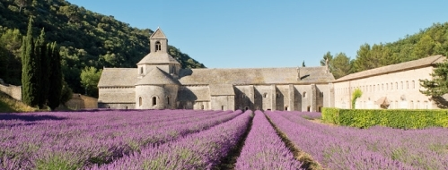
私をはじめてフランスに駆り立てたのが、この「何もない、ストイックな空間」だった 。 9~1 2 世紀頃のロマネスク建築が、特にフランスの田舎町に点在していると知り、なんとしてもそこへ行き、自分の眼で確かめてみないことには居られなかった。これが絵画や写真であれば、ある程度までは、詳細を学ぶことができる。でも建築だけは、実際に行き、触れて、その「空間」に自ら立たねば何ひとつ分からないと思った。二十代ちょうど半ばだった私は、ザック一つで秋のヨーロッパに向かい、そのまましばらく、世界を放浪することになる。（これはまた、別のハナシ）
9 月にパリに来て 、 1 0 月も半ばの、フランス南部の田舎町をヒッチハイクで転々とした。秋の陽はどこまでも高く、私はロマネスク建築の書かれた一枚の地図を手に、それらを一つ一つ回って行った。世界遺産にも登録されてい る Abbaye de Fontenay ( フォント ネ― 修道院）から、プロヴァンスの三姉妹と呼ばれるル・トロネ、シルヴァカーヌ、セナンクを回った。修道院は簡素ながら、宿泊施設を持つところが多く、私はそのままコンクのサンフォア修道院を抜け、スペインのサンディアゴ・コンポステーラ巡礼の道を、ひとり、最後まで辿ることになるのである。
今ふと思い返し、こりゃストイックだなあと感心するのは、当時の私のほうである。全てに必死だったし、後がないから、手探りで進むしかなかった。結構大変だったんだ。
ストイックに物事を付き進んでいる人間 を ― ― 私は笑えない。世の中は、少なくとも私が発つ前の日本は「もっと気楽に、もっと力を抜いて」頑張らない、考えない、という方向に進んでいるように思えた。真っ赤な顔をして、頬をふくらまして、汗をだらだら流しながら、踏ん張る人間をどこかみんなで笑う風潮があった。クールであるのがカッコいいみたいな、でも本当のクールって、物事を必死に成し遂げた人間だけが知る、オトナの余裕のことなんじゃないか。
セネカを引っ張り出したあたりから話がおかしくなってしまった。私がこの「ストイックであるということ」というタイトルで書こうとあたためていたのは、実は、全く違うパリの風景だったのだ。
セネカめ。〈後編へ続く〉。
3 5 ：ストイックであること 後編
「♪ 走る、走る、俺たち 流れる汗もそのままに」
私が小学校の時、ヒットしたロックバンドの曲をつい口ずさんでいる、ということがパリで数回あった。なんでパリまで来てこんな泥臭い歌を、しかも日本語で口ずさんでいる？タイトルも、歌っていたグループの正式名称も思い出せないのに。足を止め、周囲を見渡す。誰に見られているわけでもない。そこにはただ、私を抜き去って行ったランナーの残した風がそっと微笑むだけ・・・そう、原因は彼、または彼女である。パリでは朝だろうが昼だろうが、晴れていようが雨だろうが、いついかなる時でも場所でも、必ずと言っていいほどランナーとすれ違う。ニューヨークやロンドンに行ったのはだいぶ前だけれど、ここまで走る人々とすれ違った記憶はない。おそらくランナーであれば、ニューヨークはセントラルパークを、ロンドンならハイド・パークやサウス・バンク周辺を走っているからだ。ならばパリでも、公園を走るだろう。私の滞在寮はモンスーリ公園というジョギングのメッカ目の前にあり、朝夕にそこから出てくる人々とすれ違っているのだ。ところが１区、２区あたりの繁華街や観光地を普通に歩いていても、あるいは住宅街の路地でも、とかくランナーに遭遇する。平日だろうが土日だろうが、時間も気候も全く関係ない。
世界の都市を引き合いに出さずとも、日本だって似たような状況だ。ランニングはもう何十年と前から根強い国民的スポーツとも言って言えなくもないし、何をかくそうこの私だって、学生時代、倒れる寸前まで皇居の周りや外苑をぐるぐると何周も回りつづけた過去がある。当時と比べると幾分状況は変わった。スカートを履き、かわいい恰好をした女性が走っているのにはビックリした。（ランスカというらしい）水曜夜の皇居では数えきれないほどのスポーツクラブや会社の旗がひしめいている。彼らは団体で走るため、道は渋滞し、追い越すのに５分はかかる。もちろん反対方向に走っているランナーもいて、自分の走りに集中するどころの話ではない。
その点、パリのランナーは「マジ走り」である。みんな、何か思いつめたような顔をして、深刻そうに走っている 。3 月 、4 月は日が差してきたとは言え、まだまだ肌をさらすには寒い日が続くからかも知れない 。 ipo d を聞いている人たちも多く、基本彼らはひとりである。老いも若きもみな黙々と、雨に打たれようがひたすら走る。団体で走っている姿を見かけたことがない。時々男女をみかけるぐらい限度である。あまりグループで走るという考えは持ち合わせていないのかもしれない。その顔は「ストイック」そのものである。トリュフォーの『大人は判ってくれない』の中で、体育の時間に学校周囲の狭い道道を走らされている生徒たちが「ショートカット」する場面があった。現代パリですれ違う、自発的ランナーたちの中でああいう「たりーな」顔で走っている人はまあ当たり前だけれど居ない。私は「走る 走る 俺たち」と口ずさみながら、実は彼らを応援しているのかもしれない。そうだ、やっとタイトルを思い出した。『ランナー』 だ。
4月6 日（日） が 201 4 年のパリマラソンだった。自分が走るわけでも、知り合いが出るわけでもないのでわざわざ出かけない。公式ホームページは充実していて面白い。今 年 3 9 回目 、 3500 0 人規模の大会で、凱旋門からシャンゼリゼを通り、コンコルド、バスティーユ、セーヌ河畔を抜けてブローニュの森へという観光名所を駆け抜けるコースだ。
走るという行為は、多かれ少なかれ人にストイックさを要求するものだ。公 式 H P の動画を見ていると、沿道のブラスバンドや、給水風景や、エッフェル塔、凱旋門といった名所が次々と現れ、人々は満面の笑みをたたえ、間違いなく「楽しい」ものに仕上がっている。けれど走っているのは当のランナーたち一人ひとりであり、相当苦しいものに違いない。人によってははるばる海の向こうから飛行機でやってきて、時差と寝不足で、体調も万全とはいえず、景色なんかひとっつも目に入らず、それでも完走するため必死に足を前へ運ぶことしか考えていないひとだって沢山いるはずだ。そこにはおそらく各人の数だけの、何らかのテーゼがあり、目標のため積み重ねてきた練習の日々が存在する。日ごろ他人にはいくらか言い訳のできる人であっても、いったん走るとなれば、自分と自らのもつ肉体に対し、決していい訳などできない。そういう状況に、自ら望んで追いやるのである。
走る人を見ていていいなあと思うのは、決められた時間と場所を必要としなくていいことである。もちろんある程度の事情はあるだろうが、総合すると、基本的にはシューズとランニングに適した服があればあとは意志だけ奮い立たせ、朝なり夕なり走ればいい。これがダンスとなるとそうはいかない。ランニングと同じように、ダンスにもターンやジャンプをするのにふさわしいシューズなり恰好というものが存在し、建前上はいつでもどこでも、健康な体さえ持っていれば勝手に踊れることになっている。でも実際には、私が今突然路上で踊りだしたらそれはただの貧乏大道芸人か頭のおかしい人である。プロでない私が「ダンスをする」ことは、たいていの場合、踊れる場所を確保しなければならず「レッスンに行く」ことを示唆する。ある費用の対価として、然るべき広さの教室、音楽、指導の教師と振り付けを 、 9 0 分な り2 時間なりと得るわけだ。ランニングのように思い立ったらすぐ走れますというのとは若干事情が異なる。でもその精神的な自分との戦い、追い込み方、モチベーションの上げ方、あるいは集中すべき時の集中の仕方は、走ることととても似ている。
物書きを志したのは幼い頃で、ジャズダンスをはじめたはその後になる。でも実際はダンスから、書くことについて学んだ。逆説的に聞こえるかも知れないけれど。中学時代の夏休み、午前中はダンス部で特訓をし、その後市民プールに行ってちょろっと泳ぎ、中央図書館で本を片っ端から読みまくり、本の感想や、好きなフレーズを書き写した。ダンスを踊ることの中に、私はものを書くのと同じ姿勢を見出していた。書くことについて師は持たなかったけれど、私はダンスから、その多くを学んできた。
走っている彼らを見るたび、私も思い出す。そこには、むかし、私がダンスに見出したような、切実で、当人にしか説明のしえない、ストイックな理由があるのだと。書かなくては、と思う。どこに辿り着くか分からなくても。知らない異国で、ストイックに自分を追い詰める、知らない男女の後姿だけが、私を静かに鼓舞させる。どんな慰めや、励ましの言葉より切実に。寒さのパリで、凍りついた体内から、書き続ける熱をよびさまさせてくれる。
「いつか辿りついたら 君にうちあけられるだろう
言葉もない 俺たち ひどく熱かった日の 夕だち」
3 6 ：大統領の辞任
また映画授業のネタである。本日のお題は「フランスと政治」。アメリカほど「政治映画」が盛んとも思えないこの国。権力監視としてのジャーナリズムがまっとうに機能していない、あるいはスキャンダルの追っかけに忙しいからか。ともあれ、そんなフランス政府の内幕を描いた近年の秀逸作品が 『 L'Exercice de l'Eta t 』 （ 201 2 ：ピエール・ショレール監 督) だ。日本では公開されておら ず amazo n で検索したところ、昨 年 DV D のみ発売されていた。タイトル：『大臣と影の男』。
201 1 年のフランス・ベルギー合作で、翌年カンヌで初公開された。セザール賞では作品賞はじ め 1 1 部門でノミネート、脚本賞等受賞している。ストーリーは、派閥に属さない運輸大臣のジルが主人公。秘書官、報道顧問など有能な側近に恵まれているが、やがて国鉄駅民営化をめぐる各省庁の駆け引き、熾烈な争いに巻き込まれて行 く ― ― という、まあどこの国でもこの手の話は尽きない、という展開。金、地位、名誉を巡るオトナたちの泥仕合をほぼ直球で描くショレール監督の手腕はなかなか。フランス的シュールな映像が盛り込まれ、なるほど、日本で劇場公開は難しかったのだと納得。なんだかんだ言って「内幕モノ」は好きだ。わけのわからないセンチメンタル映画やロードムービーより、行動する中に人間たちの思惑がきちんと読みとれる作品が。
『政治』がテーマだったおかげで、授業前半はフランス内閣における制度について講義形式となり、後半はそれをもとにディスカッションで進められた。私は例によって「うんちくはいいから、早く映画の続きを」とそわそわしていたが。大統領の選出方法だのをおさらいしている時、ふと、ある大統領の辞任演説を思い出した。ジョージ・ワシントンも、ニクソンも、シャルル・ドゴールも成しえなかった、おそらく私が知る中で、世界で最もすてきな、哀愁に満ちた、愛すべき辞任演説である。
マーク・ストランド氏というカナダ生まれ、アメリカで活躍した詩人の書いた短編小説、その名も 『 The President's Resignatio n 』（大統領の辞任）。 『 The New yorke r 』という昔、超有名だった（今はどういう位置づけか本当のところよく分からない）アメリカの文芸誌 に 197 9 年、掲載された。パリでも実は買うことができるのだが、ネット版が充実しているので特に不自由は感じない。作品アーカイブ化も進んでいる。「古き良き時代」と一部の人にカリスマ視される作品はたいてい、ここで一覧することができる。（もちろん作品そのものが読めるわけではない）
この短編小説の大統領は、気象マニアである。多くの予算を国立気象博物館につぎ込み、そのさよなら演説でさえも、気象一筋で語られる。まずは「気象という偉大なる大義の中で労働する人々のため に ― ― 」かつて語られたはずの誓願に、想いを馳せる。気象に携わる人々について、「彼らは風を計り、雨を予測し、自らの身を何世代にも及ぶ日々の重ねに捧げてきた人々」と定義する。『点の記』の作者、新田次郎が聞いたら、どんなに心を震わせたことか。大統領は言う。「私は常に変化せぬもののために、行動にあらがうもののために、人間の心の真ん中の静謐のために語ってきた」と。 マーク・ストランドには 『 Keeping Things Whol e 』（物事を崩さぬために）という詩がある 。 We all reasons for moving, I move to keep things whole . （僕らはみんな、動くための理由を持っているけれど、僕が動くのは、物事を崩さぬため：訳は村上春樹氏による中公文庫『犬の人生』を参照） 気象という、一見ころころと変わり、移り気で、ひとときも同じでない自然現象の中にこそ、絶対的な普遍を見出すコントラストが面白い。
閣僚の皆に対しては「多くの時間が皆さんのために、チェーホフを読むことに費やされた。そのあとには我々の非重要性だけが残った」と回顧する。自分たち は 20 0 年後どころか 、2 年後には忘れ去られる存在であることを。
そして最後に、友人たちよ、と語りかける。気象というものが持つ意味をいったいどう説明しよう。散文のような無意味な自らの人生に彩りを与えた気象をあらゆる角度から賛美し、これからも尚、空を見上げつづける決意を述べて、別れの言葉とする。
２年どころか１年前の首相の顔も思い出せない国もある。こんな大統領の納める国家なら、国民たちもさぞチャーミングだろう。空を見上げる。パリの夏は近い。
3 7 ：ｖｅｌｉｂ ヴェリブ そしてパリを駆け抜ける彼ら
パリの街を駆け抜ける二つのものについて記す。
【その１】：グレーの自転車が走っている 。 Veli b （ヴェリブ）とい う 200 7 年パリ市が導入したレンタル自転車だ 。 VeI o （ヴェロ：自転車） と Libl e （リーブル：自由）を組み合わせた造語らしい。街のあちこちに無人の専用スタシオン（駐輪場）があり、最初に保証金とともに登録すれば、誰でも自由に借りられる。しか も 3 0 分以内なら無料ときた。こりゃあみんな自転車買わなくなっちゃうよ、と余計な心配をしてみたが、そもそも導入の根拠は、市内の自動車による道路渋滞の深刻さ。なんとか緩和しようと行政が乗り出した。
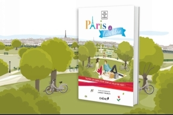
確かに、ひと駅程度であればバスやメトロに乗る必要もなく、すすいっと道路を抜けてしまった方がはるかに早い。最初聞いた時は、石畳のヨーロッパで自転車ってうまくいくのかね、オランダじゃあるまいし、と案じた。ところが実際、道を見て驚く。『自転車専用レーン』がかなりの割合で整備されているのだ。うっかりそこを歩行者があるこうものなら、見ず知らずの人に「危ない！」「ダメダメ」と怒鳴りとばされる。（なんでパリ人はこういうことに熱心なんだ？）
老若男女、と書きたいところだけれど、さすがにお年寄りや、小学生が乗っている姿はあまり見かけない。というのも、後者については 、 1 3 歳以上 、 15 0 センチ以上という身長制限がある。年齢はともかく、私の場合、身長はぎりぎり。ぱっと見たところ、デザインのシックさも手伝ってか 、 2 0代 ~4 0 代の若者・中年層が中心のようだ。会社帰らしきスーツの男性や、髪をポニーテールにしたちょっとお買い物風の女性がはつらつと風を切っていくのを見るのは、気持ちがいい。パリにまたひとつ、新しい風景が加わったわけだ。題して『自転車に乗る人々』。１日、１週間という単位でも登録できるため外国人旅行者の利用率が高いらしい。米国人などこの手のものは好きそうだ。
スタシオン（駐輪場）にも大小あり、常に混んでいるところから、人気がないのか人も自転車も動きが見られないところまで様々だ。返したい場所が既に一杯で、返却できなかった場合など困るじゃないか。公式サイトによると、カードで〈ピピっ〉とその旨登録すると、すぐさま最寄りの別のスタシオンを電子画面で教えてくれるらしい。無料 で 1 5 分延長となる。でも自転車 で 1 5 分行った先って、歩いて戻ってきたら結構な距離になるのでは？
「市民の足」としての自転車は、だいぶ定着してきたらしいが、私がよく見かけるのは、市庁舎前、マレ地区で、あるいはセーヌ河畔など、自転車に乗った５～６人の観光客グループのほうだ。そろいの安全ジャケットをはおり、自転車で市内を自転車で観光するツアーだ。先頭にはアメリカ英語を話すガイドさんがそれぞれのポイントで解説を加えている。何故か女性が多い。ウォーキングツアーよりは広範囲を回ることができるし、バスよりは小道や店のひしめく間もすいすい走り抜けていける。ちょっと降りて写真をぱちりと取ったり、サンドイッチを買ったりもできる。ここはツール・ド・フランスの国。自転車のみならず「走りモノ」に対する興味は、もともと強いのかもしれない。
【その２】：日曜の午後、恐るべき光景を目にした。場所はルーブル美術館を出たあたり。物凄いスピード集団が走り去ってゆく。もちろん、自転車でもバイクでもなく彼らは二本脚。そう、うわさの『ローラーブレード』である。（＝商標。正式には『インラインスケート』） 聞いたところによると、日曜午後と金曜夜 （ 2 2 時）にどこかの駅に集合して、あらゆるルートで市内をローラーブレードで走るそう。数えていないけれど、かなりの人だ。次から次へと終わりがないんじゃないかと思うぐらい 。 30 0 人ぐらいかなと思ったら、とんでもない！晴れた日曜は平均千人以上だと！中規模のマラソン大会を、沿道で応援している気分だ。老いも若きも、ベビーカーに乗った赤ちゃんまでいる。ハイスピードでベビーカーを押しながらローラーブレードで走る母親というものを見たのだって、一度や二度ではない。あの子、大きくなったらスピード狂になるのでは、と人ごとながら心配だ。
199 3 年に始まった当時は日曜と金曜は別の団体が主催していた。でも規則もなくスタッフもいないのでは危ない、ということで、パリの警視庁がさっさと法律と集団を取り決めた。すごいね。正しくは 条例にのっとって 、集団は走行時には車も歩行者も止め、ローラーブレードの皆さんの安全を優先させることができる。
さらに驚愕の事実が。なんとパリ警視庁 『ローラーブレード警察 ／ La Brigade à roller de la Polic e 』 （ 199 8 年より） まで作っちゃった！！本気度が違いすぎる。彼らは厳しい選抜試験を潜り抜け、ローラーブレード警察としてプロのトレーニングをこなしている 約 3 0 人。集団の先頭と最後尾（警察の車、救急車も走行）を守り、脱落者の保護や誘導を行う。
そういえば私が小学校高学年だった頃、日本のアイドルでローラースケートを履いて歌い踊る男性グループが居た。クラスの女子どもは学校にブロマイドを持ってきて「誰だれ君のファン」と自身のアイデンティティーを宣言しなければならず、それによって女子の派閥が決まる程の影響力を持っていた。当然彼らにひとかけらの興味もない私は派閥外。そんな私が何十年後、外国で改めて「おおっ、パリのローラーブレード警察はかっこいいぞ！」と思う。これならファンになってもいい。引きしまった横顔、ローラーブレードを足の一部の如く自在に操り、私の横を風のように横切ってゆく完璧なフォームには、職務遂行への並々ならぬ情熱が感じられる。スピンもスネークもクロスも、じつはバリバリにこなせちゃったりするのかもしれない。
さすがにＮＹもスコットランドヤード（ロンドン警視庁）も、ローラー隊まではいないだろうな。ますます気になる、今日もパリを駆け抜ける彼ら。
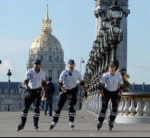 「 roller-skating Magazi n 」。
3 8 ：ボディーシャンプーの私的効用
空気が乾燥しまくっている。たぶんフランスに限らず欧州各地、四季を通して似たようなものじゃないかという気はする。プラス、欧州の水に石灰質が多く含まれていることは、水の項で既に書いた。シャンプーやせっけんにはそれらを分解する酵素が入っているというハナシ。
ボディーシャンプーが切れたので、今日モノプリ（大型スーパー。よくガイドブックにも『お土産はここで買いましょう』なんて書いてある）で買ってきた。私のお気に入り は Sane x のノーマル肌用。日本人なら、フランスにいればオイリー肌の人は普通肌に、普通肌の人は乾燥肌に、ということになる。もともと日本に居る時から普通肌～ちょっと乾燥気味かも、ぐらいで殆どお手入れなどしない私。何かつけようものならべとべとして気持ちが悪い。敏感肌ではないが、キメが細かいと言われるタイプ。キメってなんなのか、未だによく分からない。かわいいとか美人だとか言われたことはどうも記憶にないのだけれど、キメだけは何故か決まって「細かい」と評される。きっといいことなんだろう。そんな私でも、さすがに乾燥肌用のものではきつすぎ、敢えてノーマルを選んで、だいたい正解。
モノプリの品ぞろえは結構圧巻だ。ボディーソープにしろ、シャンプー・リンスにしろ、これでもかと、色んな種類、いろんな香りのものがある。マツキヨや雑貨好きにはたまらないだろう。
匂いを嗅ぎ、いくつか試しに購入した結果、フランスのボディーソープは概して「アーモンド／バニラ系、甘めの香りが多い」ということだ。どう見て も 1 0 代 、 2 0 代前半の若い男の子たちが、すれ違うたび甘くていい香りがする。香水みたいな嫌らしさでなく、あくまでさりげなく、清潔な香りがほんのりと続くので、私はてっきり洗濯物（つまり洗剤）だと思っていた。ボディーソープだったのだ。代表的なのは 『 Les Petit MARSEILEAE S 』（レ・プティット・マルセイエ）というシリーズ。セーラー服姿の男の子が腰かけて足をぶらぶらさせているイラストがかわいらしい。フランス人ならだれでも一家に一本（かどうかは知らない。あくまでイメージ）、という代名詞的ボディーソープ。種類と香りが豊富なので選ぶのに迷いそう。私はスタンダードなミルクタイプを手洗い用に、アーモンドの香りをボディーソープに買った。そのうち甘あま～では飽きてくる。たまにはスッキリさっぱりしたい、という日のた め Sane x を購入 。 E U 産となっている が H P を見るともとはアメリカ発。コマーシャル映像のセンス良し。
コストパフォーマンスがよい（だいたい小さいものな ら3 ユーロ以下）ので、香水など容易に手が出せない海外節約生活中でも、ちょっとした気分転換になる。ささやかな朝の楽しみ（今日はどの香りを選ぼうか）があると、人生の幸せ度もほんのちょっぴり違ってくる。人によっては、今朝のバゲット選びだったり（ノーマルか、それともトラディションか）服や、靴や、ピアス選びだったり、その日一番にアイポッドで聴く音楽だったりするわけだけれど、ボディーソープの香りという目に見えない楽しみも、まあ悪くない。
3 9 ：パリの空の下
エディット・ピアフの『パリの空の下 』 Sous le ciel de Pari s は、フランス語を学び始めると誰もが一度は聞かされることになる有名な一曲。知っていようがいまいが、ひとたび仏語の門をくぐったら、これを経ずして学習者とは呼ばせない、という力ずくに近いものがある。入門テキストの最初のほうにも関わらず出てくるのは、歌詞にそれほど難しい単語があるわけでなく、パリの魅力が盛りだくさん、口ずさみやすいメロディーだからか。ディクテで（ ）こんな感じに空欄になって穴埋めするようになっている。入門レベルでも、人称代名詞（彼・彼女など）、ギャルソン、オワゾー（鳥）といった簡単な単語はききとれる。少し上のレベルでは、動詞や頭の接続詞がカッコになり、かくいう私もそれぞれ異なるクラスで、最低２回ずつは授業でやった覚えがある。パリに来てすぐ、見るもの全てがキラキラと目新しい頃はまだいいが、半年もたてばすっかり飽きて、またこの曲かよ、という気になるのが普通だ。毎回思うが、哲学者だの、水夫だの、アコーディオン弾きだのがフ ツ― に歌詞に出てくるパリって結構凄い。その上「パリ」が主語になっちゃてる、とくれば、こりゃあ昔の日本人の憧憬は、想像に難くない。
中級クラスの個人発表で、この歌詞を作詞したジャン・アンドレ・ジャック （ 1921-2003 ) を取り上げたクラスメイトがいた。焦点は作詞者だったので、とくに歌詞の内容に突っ込んだり、文法をやったりしたわけではない。が、例によって例のごとく、電子黒板 に you tub e を映して聞いたわけだ。ま あ8 割がたエディット・ピアフだろうと思っていたら、映像がモノクロで洒落ていて 『 201 3 年バージョン』とある。パリの街並みがシックに映し出される。雲が流れる。少なくとも、私がパリという街では、ほとんどまともに感じることのなかった「風」が、石畳の通りを確かに駆け抜けてゆく。
ところで、この歌は古今東西いろんな人がいろんな歌い方をしている。私が知る中では「どうしてもジュリエット・グレコじゃなきゃだめ」という人が、結構いるみたいだ。そもそも映画『巴里の空の下セーヌは流れる 』 (195 1 ）で歌ったのは彼女だ。ピアフは確かに偉大だけれど、情感がこもりすぎて、なんか違 う ― ― いうのが、その人たちの大まかな意見だったと思う。以前、何かの機会でこの話になったとき、たまたまその場に居合わせた在仏歴の長いシャンソン歌手の女 性 ― ― かなり年配 の ― ― が、ポロリと日本語で言った。「グレコはさ、『いつくしみ』があるんだよ」。『いつくしみ』と、５語を区切るように、ハッキリといった。愛、とか、現実味、とかの言葉でなかったのが印象的だった。帰って聞いてみたら、何となくわかる気がした。ピアフは生きてゆくことの重みをしっかりと受け止めて歌うのだけれど、グレコはだからこそ、どこか突き抜けた明るさを与えようとしている。この街に生きる人間を見つめるグレコのまなざしが、あたたかな体温として歌からこぼれ落ちているんだと思った。
と言っておきながら、イヴ・モンタンというカードをきらせていただきたい。どうしてかは分からないが、時や場合によって「ああ、今日は女の声はダメだ。受け付けない。イヴ・モンタンでなければ」と思う。フロイト的に分析すれば、なんだかいろいろ突っ込みどころがありそうだけれど。要は聞く側の精神状態によって、同性の音声が耳にうるさく、完全遮断（ミュート状態）しなければならないことがある。そういう時は、洒落て、後腐れなさそうな彼の声でさくっといこう。
それにしてもパリの空の下流れるものといったら、オムレツの香りに決まってる。
まだ、一度もつくったためしはないけれど。
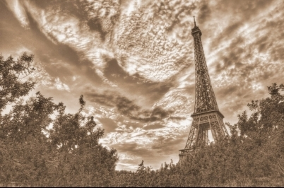
4 0 ：ドーバー海峡の白い崖
『三銃士』が大好きだった。小学校高学年になって、ＮＨＫアニメ（『アニメ三銃士』）で放映され、毎週、胸を熱くして観た。金曜の夜 の 3 0 分枠で、翌週が待ち切れず、ビデオまで取って毎日繰り返し見たからほぼ丸暗記している。ダルタニャンの勇気と知恵、三人の銃士との友情、コンスタンスやミレディー、鉄仮面といった魅力的なわき役た ち ― ― 、たいていの女子が『ベルばら』でフランスへの扉を叩くとしたら、私はこのガスコーニュの田舎から夢を抱いて出てきた、ちょっとばかり無鉄砲だけれど、機転が利く主人公と一緒に冒険がしたくて、この国へ足を踏み入れたみたいだ。利発なダルタニャンも若さゆえ、いろいろ痛い目にも合うけれど、仲間に助けられ、事態を打開してゆく。いつか私も「こんな物語が書けたら」と、いてもたっても居られず、と同時に「自分自身も、こういう生き方をしたい」と、強く思った。
毎回、エンディングテーマとともに、舞台となったフランス各地の実映像が映し出された。それを見てフランスへのあこがれを募らせるようなセンチな子供ではなかったのが残念だが、ル イ 1 3 世のフランスという時代背景には興味を持ったし（ベルばらファンが熱心にフランス革命について学ぶように。）アンヌ王妃とバッキンガム公のおかげでダルタニャンは首飾りをとり返しにイギリスへ渡ったりしたものだから、当然隣国の政治や地理が気になって仕方ない。今みたいにネット や Wik i 先生といった、頼れるものはなかった。知りたければ、駅前の大きな本屋で地図帳を立ち読みするか、中央図書館へ行って自分で調べるしかなかった。
ダルタニャンはフランス・カレーの港からドーバー海峡 （ Pas de Calais ) を渡る。イギリス本土が近付くと、一緒に乗り込んだ馬のロシナンテに 「ごらん、あれがドーバーの白い崖だ」 と静かに語りかけるシーンがある。かすかに風も吹いていた気もする。（若干、記憶に脚色があるかもしれない）当然 、 1 0 年そこそこしか生きていない小学生がそんなものを、たとえテレビの中とは言え、見たと思いなせえ。
――「うぉおおお、フランスのカレーというところからイギリスのドーバーという地点まで船で渡れるのか ！ 3 4 キロだ。走れば行けないことはないけど。そしてそのドーバーの崖というのは、石灰質というのでできているから、白いのだ！」
いちいち大興奮し、ノートに書き留め、いつか自分も船で渡らにゃ、死ねないと思う。まあ、こと小説や物語となると、何かにつけて大袈裟な小学生だったみたいだ。この夢は後年、成就する 。 2 0 代の放浪の時期、パ リ― ロンドンを結ぶユーロスターに乗る金がなかった、というのがそもそもの理由だったが「ああ、そういえば『崖』みなきゃ、崖」とふいに思い出し、フェリーに乗ったのだ。結構簡単だった。ようは電車でカレーまで行き、フェリーのチケットを買い、ドーバーについたらそこからまた電車でロンドンを目指すという、ただそれだけの話である。返って時間とお金はかかるけれど。それも大層くもった日で、雨すら降っていた記憶があり、極秘任務遂行のため意気揚々とデッキに佇んでいたダルタニャンどころか、寒くて震えながら船内におり「早くつかないかな」と思っていた。崖の白さも、靄でぼやけてはっきり覚えていない。まあ、そんなもんだ。
三銃士の話に関しては、テレビヴァージョンなら 全 5 2 話、おそらく素面で全スクリプトを書けそうな危険性があり、そうしたマニアックな過去はここでは伏せる。（ってもうバラしているな）でもそういう小学校頃の記憶って、良くも悪くも大人になった自分の中に息づいて、何かの機会にふいに顔を出してしまうものなのだな、と思う。
しんどい出来事があって、フランスに居ること、フランスに来てしまったことをかなり辛く、後悔したりすることもあるけれど、そんな時に限ってふとダルタニャンが私の中にひょっこり帰ってくる。なんだよ、頑張れよ。「どんなことがあっても、くじけるんじゃないぞ～！」 これは最終話で、別れ際、相棒のジャンに、ダルタニャンが涙を振り絞りながら大声で叫ぶセリフ。既に別の道を走りだしているジャンは、大粒の涙をこぼしながら、「わかってるさっ」と、後ろを振り返らずいうんだ。
― ― 大学時代、日記帳の表紙裏に、この「どんなことがあっても」のセリフが英語で書かれている。ブルーのインクで。でもなんで英語だったのだろう (笑) ？ 「もし、どのようなことが起ころうとも、くじけてはならない（否定命令）」の形にすればいいんだから、ええっと・・ ・ Ne pas découragé , とかではじめればいいのかな？今になって考えているというのもどこか可笑しいけど。ダルタニャンの国に、今自分はほんとうに居るんだなと 、 1 1 歳の少女に教えてやりたくなる。ＮＹにもジュネーブにも、三銃士は居なかったんだから。
孤独を生涯の友として生きることを、私は小さい頃からずっと受け入れ、納得してきた。結婚はしない。家族も友人も持たない。物書きとして、深く閉ざされた井戸の中に降りてゆく一生を送るのは自明のことだったし、もともと、そうした生き方を苦痛と感じない性分だ。人と騒ぐより、静かに自分の世界を掘り下げて何かを掴んだ方がよろこびを感じやすく、一 日 1 3 時間、机の前で黙々と仕 事 × 2 週間 、3 週間、ということも全く平気だ。社会的には高次不適応とか、仙人だとか、悪く言えばただの二分割思考の変人で、ある種の人格障害になってしまうのだけれど、本当の変人って、自分のことをそうは言わないからねえ（笑）。人から強制されるもの、一方的にやらされるもの、押しつけられるものに対しては断固やらない、一切拒否するが、自分から興味をもったものに対しては周囲があきれるぐらいのめり込み、ありったけの情熱と持てる全エネルギーを（ない分まで無理やり醸造し）注ぎ込む。あまりいい例えではないけれど、５段階評価でいくと１か５しかないわけだから、（それなりにシンドイし）こういう生き方は出来ればおススメしない。そこそこ４とか２とかもあるほうが付き合いやすい。平均的な「３」の人こそ、特にアジア系集団社会で生きていく上で苦労は少なく、評価もされる。私だって好き好んでこういう性質なわけでなく、生まれ持った性分は大きいと思う。プラス若干の生育環境。
まあそんな私でもこれまで一切「仲間」を求めなかった、というわけではない。間違いのないよう断っておくが、仲間や友情を小馬鹿にしたり、一人がいいと言っているわけではない。ダルタニャンだって、ひとりでも充分頑張れたけれど、そこに三銃士という力強い仲間との出会いがあったことで、いろんな人生の機微を知り、助け、助けられて幾多の困難を乗り越えることができたのだ。おそらく、日本語の 『情』 という感覚とは、含む内容が絶対的に違う気がするが。それはまた別のテーマで。＜続く＞
4 1： Un pour Tous Tous pour U n ひとりはみんなのために
さて三銃士には有名なセリフ 、 Un pour Tou s、 Tous pour U n が出てくる。４人とも男だから男性形だ。「一人はみんなのために、みんなは一人のために」と訳されている。
大学時代、私は体育会のワンダーフォーゲル部にいた。ダンスを忘れるためだった。とにかく身体を酷使する体育会の部なら、どこでもよかった。逃げ出したくなるような４年間を送る、ただそのことだけが目標だった。体育会の強い三流の私立大学だったから、正規の体育会本部の門を叩いても、スポーツ推薦で入ってくるような連中ばかりで、初心者はまず門前払い。受け入れ可能なのは、唯一山岳部だと紹介され、行ってみれば女子はマネージャーの募集で、部員としての活動は不可。海外遠征の準備や渉外などの事務作業のみだ。自身で活動したいなら隣の部屋へ行けと。そこがワンダーフォーゲルの部室だった。女子でも正規部員として入部を許可され、結果、私は４年間をどっぷり自然と共に過ごした。
女子を受け入れてくれたからという消極的な理由だけではない。一つ上の先輩が言った「山岳部とワンゲル部の違い」だった。同じように山に登るけれど、いったい何が違うのか。いろんな答えがあった。曰く「山岳部はエベレストに登るけれど、ワンゲルはアメリカやニュージーランド、モンゴルなんかに行く」。う～ん。あるいは「山岳部 は 8,00 0 メートル登った奴よ り 801 0 メートル登った奴のほうが偉いけど、ワンゲルは自然に対して自転車だのカヌーだの様々な手段を使い、いかに入りこめるかを楽しんだ奴の勝ち」 。 5 0 点。「山岳部が垂直方向を目指すとしたら、ワンゲルは水平方向を目指すんじゃないかな」。まあまあ。それなりの回答はいくつかあったが、すとんと来たのは「山岳部は、ひとりが登頂すれば成功。でもワンゲルは、ひとりでも脱落させたらその合宿は失敗だ」というフレーズだった。
前者の場合、目的はエベレスト登頂であり、チームの中で誰を犠牲にしようと、最終的に一人を頂上に送りこめば、成功ということになる。誰が犠牲になり、誰が大学の旗を頂上で降ろうが構わない。だからこそ、多くの駆け引きやドラマが生まれる。仲間内でも信じられないような裏切りや、スポンサーとの金銭の取引、マスコミ操作など、その辺は数々の山岳小説、特に海外の優れたものを読んでください。当時は夢枕獏さんの『神々の頂』（上下）がバイブルだった。それに比べて、ワンゲルは明らかに「団体競技」である。チームワークを大事にするから、誰かを蹴落としてでも自分が、という考えとは異なる。どうしたら全員がうまくいくかを念頭に考える。レギュラーも居なければ補欠や控えもいない。もし一人脱落したりけが人が出たりすればそれは計画に無理があったということで、リーダー、ひいては皆の責任ということになる。だから、合宿以外の時は全員で厳しいトレーニングを行う。まず、そういう決定的な違いを理解し、納得の上で入部者を集う、男女関わらず、ということだったんだと思う。
何故、急にこんなことを思い出したか。昨日 、 street jaz zと hipho p のクラスに出たからだ。先月、衝撃を受けて以来、ずっとＪ先生は復活祭のバカンスでお休みだったのだが、ようやくこ の3 時間ぶっ続け、ストイックなクラスに出ることができた。休講の間は、アップされた動画を見て振りの研究をしていった。正直「ついていけるか」と、緊張していた 。3 時間もハードな踊りをつづけるのは中学のダンス部以来か、いやバレエ団の時 も5 時間ぐらいは平気でいたが、それはちんたら別のこと考えながらバーレッスン、だった・・・。何 故 3 0 代後半にもなって、一分一秒全力投球、しかも理解ままならぬ仏語で、である。踊りにやってきた来たわけではないのだが。なんだかんだいっても、結局はその人が自らのうちに抱え込んだ『業』、本当にやるべきことしか「できない」ように導かれていくのかも知れない。
ヨガやバレエのクラスは、渡仏以降も受けてきた。でも何故 か ennu i （アンニュイ・退屈）で、心を震わせてくれるものに出合えなかった。どうしてこの先生のクラスだけはついて行こうと、毎日通っているのか。Ｊ先生の振りにある特徴的な「一体感」が私を惹きつけたのだと思う。
私が最初にダンスを始めた時、それはジャズだった。みんなと一緒に踊る楽しさだった。うまいとか下手とかじゃなく、同じ振りで、団体でひとつのものを作り上げていく強さ、凄さ。異なる人間同士が一体となって前を向く、すさまじいエネルギー。そういうものが好きだった。だからクラシックバレエも相当レベルまでやったけれど、個人的にコンクールで賞をとるためといった動機ではなかった。仲間と一緒に、上を目指したかった。
外国のオープンクラスで踊ると、例えばＮＹ の BD C など、また違ったエネルギーが渦巻いている。有名な先生が振付けるのを、生徒は必死で体得し、時に生徒が教師を凌駕することもある。クラスは学びの場であると同時に自分の将来をかけた戦いの場でもある。
Ｊ先生のクラスは、生徒同士が一体になり、クラスでひとつの作品を作り上げる「きずな」を感じる。肌の色も、髪も、話す言語も（って私が理解していないだけじゃないか）異なる人々が集い、予想もつかなかった経験に出会っている。思い切って、外に出てきて良かったのだと。
Un pour Tou s、 Tous pour U n ／ひとりはみんなのために、みんなはひとりのために。
孤独に慣れてはいても、ダンスは私に眠っていた熱い思いを呼び覚ます。まだ自分は行けるはず、もっと上を目指せるはずだと。守りに入るには早すぎる。仲間ともう一度、ほとばしる汗を流せるはずだと。フランスで、生きた手ごたえを掴もうと思った。私は外国人だ。いつかビザや、お金が尽きて、この国を去らなければならない日は確実にくる。その時に後悔しないように。今は苦しみで一杯のこの国に、最後ちゃんと、笑顔で手がふれるように、感謝できるように。
自分が多くのエモーション（感動）を得て、ダンス熱をよびさまさせてもらえた感謝、あなたのもとで学びたいという意志さえ、Ｊ（先生）には伝えられない。強制的に自分をフランスに慣れさせようと努めてきたけれど、何ひとつ、語れる言葉がない。
「見てもらえる」「分かってもらえる」で理解されることなんて一つもない。語学の上達なんて、「死んでも伝えたい」切実な何かがあってこそ、じゃないか。めっぽうフランス語が上手な日本人が居ても、内容にその人自身の体重が伴わなければただうまいだけ、何の印象も残さない。逆に少しぐらい間違っても、どうしてもこれを伝えたい、この人に、これを伝えねばならないんだという死に物狂いの一点さえあれば、遥かにそれは聞き手の心を打ち、強烈なインパクトを残す。
ゆえに言語上達の最短の道は、好きなひとを作れとよく言われる。異性の恋人に限らない。同性でも、相手が子供でも年配でも構わない。心から信頼し、伝えたいと思う切実な言葉を胸の内に持てるような、そういう誰かに一人でも出会えたらいい。その人といくつかの会話を交わし、思いを共有することの方が、パリ市内 の 2 0 の美術館を巡り 、 10 0 の絵画をそらんじて「フランスを理解しました」というより、少なくとも私にとって、ずっと力強い手ごたえがある。（もちろん、絵画の研究をされていて、一枚の憧れつづけた絵の前に立ち、精神的な交歓を果たすのも、それは大きな意味のあることだ。）だから語学や、その国への入り方は各人それぞれ、全く異なる。
「みんな」のために、と思える自分の居場所が、早く私も、この国で見つかるといい。自分のためでなく、誰かのために踊ろう。失われた時間を取り戻すことはできないけれど。
戸を叩けば、未来は、仲間は、そこに居るはず。
42：C'est un pour des prunes それはプラムのためだった
フランス語 で Prune sも Prunea u も、どっちも「プルーン」だな、と勝手に思っていた。単数と複数形の違いか、でも複数だったらＸとかつくのでは？微妙な疑問はあったが、ついぞ解明せぬまま来た。大して生活に支障はない。ただ表記が違うということは、明らかに意味が違う別の「もの」を指している。これはハッキリさせておかねばならない。
Prune s だと英訳 が Plu m （プラム）となって、いわゆる生の果物としての西洋スモモ全般を指す 。 Prunea uが Prun e （プルーン）と訳されて、フランス語辞書だと丁寧に （ seche , 乾いた）＝ドライフルーツ、乾燥したものをさす、と使い分けるらしい。
それから私がはじめて知った、フランスのアジャン・プルーン。 （ le pruneau d'Age n： préfecture du Lot-et-Garonne en Aquitaine ) フランス南西部、ロット・エ・ガロンヌ県のアジャンという街で作られ、最高品質として欧州連合による地理的表示保護 （ PI G ）がなされる有名なものらしい。スーパーで売っているいわゆる乾燥フルーツで頭に思い浮かぶ「プルーン」でなく、大粒でふっくらとした極上（お値段も）プルーンらしい。マロングラッセのプルーン版？どうせフランス人のことだから、極上のワインと組み合わせたりするんだろう。
そういえば、こちらのガトー（お菓子）には「スモモのケーキ」だの、ジャムだのが多い。日本で言えば「梅」みたいなもの？（梅ケーキ、梅ジャムとか・・・）ちょっと違いますね。
C'etait pour des prune s という例文を辞書で見つけた。直訳すれば「それは、プラムのためだった」となる。？？？意味は「それは無駄だった」。なんでプラムが無駄なものの代名詞になっているのか。鉄分 （ Fe ) を含んで、貧血気味の小学生だった私なんて、小さい時から義務的に摂取させられた、有益な食物なのに。
今期の口頭試験が終わった。フランスにやってきて、これで全テストが終了したわけか。ほんとのこと言うと、帰り際校舎をあとにしてちょっとだけぐっとこみあげてきた。結局のところ、この１年の全ては無駄なことだった――という無力感。未来も希望もないこの街で、この国で。
世の中には「人生、無駄なことなんて一つもないさ」と殊勝な心掛けを口にする人々がいる。ここで日本人の特性だとか、人種論を持ち出すつもりはないが、そもそも私には信じられない。そういう人に限って、自分の今、本当に最優先すべき事項を見誤っていたり、とんでもない遠回りをして機会も能力も無駄に消費していたりする。私には「趣味」などというものを持つこと自体が信じられない。人生ひまつぶしで終わってどうするのだ？目にする全て、触れる全てに対してその都度、命懸けでやって来た人間には、「息抜き」だなんて口にする一分もなかった。そういうことを言えるのは、そういう余裕のある層だけだ。
時間やお金や能力は、タダじゃない。「人生無駄なことなんて・・・」みたいな、一見ポジティブに聞こえる文句にだまされるもんか。自己弁護はごめんだ。無駄なものは無駄だと＝「それはプラムのためだった」と、ハッキリ言える眼と力がなければ、異国にいる外国人として、到底「個」として立つことなど、できはしない。
無駄なことばかりやって、それを有益な「仕事」だと信じて一生を安泰に終える、どこかの国の人たちもいる。役人に限ったことではないが。彼らはプラムの味を知らない。
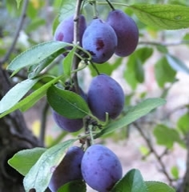
【 あとがき】
ここに収められた42のエッセイは、2014年4月～5月にかけて 『 Entre la poire et le fromag e 』（洋ナシとチーズの間）という、一連の『パリ滞在記』として書かれた文章です。50本で一冊の単行本を出版する予定で、全体としては中距離走的な呼吸と筋肉を使いながら、一気に書き上げました。
当時、パリへ来てちょうど10カ月が過ぎ、小説とは別に、日本語で表現したい事象がたまってきたこと、また好みは別としてエッセイという形式で、今感じていることを書き残しておくのも、文章トレーニングの一つとして有益と考えたからです。
本来、小説を書くため外国にやって来た自分にとって、これらは「物語」の中に職業的技術をもって包み込み、差し出すべき題材として仕込んでいたパリのいくつかの景色でした。ところが、うまく物語の引き出しに収まりきらなかったり、あまりに個人的でこぼれ落ちてしまったいくつかのネタがあり、まあそれなりに切羽詰まっていた、自身の姿を書き残しておくのも悪くなかろうと、腹をくくったわけです。
「好みは別として」とは、この世のあらゆる「エッセイ」という形式は、いかに優れたものであっても、突き詰めれば究極自慢話でしかない。常々そう自分に言い聞かせているからです。どんなに自分を卑下したり、謙遜しているように見えても、最終的には「自分すごいでしょ」と言っているものなんだということを書き手としても読み手としても、肝に銘じたうえで上手に付き合っていこう、ということです。まあ、だからこそ、高度な技術が必要とされる「試み」（essai）＝エッセイ、なのですが。
着地点が決まっていないエッセイを、そもそも私は生理的に受け付けません。作家の中には、筆の赴くまま、さらさらと書きだして、どこに辿り着くか自身でも分からないけれど書きながらインスピレーションを膨らませていく天才肌も少なからずいます。「見えているゴールのためになんか書いたって面白くもなんともない」というタイプ。まあ、面白いのは書いている本人だけで、たわごとを文学と信じ込み読まされている読者も案外多いのかもしれない。
私の場合、これから書こうとしているテーマの「着地点」が見えた瞬間、そこに辿り着くまでの道筋がしっかりと見えて、「よし、行ける、間違いなく行ける！」と頭の中でＧＯサインが出ます。あとは自分の職業的プロフェショナル感に頼って、ひたすらに、モノもとらずに最後まで一気に走り抜ける。ジョグ（構想時）と短距離走（イザ執筆時）のインターバル走を42本繰り返した感じです。短編小説の書き方に似ています。
タイトルの由来はフランス語のことわざで「リラックスした頃に」の意。この本をしたためた経緯やタイトルの意味、またエッセイを手掛けるにあたって自分に課したいくつかのルールについては最初のエッセイで述べている通り。基本的には、肩の力を抜いて、楽に読める、一本読み切りとしました。
もとは雑誌（週刊誌）の掲載を念頭に書きためていったものです。パリから随分、日本の出版社に向けてアプローチをし続けました。何社も、何十社も、季節が変わっても、諦めずにです。それでも結局 「一般の方」 の作品では門前払いで、編集者の手にすら届かないのが現状です。最終的に初期投資ゼロ、見返りナシも承知で、殆ど、全ての情熱をどぶに捨てる思いで、ｋｉｎｄｌｅ個人出版という形をとらざるを得ませんでした。「あとがき」は加筆し、最初に用意した42本のドラフトは時を経て耐えうるよう、修正を施しました。執筆、編集、校正、出版までの流れを全部ひとりで行うのは予想外の展開でした。が、少し前に、アーサー・コナン・ドイルのホームズ短編小説の翻訳『唇のねじれた男』（解説付／2014年9月26日出版）を経験していたため、このまま形にせず、誰一人の目に触れぬまま読まれないでいるよりは―――と、電子出版に踏みきった次第です。
紙の本へのアプローチは引き続き継続する予定で、これを名刺代わりに、今後も出版先を探していきます。
さて自身の『パリ滞在記』は、この後、このエッセイの中でも何度か触れているように、「パリのダンス」へと傾倒していくことになります。2014年初夏～夏にかけて執筆済みの「パリ・ダンス事情」、こちらは『パリ滞在記』第2弾として、今後編集作業に入る予定です。
最後までお読み頂き、ありがとうございました。
折川 朋子 （Ｔｏｍoko ＯＲＩＫＡＷＡ）
A Paris, 04/Oct/2014
＜ Entre la poire et le fromag e ＞
アントレ・ラ・ポワール・エ・ル・フロマージュ
洋ナシとチーズの間
注：使用写真はParis http://www.paris.fr/ など。
【著者について】
折川 朋子
Ｔｏｍｏｋｏ ＯＲＩＫＡＷＡ
1977/12/30東京生まれ。国際学修士。
大手全国紙12年勤務後、文筆業のため2013年単身パリ移住。